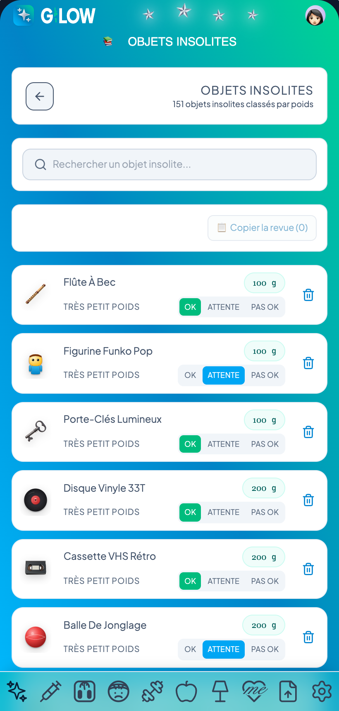

Les chapitres écrits — brouillons
Brouillons — rien ici n'est vérifié. Ces 20 chapitres ont été écrits depuis l'inventaire de la V1 et son code, mais n'ont pas encore été réfutés contre le code ni corrigés. Ils peuvent contenir des affirmations que le code ne fonde pas.
La spécification, elle, est là : un chapitre n'y entre qu'une fois réfuté et corrigé.
1. Le produit ↑ sommaire
GLP1LOW est un carnet de suivi personnel pour une personne sous traitement GLP-1, en injection ou en comprimé. Il enregistre ce qui se passe pendant la cure — prises, poids, effets secondaires, alimentation, pas, activité physique, sommeil, temps pour soi —, le restitue en totaux, moyennes, courbes et échéances, et produit un document PDF à remettre à un professionnel de santé. Une seule personne par installation.
Objet et posture
Le produit ne pose pas de diagnostic et ne touche pas aux posologies : l'avertissement médical, accepté obligatoirement au premier lancement, le dit (« l'application n'intervient pas dans les posologies »), et le document PDF porte en pied « document de suivi personnel, ne constitue pas un avis médical ». Le traitement se choisit dans un catalogue, jamais saisi à la main ; chaque forme finit par « Autre ». Dans la V1 le catalogue porte aussi les doses usuelles et la cinétique de chaque molécule, qui servent à la courbe de concentration ; dans la V2 il ne porte que les noms et la forme. V2
Une seule personne : un profil, une sauvegarde sous une clé unique qui ne porte pas l'identifiant du compte — la sauvegarde appartient à l'appareil, pas au compte. Le compte (V1) ouvre l'application quand Firebase est configuré : courriel et mot de passe, ou Google ; pas d'inscription libre. La V2 recueille un courriel et un mot de passe de huit signes au moins, seule contrainte, et ne crée rien. V2
Les règles derrière
- L'avertissement occupe seul l'écran tant qu'il n'est pas accepté. → technique
- Le catalogue : treize traitements plus « aucun », identifiants stables. → technique
- Sans configuration Firebase, l'application s'ouvre sans compte. → technique
- Toute la sauvegarde est un seul JSON sous une clé. → technique
Les principes
Rien de dérivable n'est stocké. La durée d'un sommeil se déduit de ses deux instants complets ; une séance ne porte pas ses calories ; une pesée ne porte pas son IMC. Les valeurs nutritionnelles d'un repas sont recalculées depuis sa composition à chaque écriture, mais restent stockées comme cache. non implémenté
On référence par identifiant. Un traitement est enregistré par son identifiant (ozempic), un aliment par le sien ; une sauvegarde qui portait encore un nom est convertie au chargement. Les effets secondaires, les sports et les activités pour soi sont enregistrés par leur nom. non implémenté
Les unités sont canoniques en base. Kilogrammes, centimètres, grammes ou millilitres, milligrammes, minutes, mètres, années ; aucune étiquette d'unité n'est stockée. Un aliment saisi en litres ou en kilos est multiplié par mille avant enregistrement. Le profil V1 porte un système de mesure, mais rien ne le lit : l'affichage est toujours métrique. non implémenté La V2 choisit le système avec la langue — le français amène cm · kg, l'anglais inch · pound, rechoisissable — et stocke la taille en centimètres ; le poids reste le texte saisi dans l'unité choisie. V2
Les dates sont locales. Un jour s'écrit AAAA-MM-JJ, une heure HH:MM, lus sur l'horloge de l'appareil, sans fuseau ; l'arithmétique des jours se fait champ par champ. Toute heure enregistrée est ramenée à la minute ronde inférieure (0, 10, 15, 20, 30, 40, 45, 50). Seules les dates relatives (« lundi 3 août ») construisent une date depuis la chaîne, ce que la couche de dates interdit ailleurs.
Supprimer supprime. Une ligne effacée quitte la sauvegarde ; les lignes marquées supprimées par l'ancien modèle sont purgées au chargement. La suppression du compte efface tout le stockage local. Vider les pesées épargne la pesée de départ.
Une valeur absente se tait. Aucun rythme hebdomadaire avant sept jours de recul ou avec moins de deux pesées ; aucune moyenne par semaine avant sept jours d'historique ; dans ces cas la fonction rend null et rien n'est écrit — ni zéro, ni tiret.
Aucune branche ne se ferme sur un silence. Dans le questionnaire V1, le poids actuel est demandé tant que « j'ai déjà commencé » n'est pas un oui explicite, question passée comprise ; passer une étape efface ses réponses et referme ce qu'elles avaient ouvert ; le questionnaire n'écrit rien hormis le thème. Dans la V2, chaque branche se ferme sur une valeur toujours présente — « perdre du poids » et « traitement commencé : oui » sont retenus d'avance — et une seule étape bloque, celle qui demande quel traitement. Les réponses ne sont pas enregistrées : un rechargement perd tout. V2
Les règles derrière les principes
- Durée de sommeil = réveil − endormissement, zéro si le réveil précède. → technique
- Nutrition du repas recalculée à chaque écriture. → technique
- Libellés hérités de traitement convertis en identifiants. → technique
- Points 1 à 11 du modèle de données. → technique
- Dates locales, jamais UTC. → technique
- Minutes rondes à l'enregistrement. → technique
- Dates relatives via
new Date(chaîne). → technique - Suppression franche. → technique
- Purge des lignes marquées, sept journaux. → technique
- Vider les pesées épargne le départ. → technique
- Questionnaire : visibilité et effacement des étapes. → technique
- Identifiants : UUID v7 pour les repas, préfixe + horodatage ailleurs. → technique
- Nombres écrits avec un point décimal, virgule acceptée à la saisie. → technique
Camille enregistre une prise d'Ozempic 0,25 mg le 4 mai 2026 à 00 h 37 : la ligne porte 2026-05-04, 00:30 et l'identifiant ozempic. Partie de 96 kg le 4 mai, pesée à 95,2 kg le 7 mai, elle ne voit aucun rythme hebdomadaire : trois jours de recul. Le 11 mai, il apparaît.
Contraintes
Les données de suivi vivent dans le stockage local de l'appareil, écrites à chaque changement ; il n'y a ni base distante ni synchronisation. Ce qui en sort : le PDF que la personne exporte ou partage ; les avis, retours et réponses au sondage, envoyés avec le contexte technique de l'envoi et aucune donnée de santé ; un code-barres interrogé sur Open Food Facts ; la connexion, qui passe par Google. Une sauvegarde illisible est mise à l'abri sous une clé de secours et la session passe en lecture seule.
Les bornes n'écartent que l'absurde : âge de 1 à 130 ans, taille de 50 à 300 cm, poids de 0,1 à 1 000 kg. Les autres bornes de saisie (mensurations, distances, nutriments, poids d'objet) sont des propositions. arbitrage non validé La V2 reprend l'âge et la taille, remplace l'âge par l'année de naissance, et borne la liste des poids à 999 kg ou 2 000 lb — deux plafonds ronds, pas la conversion l'un de l'autre. V2 Une saisie impossible se refuse : un réveil antérieur à l'endormissement, une date incomplète.
Les règles derrière les contraintes
- Couche de stockage : erreurs avalées, écriture silencieuse, effacement en bloc. → technique
- Garde-fou du chargement. → technique
- Contexte d'un envoi : aucune donnée de santé. → technique
- Bornes des champs numériques. → technique
- Calendrier : la date n'est enregistrée qu'une fois complète et possible. → technique
- Suppression du compte : compte d'abord, puis stockage, puis rechargement. → technique
Camille, née en 1978, 168 cm, 96 kg : tout passe. Un poids tapé « 1200 » est refusé avec « Un poids entre 0,1 et 1000 kg est attendu. » ; dans la V2 la roue s'arrête à 999.
Non-buts
Pas de synchronisation, de compte partagé ni d'accès soignant. Pas d'objet connecté : les pas se saisissent à la main, une entrée peut être marquée simulée. Pas de conseil nutritionnel, sportif ou posologique : les paliers de dose proposés sont ceux du catalogue, les objectifs quotidiens par défaut (1 400 kcal, poids × 1,5 g de protéines, 25 g de fibres) se modifient. Pas de réseau social : le seul lien nommé « Social » ouvre un gabarit statique de carte pour les réseaux sociaux, depuis une page qu'aucune entrée de menu relevée n'atteint. Le suivi hydrique et les objectifs de poids à paliers ont été supprimés ; leurs traces sont écartées au chargement, et la V2 ne les réintroduit pas, ni les saisies rapides comme modèle. V2
La V2
Repartie de zéro le 6 septembre 2026 dans son propre dépôt, sans rien copier de la V1 : ce qui en vient est repris pièce par pièce — le cadre du téléphone, les noms et formes des traitements, le dessin de l'avatar. Deux contraintes décident de la forme du code : le passage à React Native (aucune API du navigateur hors d'un seul fichier) et le multilingue (aucun texte dans un écran, français et anglais). À ce jour elle ne porte que l'onboarding ; rien n'est enregistré, aucune page ne suit le dernier écran. V2
Hors périmètre
L'administration et les thèmes ne font pas partie de cette spécification.
2. Le compte et les données ↑ sommaire
Le compte ouvre l'application ; il ne synchronise rien. Tout le suivi vit sur l'appareil, dans un stockage local derrière une couche unique, et n'en sort que par un geste explicite. Ce chapitre couvre la connexion, l'avertissement médical, la sauvegarde et ses garde-fous, la suppression du compte.
Page de connexion
Capture absente : profil-compte/page-de-connexion
Le mot-symbole, la phrase « Accès privé — connectez-vous pour continuer », un champ e-mail, un champ mot de passe, le bouton « Se connecter », un séparateur « ou », le bouton « Continuer avec Google » (fenêtre surgissante), puis « Les comptes sont créés par l'administratrice — pas d'inscription libre. » Il n'y a ni inscription ni mot de passe oublié. La page s'affiche quand Firebase est configuré et qu'aucune session n'est ouverte ; une fois connectée, elle ne revient qu'après une déconnexion explicite. Un champ vide donne « Renseignez l’e-mail et le mot de passe. » sans appel réseau ; pendant l'appel, les deux boutons sont désactivés ; chaque échec est traduit en français. V2 La V2 n'a pas de Firebase ni de page de connexion : le compte se crée sur le dernier écran de l'onboarding (voir Dans la V2), ce qui contredit « pas d'inscription libre ».
Les règles derrière les chiffres
- E-mail trimé puis vide, ou mot de passe vide : message local, aucun appel. → technique
- E-mail inconnu, mot de passe faux ou identifiant invalide donnent le même message « E-mail ou mot de passe incorrect. » ; compte désactivé, trop de tentatives, réseau coupé, fenêtre Google refermée ou bloquée, domaine non autorisé ont chacun leur phrase ; défaut « La connexion a échoué. Réessayez. ». → technique
- Le verrou est actif dès que la configuration Firebase porte une clé ; celle du dépôt est remplie. → technique
Camille se trompe d'une lettre dans son mot de passe : « E-mail ou mot de passe incorrect. » Le message ne dit pas lequel des deux est faux.
Écran d'attente de session
Capture absente : profil-compte/ecran-d-attente-de-session
Au lancement, le temps que le SDK restaure la session mémorisée, un écran uni avec un point animé (aria-label « Chargement ») ; ensuite l'application, ou la page de connexion. La session est gardée sans limite de durée sur l'appareil. Sans configuration Firebase, ni attente ni connexion : l'application s'ouvre sans compte.
Les règles derrière les chiffres
- Trois états : chargement, déconnectée, connectée (identifiant, e-mail, nom d'affichage) ; la session persiste jusqu'à déconnexion explicite. → technique
Camille s'est connectée en mai 2026 ; chaque lancement depuis passe par ce point puis l'accueil, sans redemander le mot de passe.
Avertissement médical

Au premier lancement, cette page occupe seule l'écran sous le titre « Information Médicale », sans croix. Trois onglets : Cadre (défaut : carnet personnel, pas d'auto-médication, urgence 15 ou 112), Vie Privée (stockage local, seuls tiers Google pour la connexion et Open Food Facts pour un code-barres, droit d'effacement), Sécurité (données sur l'appareil, HTTPS, minimisation des données). Le pied porte la case « J'atteste avoir lu que cette application est un outil de suivi personnel, qu'elle ne remplace pas un médecin et qu'elle ne fournit aucun conseil médical. » et le bouton « J'accepte et j'accède », désactivé tant que la case n'est pas cochée. Ensuite, titrée « Avertissement Médical », elle s'ouvre par le bouton « Info Santé & Confidentialité » au pied de chaque page, par l'entrée Sécurité de « Configuration & Plus » ou depuis l'accueil ; elle remplace le contenu de la page en cours et se ferme par « Fermer » ou la croix. L'acceptation est une clé du stockage local : la suppression du compte l'efface et la page revient au lancement suivant.
Les règles derrière les chiffres
- Tant que la clé hasAcceptedMedicalDisclaimer_v1 ne vaut pas 'true', la page est seule à l'écran ; accepter écrit 'true'. → technique
- Premier lancement : pas de croix, bouton éteint tant que la case est décochée, onglet initial Cadre. → technique
Données sur l'appareil
Toute la sauvegarde est un seul JSON sous la clé glp1_app_companion_data, réécrit à chaque changement. Au lancement, elle est lue puis convertie : traces des fonctions supprimées écartées, profil complété sur le profil d'usine, migrations enchaînées. Sans sauvegarde, l'application part du profil d'usine et d'une pesée de départ semée à 95 kg, datée de la veille à 08:00. Lectures et écritures passent par une couche unique (shared/platform/storage.ts) : stockage indisponible ou plein, la lecture rend null et l'écriture échoue en silence. Aucune base distante ne reçoit le suivi. Des copies de secours horodatées existent (clé glp1_app_companion_data__secours-AAAA-MM-JJ-HHMMSS, index trié, copie vérifiée par relecture, restauration qui met d'abord l'état courant à l'abri) ; seule la page d'administration les liste et les restaure, hors périmètre. V2 La V2 n'enregistre encore rien : un rechargement perd les réponses.
Les règles derrière les chiffres
- Une clé, un JSON, écrit à chaque changement d'état. → technique
- Chaîne de conversion au chargement, idempotente. → technique
- Profil d'usine et pesée de départ semée. → technique
- JSON ou chaîne nue, erreurs avalées, clearAll efface tout le stockage. → technique
- Copies horodatées en heure locale, suffixe si la clé est prise, jamais recouvertes. → technique
Bloc « Limite atteinte » / sauvegarde illisible

Si le JSON ne se lit pas, la chaîne brute est recopiée telle quelle sous glp1_app_companion_data__secours, seulement si cette clé est vide ; l'application repart du profil d'usine et de journaux vides et n'écrit plus rien de la session ; le bloc en tête de page dit : « La sauvegarde n’a pas pu être lue. Elle a été mise à l’abri sous la clé « glp1_app_companion_data__secours » et RIEN ne sera enregistré tant que cet écran n’aura pas été rechargé : vos données ne sont pas effacées. » Le bloc garde le titre « Limite atteinte », celui des refus de plafond qu'il sert aussi ; OK le ferme. Aucun écran ne propose de restaurer la copie.
Les règles derrière les chiffres
- Lecture ratée : copie sous la clé de secours une seule fois, plus aucune écriture, message à l'écran. → technique
La sauvegarde de Camille est tronquée par un onglet fermé au mauvais moment. Au lancement suivant, ses 96 kg de départ et ses injections n'apparaissent plus, mais restent intacts sous la clé de secours ; ce qu'elle saisirait dans cette session ne serait pas enregistré.
Mon compte

Ouverte par « GLP1LOW et vous » → Mon compte, ou par le lien « Mes préférences de compte » au bas de Mon profil. Trois sections sans action : « Mon abonnement » (« ne propose aucun abonnement pour l'instant »), « Moyens de paiement » (« Aucun moyen de paiement n'est enregistré. »), « Factures et reçus » (« Il n'y a aucune facture : rien ne vous a été facturé. », avec renvoi vers l'export du rapport médical). Le bloc « Supprimer mon compte » ferme la page.
Bloc « Supprimer mon compte »

Trois états, sans fenêtre. Au repos : « Vous pouvez fermer votre compte et effacer tout ce que l'application a enregistré sur cet appareil. » et le bouton « Supprimer mon compte et mes données ». Mise en garde, ouverte sous le bouton : « Prenez un instant avant de confirmer. », trois puces (le compte n'existera plus ; tout le suivi effacé — balance, menus, injections ou comprimés, effets secondaires, activité physique, sommeil, un temps pour soi, pas, favoris, recettes, aliments, badges, profil et réglages ; rien gardé en réserve), le conseil de refermer l'application pour une pause ou d'exporter le rapport médical avant, puis « Supprimer définitivement », « Annuler » et une croix. Travail : le bouton affiche « Suppression… », tout est désactivé. L'ordre : le compte Firebase d'abord (si configuré), puis tout le stockage local effacé, session comprise, puis rechargement sur la page de connexion. En cas d'échec, message, retour à la mise en garde, rien n'est effacé ; si la session est trop ancienne, un bouton « Se reconnecter » déconnecte et recharge sans toucher aux données. C'est la seule déconnexion de l'application.
Les règles derrière les chiffres
- Compte d'abord, données ensuite ; un échec du compte laisse tout en place. → technique
- Sans session : 'auth/no-current-user' ; session ancienne : 'auth/requires-recent-login' ; la déconnexion suit la suppression. → technique
- Chaque message d'échec dit que rien n'a été effacé. → technique
- clearAll vide tout le stockage local, session Firebase et acceptation médicale comprises. → technique
Camille, connectée depuis mai 2026, appuie sur « Supprimer définitivement » : Firebase refuse, « Par sécurité, cette suppression demande une connexion récente. Reconnectez-vous, puis recommencez — rien n’a été effacé. » Elle appuie sur « Se reconnecter », ressaisit e-mail et mot de passe, recommence : le compte disparaît, puis ses 96 kg de départ, ses injections d'Ozempic et ses badges, sans copie ; l'application se rouvre sur la page de connexion.
Dans la V2
V2 Pas de Firebase. Le compte s'ouvre sur le dernier écran de l'onboarding, avec l'année de naissance, la taille et le prénom : une adresse e-mail et un mot de passe. Seule contrainte : huit signes au moins pour le mot de passe ; la règle « Huit caractères au moins. » se lit sous le champ avant toute faute et passe à l'accent dès qu'on a commencé à taper sans l'atteindre ; un mot de passe vide ne bloque pas. Rien n'est enregistré, aucune session n'est ouverte ; pas d'avertissement médical ni de suppression de compte.
3. L'arrivée : l'onboarding ↑ sommaire
L'onboarding est le parcours du premier lancement de la V2 : neuf écrans qui règlent l'application (thème, langue, unités) puis recueillent l'objectif, les poids, le traitement, l'avatar et l'identité. Il s'adresse à la personne qui installe l'application. Rien n'y est obligatoire, hormis nommer son traitement quand on dit l'avoir commencé et tenir huit signes quand on commence un mot de passe. Le questionnaire de la V1 (src/features/onboarding, 24 étapes) est remplacé ; il n'écrivait ni profil, ni journaux, ni modules.
Le parcours et ses boutons V2
Chaque page a trois zones : l'entête (logo, mot-symbole et, à partir de « Avez-vous commencé votre traitement GLP-1 ? », les billes du décompte), la zone du milieu, seule à défiler, et la rangée des boutons au bas de l'écran. « Précédent » est absent du premier écran. « Suivant » s'éteint, sans disparaître, quand l'étape refuse de laisser passer ; sur le dernier écran il ne porte que le mot-symbole. Le bouton « retour » de la barre du téléphone recule d'une étape et s'éteint à moitié sur la première. Chaque écran s'ouvre en haut de sa zone.
Les règles derrière les chiffres
- Étapes visibles selon les réponses : neuf étapes dans un ordre fixe ; « Quel poids visez-vous ? » ne se montre qu'à qui veut perdre du poids, « Quel traitement » qu'à qui a répondu Oui ; la liste se recalcule à chaque réponse. → technique
- Ce qui bloque Suivant : « Quel traitement » tant que la forme ou la spécialité manque ; « Dernière étape » si un mot de passe commencé fait moins de huit signes ; nulle part ailleurs, une question sans réponse se saute. → technique
- Décompte des écrans : une bille par étape visible, allumée pour chaque étape passée, sans aucun texte ; l'écran courant compte parmi ceux qui restent, la dernière bille ne s'allume donc jamais dans le parcours. arbitrage non validé → technique
- Langue détectée : l'application parle la première langue du navigateur qu'elle sait servir (français, anglais), sinon le français ; le choix fait à l'écran n'est pas lu. → technique
- Rien n'est enregistré : les réponses vivent en mémoire, un rechargement les perd, et le bouton du dernier écran ne mène nulle part. non implémenté → technique
Camille répond « Perdre du poids » puis « Oui » : elle voit les neuf écrans. Qui répond « Stabiliser mon poids » puis « Non » n'en voit que sept, et les billes le disent.
Thème V2


Un cadre par thème, sans son nom écrit (il est dit aux lecteurs d'écran) ; chaque cadre montre son propre fond même quand l'autre habille la page. Toucher un cadre change aussitôt l'entête, le titre, les cadres et le bouton. Deux thèmes : Ciel (jour) et Ciel foncé (nuit). Pas de « Précédent » ; « Suivant » occupe la rangée.
Les règles derrière les chiffres
- Thème appliqué à la page : le thème retenu pose sa classe sur la page de l'onboarding ; le contour du téléphone et sa barre du bas ne le suivent pas. → technique
Langue et unités V2

Deux questions, chacune sur une ligne. Français et cm · kg sont retenus d'avance. Toucher « English » fait passer les unités à inch · pound sous les yeux ; toucher « Français » les ramène à cm · kg ; les unités se rechoisissent ensuite librement. Les unités sont branchées : le poids et la taille se saisissent dans le système choisi. La langue est une maquette : recueillie, elle ne change pas les textes.
Les règles derrière les chiffres
- La langue repose les unités : français → cm · kg, anglais → inch · pound, en un seul geste ; le dernier geste l'emporte sur des unités réglées à la main juste avant. → technique
Objectif V2

Deux réponses, la première retenue d'avance. « Stabiliser mon poids » retire l'écran du poids visé du parcours ; « Perdre du poids » le remet.
Poids actuel V2

Un champ affiche les kilos, le séparateur de la langue (virgule en français), puis la centaine de grammes (0, 100 … 900) ; l'unité est écrite hors du champ. 95,0 est proposé d'avance. Toucher le champ ouvre deux roues ensemble, le cran retenu au milieu de chacune : les kilos de 1 à 999 (les livres de 1 à 2 000, avec une seconde roue de 0 à 9), puis la centaine de grammes. Le kilo ne referme pas le panneau ; la centaine le referme et vaut confirmation ; un clic à côté ou Échap referment aussi. Aucun message de refus : les roues n'offrent que des valeurs possibles.
Les règles derrière les chiffres
- Plafonds du poids par unité : 999 kg et 2 000 lb, deux plafonds ronds et non la conversion l'un de l'autre ; ils bornent la roue. → technique
- Poids gardé en texte avec un point : « 96.0 » quelle que soit la langue, la virgule n'étant qu'affichée ; la valeur reste celle de la roue si l'on revient changer d'unités. → technique
- Stockage métrique du poids : un poids choisi en livres devrait être ramené en kilogrammes ; aujourd'hui il est gardé tel quel. non implémenté → technique
- Ouverture et fermeture des roues : un geste ouvre les colonnes, la dernière colonne referme, le clic dehors et Échap referment ; commun au poids, à l'année de naissance et à la taille. → technique
Camille pèse 96 kg : roue de gauche sur 96, roue de droite sur 0. Le champ affiche 96,0 kg ; la réponse gardée est « 96.0 ».
Poids visé V2

Le même écran que le poids actuel, seule la question change. Il ne se montre qu'à qui veut perdre du poids. Sa valeur est indépendante : même défaut de 95,0, aucune copie du poids actuel, aucune borne tirée de lui.
Les règles derrière les chiffres
- Poids actuel et poids visé jamais liés : deux réponses distinctes, mêmes bornes, même défaut, aucune mémorisation de l'une vers l'autre. → technique
Traitement commencé ? V2

Une question, Oui · Non sur une ligne, Oui retenu d'avance : il y a toujours une réponse, l'écran ne bloque rien. C'est ici que les billes apparaissent. Répondre Non efface la forme et la spécialité déjà choisies et retire l'écran suivant du parcours ; l'avatar vient alors tout de suite après.
Les règles derrière les chiffres
- Les réponses du traitement se défont ensemble : Non efface la forme et la spécialité ; changer de forme efface la spécialité. → technique
Quel traitement V2

Seul écran sans titre : les deux intitulés disent la question. La forme n'a pas de réponse d'avance ; la liste des spécialités n'apparaît qu'une fois la forme choisie. Injection : Ozempic, Wegovy, Mounjaro, Zepbound, Saxenda, Victoza, Trulicity, Rétatrutide, Autre. Comprimé : Rybelsus, Wegovy, Foundayo, Autre. « Suivant » reste éteint tant que la forme et la spécialité ne sont pas toutes deux choisies. Ni dose, ni date de début, ni posologie ne sont demandées.
Les règles derrière les chiffres
- Catalogue des traitements : treize spécialités, neuf injections et quatre comprimés, chaque forme finissant par Autre ; les noms sont des marques, non traduits, et la réponse gardée est l'identifiant (« ozempic », « wegovy-oral »). → technique
- Ce qui bloque Suivant : forme et spécialité exigées ici, et nulle part ailleurs sauf le mot de passe. → technique
Avatar V2
Le créateur d'avatar de la V1, sans photo ni tirage au hasard. Le portrait change à chaque touche et reste en place pendant que défilent huit réglages : Genre (Femme · Homme · Neutre), Peau (six pastilles), Coiffure (Courts, Longs, Bouclés, Frange, En brosse, Sans cheveux), Cheveux (six pastilles), Yeux (cinq pastilles), Visage (Ovale, Rond, Carré, Cœur), Expression (Joyeuse, Déterminée, Fière, Calme), Lunettes (Oui · Non). Le genre se voit sur le vêtement et la coiffure de départ ; il n'est plus demandé ailleurs. Les pastilles n'ont pas de nom écrit ; il est dit aux lecteurs d'écran (Blond, Noisette…).
Les règles derrière les chiffres
- Le genre amène sa coiffure : Homme → Courts, Femme → Longs, Neutre → Bouclés, posée en même temps que le genre ; la coiffure se rechoisit juste en dessous. → technique
- Avatar de départ : Neutre, visage ovale, peau beige, yeux bleus, cheveux bouclés bruns, sans lunettes, expression joyeuse. → technique
- Les couleurs sont des données : les codes des teintes choisies (peau, yeux, cheveux) font partie de la réponse ; les couleurs du dessin (pupille, bouche, vêtement) n'en font pas partie. → technique
Dernière étape V2

Cinq champs. Année de naissance (roue, 1980 d'avance) et Taille (roue, 165 cm d'avance, en pouces si le système est impérial) côte à côte, chacune d'une seule roue qui se referme au cran choisi. Prénom, Adresse e-mail et Mot de passe en champs texte ; prénom et adresse ne sont pas vérifiés. Sous le mot de passe, « Huit caractères au moins. » est écrit d'emblée et passe à l'accent du thème dès qu'un mot de passe de un à sept signes est tapé. Un mot de passe vide laisse passer. Le bouton porte le mot-symbole (nom lu : « Entre dans la galaxie GLP1LOW ») et, aujourd'hui, ne mène nulle part.
Les règles derrière les chiffres
- Bornes de l'année de naissance et de la taille : année de (année en cours − 130) à (année en cours − 1), soit 1896 à 2025 en 2026 ; taille de 50 à 300 cm ou de 20 à 118 in. → technique
- Taille stockée en centimètres : la roue en pouces affiche cm ÷ 2,54 arrondi et rend pouces × 2,54 arrondi. → technique
- Règle du mot de passe : huit signes au moins, seule contrainte ; vide ne bloque pas ; dite avant la faute, sous le champ. → technique
Camille tourne la roue de 1980 à 1978 et celle de la taille de 165 à 168 ; en « inch · pound », la même roue aurait montré 66 et gardé 168 cm. Elle tape « Camille », son adresse et un mot de passe de neuf signes : le bouton reste allumé.
4. La Maison ↑ sommaire
La Maison est l'onglet « Accueil » de la version Mixte : une page qui résume la cure de la personne (poids, traitement, repas du jour, pas, ressenti) et ouvre chaque journal d'un clic. Trois templates d'accueil existent — standard, sections et blocs — et la personne peut en changer (réglage hors de ce chapitre) ; sans choix enregistré, c'est le template standard, décrit en premier ici. V2 La V2 n'a pas encore de page d'accueil ; ses règles absolues — aucune fenêtre par-dessus l'écran, aucun voile, sortie par bouton et jamais par minuterie — s'appliqueront aux couches et tiroirs décrits ici.
Home standard (page)

Les blocs s'empilent sur toute la largeur, dans cet ordre : Salut ; « dernière perte enregistrée » ; « Aujourd'hui » (si le module repas est allumé) ; le défilé des journaux ; « Depuis le début » ; le carré poids ; le bloc palier d'IMC (s'il est ouvert) ; le carré traitement (si le module traitement est allumé) ; « Mes pas » (sauf module des pas éteint) ; la section Dynamique ; le pied de page médical. Quand la dernière perte et la perte totale sont égales au dixième près, seule « Depuis le début » paraît, à la place de la première.
Une tuile de perte porte son libellé en bandeau, la perte en kg, un dessin d'objets du quotidien et la phrase d'équivalence insolite (chapitre Métabolisme et badges). Elle ne réagit pas au clic. Elle n'est montrée que si la perte est strictement positive, qu'une pesée existe au-delà du départ et que l'IMC actuel est d'au moins 19. Des boutons « + » de coin (pesée, injection, repas) existent mais sont désactivés par défaut.
Les règles derrière les chiffres
- Poids de départ, poids actuel (pesée la plus récente par date et heure), perte totale et dernière perte. → technique
- Conditions d'affichage des deux tuiles de perte et fusion quand elles sont égales. → technique
- Signe d'une variation : « +x » au-dessus de zéro, « -x » sinon (zéro s'écrit « -0 »). → technique
- Une décimale au plus, sans « .0 ». → technique V2 La V2 affiche la virgule décimale en français.
- Template retenu : la valeur enregistrée si elle est connue, sinon standard. → technique
- Un module absent du profil vaut allumé pour le traitement et les effets, éteint pour le sommeil et le temps pour soi. → technique
Camille pèse 88.4 kg le 12 septembre après 88.9 kg le 5 : la tuile « dernière perte enregistrée » affiche « -0.5 kg », la tuile « Depuis le début » « -7.6 kg » (96 − 88.4). Si sa seule pesée après le départ était celle du 12 septembre, les deux pertes vaudraient 7.6 kg et seule « Depuis le début » serait montrée.
Bloc « Salut »

Tête des trois homes. À gauche l'avatar ; à sa droite « Salut {prénom} » et le picto trois étoiles, puis l'objectif : ce qui reste à perdre (poids actuel − poids cible), « 0 kg » une fois la cible atteinte. En dessous, sur toute la largeur, la barre d'avancement vers la cible avec son pourcentage posé à l'abscisse où la barre s'arrête, puis la ligne « Cure : {traitement} • Rappels : {jour, ou « nj », ou Non} » — absente si le module traitement est éteint, rappels masqués sans traitement. Au bord droit, les badges débloqués (deux par ligne, quatre au plus), ou un badge « ? » tant qu'aucun n'est gagné (masquable depuis la page des badges).
Gestes : l'avatar, la salutation et tout le fond du bloc mènent au profil ; l'objectif s'édite sur place (champ « Cible : », enregistré si le nombre est positif) ; « Cure : » ouvre la liste des traitements et enregistre le choix, cliquer à côté referme sans changer ; les badges mènent à la page des badges. Sur la home sections, la barre et son pourcentage ouvrent en outre le suivi du poids en couche vitrée.
Les règles derrière les chiffres
- Reste à perdre = actuel − cible, au dixième ; « 0 kg » si négatif ou nul. → technique
- Avancement = (départ − actuel) / (départ − cible), borné 0–100 ; cible au-dessus du départ : 100 si atteinte, 0 sinon. → technique
- Ligne « Rappels » : jour de semaine, ou intervalle « nj » en rappel personnalisé, ou « Non ». → technique
- Badges montrés : catégorie activée et palier atteint ; badge « ? » argent sinon. → technique
Camille : 96 kg de départ, 88.4 kg aujourd'hui, cible 75 kg. Reste à perdre 13.4 kg ; avancement (96 − 88.4) / (96 − 75) = 36 %. Rappel hebdomadaire le lundi : « Rappels : Lun ».
Carré poids (Évolution)

Le bandeau compte la semaine de cure depuis la pesée de départ et, dès sept jours de recul, la perte moyenne par semaine. Un arc fléché relie Départ à Objectif, étiqueté de l'écart à parcourir en kg et en % du départ. Trois poids : Départ, Actuel (mis en avant), Objectif. La ligne IMC est masquée (« ••.• ») et se révèle par l'œil « Afficher » : « {IMC} {catégorie} ». Le pied donne la variation en % du poids de départ. Départ, Actuel et pied mènent à la page pesée ; Objectif au profil ; l'IMC révélé, quand la catégorie actuelle est meilleure que celle du départ, ouvre le bloc palier d'IMC.
Les règles derrière les chiffres
- Semaine n° = jours écoulés ÷ 7 + 1, jours comptés de minuit à minuit local depuis la pesée de départ. → technique
- « 1 jour » minimum, jamais « 0 jour ». → technique
- kg / semaine = (actuel − départ) × 7 / jours, affiché dès 7 jours. → technique
- Arc : objectif − départ, et ce même écart en % du départ ; rien sans départ ou sans objectif. → technique
- Variation en % du départ, « + » devant si positive. → technique
- IMC = kg / m², au dixième ; 0 sans taille. → technique
- Catégories : insuffisance pondérale, corpulence normale, surpoids, obésité I, II, III. → technique
- Palier franchi = index du palier actuel inférieur à celui du départ. → technique
Camille, partie le 4 mai 2026 : 131 jours le 12 septembre, semaine n° 19 ; (88.4 − 96) × 7 / 131 = −0.4 kg / semaine ; arc « −21 kg / −21.9 % » ; −7.9 % du poids de départ ; IMC 88.4 / 1.68² = 31.3, « Obésité I » — même palier qu'au départ (34), donc pas de bloc palier.
Bloc palier d'IMC franchi
Capture absente : accueil/bloc-palier-d-imc-franchi
Bloc pleine largeur ouvert sous le carré poids par le clic sur l'IMC révélé, seulement quand un palier a été franchi vers le bas. Il montre le palier de départ, le palier actuel, l'IMC et le poids actuels, et la phrase « Vous avez franchi le cap vers {catégorie} le JJ/MM/AAAA ». Une croix le referme ; « Voir les stats » mène à la page pesée.
Les règles derrière les chiffres
- Date du franchissement : première pesée, par date croissante, dont le palier est au plus celui d'aujourd'hui. → technique
Carré traitement

Présent si le module traitement est allumé. Le bandeau compte la semaine depuis la première prise du traitement en cours et l'ancienneté de la dernière (« aujourd'hui » ou « il y a n jour(s) »). Trois doses : Initial (première prise de la série), Actuel (dernière), Actif (concentration encore active). Le pied récapitule « {traitement} · n injection(s)|comprimé(s) · x mg cumulé ». Un smiley et sa phrase disent le ressenti du jour d'après les effets secondaires déclarés, si ce module est allumé. Tant qu'aucune prise n'est enregistrée : « Semaine n° 0 — traitement non commencé » et une invite, tout le carré ouvrant le formulaire d'ajout. Sinon, bandeau, Initial, Actuel et pied mènent au journal des prises ; Actif à la courbe du niveau sanguin ; le smiley aux effets secondaires.
Les règles derrière les chiffres
- Série en cours : en remontant l'historique, les prises du traitement courant jusqu'au premier changement de traitement. → technique
- Une prise datée du futur n'est ni comptée ni « actuelle ». → technique → technique
- Jours depuis la dernière prise, par différence de dates. → technique
- Concentration active : cumul pharmacocinétique des prises des 60 derniers jours, par molécule. → technique
- Humeur du jour : somme des sévérités (0 serein ; > 8 ou une sévérité ≥ 4 difficile ; modéré entre les deux). → technique
- Phrases sous le smiley. → technique
Camille s'injecte chaque lundi depuis le 4 mai : 4 × 0.25 mg, 4 × 0.5 mg puis 11 × 1 mg — 19 injections, 14 mg cumulés, dernière le 7 septembre, « il y a 5 jours ». Une nausée de sévérité 2 déclarée aujourd'hui : smiley neutre, « quelques effets secondaires aujourd'hui ».
Bloc « Mes pas »

Carte des pas du jour : le total sur l'objectif (8 000 pas), le pourcentage atteint et sa barre, la distance, la durée de marche estimée et la vitesse de référence, les kcal dépensées en bandeau. Toute la carte mène à la page des pas. Absente si le module des pas est éteint.
Les règles derrière les chiffres
- % = min(100, pas / 8 000) ; km = pas × 0,00076 ; durée à 4,2 km/h ; kcal selon le poids du jour. → technique
Défilé des dernières entrées

Bande horizontale entre « Aujourd'hui » et « Depuis le début » : un carré par entrée des sept derniers jours, tous journaux mélangés sauf les pas, du plus récent au plus ancien. Chaque carré porte la date (une nuit s'écrit « 25→26/8 »), le picto de la nature (repas, en-cas, injection, comprimé, pesée, temps pour soi, sommeil, sport, effet), un libellé, l'heure et la durée, et la valeur : kcal, kg, mg, effort, sévérité ou qualité « n/5 », faim « avant→après ». Un carré mène au journal d'origine. Rien n'est affiché sans entrée.
Les règles derrière les chiffres
- Fenêtre : d'aujourd'hui − 6 jours à aujourd'hui, futur écarté, 40 entrées au plus. → technique
- Nature d'une entrée (en-cas, comprimé ou injection, escaliers en étages, nuit datée du réveil). → technique
- Formats de la ligne de valeur et de durée. → technique
Section « Dynamique » — le verdict

Dernier bloc de la home standard arbitrage non validé. Il annonce, en une phrase, ce que la balance devrait faire au vu des sept derniers jours : la tendance (« à peu près stable », « légère hausse », « légère baisse », « hausse relativement marquée », « baisse relativement marquée ») porte une pastille. Le bloc entier ouvre le tiroir Dynamique. Tant que l'application n'a pas sept jours d'usage, le bandeau reste « Dynamique » arbitrage non validé, le contenu est dépoli, inerte, et porte le message « Utilisez GLP1low pendant 7 jours pour débloquer la dynamique générale de votre métabolisme. »
Les règles derrière les chiffres
- Bilan : repas ingérés − (métabolisme au repos × 7 j + pas + activité physique), saisies futures écartées ; 8 000 kcal = 1 kg. → technique
- Verdict : |écart| ≤ 300 g stable ; < 1 000 g légère hausse/baisse ; sinon marquée. → technique arbitrage non validé (bande 700 g – 1 kg lue comme « légère »)
- Les cinq phrases de la home et du tiroir. → technique
- Déblocage à 7 jours révolus depuis la première ouverture — ou depuis la donnée la plus ancienne des journaux pour une cure déjà en cours. → technique
- Le bloc n'ouvre le calcul que dévoilé. → technique
- Place : dernier bloc en standard ; deuxième section (après En direct) dévoilée et dernière verrouillée en sections. → technique
Camille sur sept jours : 9 800 kcal ingérées, métabolisme ≈ 10 731 kcal, pas −1 450 kcal, activité physique −600 kcal → différentiel −2 981 kcal, soit −373 g : « légère baisse attendue sur la balance ».
Fête « Dynamique débloquée »

À la première ouverture de la home où la section est dévoilée, une couche vitrée avec confettis titre « Dynamique débloquée » et dit : « Sept jours de suivi, et la dynamique générale de votre métabolisme se dévoile : elle vous attend en haut de l'accueil. » — alors que sur la home standard la section est en bas. Croix, clic à côté ou geste de la barre la ferment ; la marque est posée à la fermeture, et elle ne revient plus. Une personne dont les journaux ont déjà sept jours la voit dès la première ouverture.
Tiroir « Dynamique »

Ouvert depuis le bloc du verdict (ou une tuile de sens, home sections), dans les deux menus. Quatre sections : le métabolisme au repos par jour et le poids actuel ; « 7 derniers jours » — métabolisme × 7, repas / en-cas, pas effectués (−), activité physique (−) ; « Calcul sur les 7 derniers jours » — la soustraction posée jusqu'au différentiel ; « Projection » — une balance à plateaux inclinée selon le verdict et la phrase « Un différentiel de [−2 981 kcal] sur une semaine devrait se matérialiser par une légère baisse sur la balance. » Un clic à côté le referme.
Les règles derrière les chiffres
- Métabolisme par jour = total 7 j ÷ 7 arrondi ; inclinaison 0°, ±9°, ±17°. → technique
Pied de page médical

Dernier élément des homes, sans action : « Avertissement médical & Confidentialité : Cet outil est un carnet de bord personnel. Il permet à l'utilisateur d'organiser ses données et les met en page. Il ne remplace en aucun cas un avis médical et ne constitue aucune incitation à l'auto-médication. Vos données de santé restent sur votre appareil : elles ne sont envoyées à aucun serveur. »
Templates sections et blocs

Le template sections pose les mêmes données en carrés nus titrés par un séparateur hors bloc ; blocs est le même template habillé en cartes. Ordre : Salut ; « Ajout rapide » (absente en menu simplifié) ; « En direct » ; « Dynamique » si dévoilée arbitrage non validé ; « Progrès » ou « Évolution » ; « Côte à côte » ; « Dynamique » si verrouillée ; pied de page médical. Les sections ouvrent des couches vitrées plutôt que des pages.
Section « Ajout rapide »

Un bouton par page à formulaire d'ajout dont le module est allumé, dans l'ordre du menu du bas ; le picto du traitement est une seringue ou un comprimé selon la forme. Chaque bouton ouvre la page avec son formulaire déplié. Quand la rangée sort de l'écran, un « + » flottant prend le relais en bas de page.
Les règles derrière les chiffres
- Boutons = onglets du menu du bas ∩ pages à formulaire. → technique
Section « En direct »

L'instant présent. La bande kcal du jour (si le module repas est allumé) : les calories, ou « Enregistrer votre 1er repas aujourd'hui » à zéro, et deux barres Prot. et Fibr. avec leur pourcentage réel, l'objectif en grammes et un trophée à 100 %. Puis les tuiles pas, niveau sanguin actif (« voir détail » si plusieurs molécules sont actives) et effets secondaires (visage et phrase). Sans module des pas, la bande kcal devient un pavé à droite des deux tuiles ; repas et pas coupés à la fois, les tuiles prennent toute la largeur arbitrage non validé. La bande kcal ouvre la couche « Menus » (formulaire à zéro, récapitulatif sinon), le bouton « + Ajouter » directement en saisie ; la tuile pas la couche « Pas » ; le niveau sanguin la couche « Niveau sanguin actif » (ou la page injection sans prise) ; les effets la matrice des effets (ou la page sans déclaration).
Les règles derrière les chiffres
- Objectifs du jour : 1 400 kcal, protéines = poids × 1,5 g, fibres 25 g, sauf valeurs du profil. → technique
- Totaux du jour = somme des repas datés du jour. → technique
- Pourcentage réel (peut dépasser 100) et largeur de barre bornée. → technique
- Garde-fous : couche sanguine seulement avec un traitement et une prise ; matrice seulement avec une déclaration. → technique
- Entrée dans la couche Menus selon la tuile cliquée. → technique
Camille à 88.4 kg : objectif protéines 133 g ; 82 g mangés → « 62% », « [cible] 133g ». 12 g de fibres sur 25 → 48 %.
Section « Dynamique » — les trois sens

Au-dessus du bloc du verdict, trois tuiles disent par une flèche le sens des sept derniers jours par rapport aux sept précédents : repas, activité physique, pas (tuile absente si le module est éteint). L'infobulle écrit « En hausse | En baisse | Stable sur les 7 derniers jours … ». Une tuile ouvre le tiroir Dynamique ; le bouton « + Ajouter » ouvre la couche « Activité physique » en saisie. Verrouillée, la rangée est dépolie sans message.
Les règles derrière les chiffres
- Sens = comparaison des deux moitiés de 14 jours, seuil 5 % ; stable par défaut. → technique → technique
Section « Progrès » / « Évolution »

Titrée « Évolution » quand le poids actuel vaut ou dépasse celui du départ, « Progrès » sinon. De deux à quatre mini-tuiles, par rang : la perte moyenne par semaine (dès 7 jours de cure), les points d'IMC gagnés ou perdus, la perte totale et la dernière perte avec leur dessin insolite et leur durée (« en n semaines » ou « en n jours »). La tuile kg/semaine ouvre la couche « Balance », la tuile IMC la couche « Où en est l'IMC », une tuile de perte son équivalence en surimpression.
Les règles derrière les chiffres
- Composition, rangs et plafond de quatre. → technique
- Points d'IMC = (actuel − départ) / m², au dixième. → technique
- Durée d'une perte : jours entre les deux pesées, en jours sous 7, en semaines arrondies sinon. → technique
- Dessin d'équivalence : l'assignation faite par la pesée, sinon un recalcul. → technique
Camille : (88.4 − 96) / 1.68² = −2.7 points d'IMC ; perte totale 7.6 kg en 131 jours → « en 19 semaines » ; dernière perte 0.5 kg entre le 5 et le 12 septembre → « en 1 semaine ».
Équivalence insolite en surimpression

Le bloc d'équivalence en entier, le reste de la page vitré : libellé arbitrage non validé, perte, « soit l'équivalent de », dessin et phrase. L'état ouvert de chaque tuile est mémorisé ; les deux peuvent l'être, la perte totale est alors montrée. La croix ferme cette équivalence ; la vitre ou le geste de barre ferment les deux.
Section « Côte à côte »

Deux colonnes comparées. D'abord « début | aujourd'hui » : la dose initiale et actuelle avec le nom du traitement, le poids de départ et actuel. Puis « Depuis le début | 7 derniers jours », par domaine autour d'un médaillon : repas (kcal, protéines et fibres par jour), pas (par jour), sommeil (durée et qualité par jour), activité physique (minutes et séances par semaine), temps pour soi (moments par semaine). Un côté sans valeur reste vide ; le pluriel des unités commence à 2 arbitrage non validé ; le domaine repas reste visible module éteint arbitrage non validé. Chaque domaine finit par « Ajouter une entrée » (sauf les pas) et « Voir la page … ». Les valeurs ouvrent la couche du domaine (« Paliers de dose », « Menus » en vue moyenne sur la fenêtre de la colonne, « Pas », « Sommeil », « Activité physique », « Un temps pour soi ») ; le poids mène à la page pesée ; le médaillon à la page si le module est allumé. La section n'est montrée que si une valeur existe.
Les règles derrière les chiffres
- Colonne « 7 derniers jours » : d'aujourd'hui − 6 à aujourd'hui pour pas, sommeil, sport, temps pour soi. → technique
- Repas sur 7 jours révolus, jour courant écarté, par journée renseignée. → technique
- Repas depuis le début, par journée renseignée. → technique
- Pas : moyenne des journées à plus de 0 pas. → technique
- Sommeil moyen par journée dormie ; qualité pondérée par la durée. → technique
- Sport par semaine depuis la première séance, rien sous 7 jours. → technique
- Temps pour soi par semaine depuis la première entrée, rien sous 7 jours. → technique
- Infobulles protéines/fibres en % de l'objectif du jour. → technique
- Pluriel à partir de 2. → technique
- Gardes d'affichage de la section. → technique
- Médaillon à deux formes, cas aujourd'hui inatteignable. → technique arbitrage non validé
Camille, activité physique : 2 séances de 45 min par semaine depuis mai → « 90 min · 2 séances » à gauche ; une seule séance cette semaine → « 45 min · 1 séance » à droite.
Couches vitrées

Une seule couche à la fois, par-dessus la page floutée sans teinte, bornée au cadre du téléphone : une carte unique avec bandeau titré, croix, contenu et lien de pied ; la carte défile en son sein si elle est trop haute. Dix couches : « Pas » (le jour et le cumul), « Niveau sanguin actif » (le graphe), « Menus » (formulaire ou récapitulatif du jour, moyenne comparée), « Effets secondaires » (la matrice), « Balance » (le bloc de suivi du poids), « Où en est l'IMC » (échelle 16–42, départ et aujourd'hui), « Paliers de dose » (la frise), « Activité physique » (bloc « De quoi c'est fait » ou formulaire), « Un temps pour soi », « Sommeil » (7 dernières nuits). Elles se ferment par la croix, un clic sur la vitre ou le geste de la barre ; « Voir la page » referme puis navigue. Un repas s'enregistre, se modifie ou se supprime depuis « Menus » ; une séance s'enregistre depuis « Activité physique » ; créer un aliment absent referme la couche et ouvre le formulaire de la page, la saisie en cours est perdue.
Tiroir « Journal »

Ouvert par le bouton « Journal » de la barre du bas, en menu simplifié. Une case par journal — traitement, balance, effets, activité physique, repas, sommeil, temps pour soi, pas — modules allumés d'abord, éteints grisés ensuite, masqués absents. Chaque case liste les trois dernières entrées, toutes dates confondues, futur compris ; « Rien d'enregistré » sinon. Une case allumée ouvre le journal entier de la page en surimpression ; une case éteinte mène à la page vitrée du module.
Les règles derrière les chiffres
- Trois entrées par onglet après tri date puis heure décroissantes ; une journée à 0 pas reste montrée. → technique
- Forme de chaque ligne (nuit « du 25 au 26/08 », initiales de site « AG », durée « 1h05 »). → technique arbitrage non validé (initiales coupées quand la ligne est trop longue)
- Ordre et présence des cases. → technique
Journal d'une page en surimpression

Le journal complet de la page, avec ses lignes, sans filtre de période ni pagination. Balance : une pesée se modifie et se supprime sur place, et une pesée enregistrée déclenche la carte de confirmation de la page pesée. Autres journaux : Modifier, Supprimer et Gérer renvoient à la page. Repas : journées et repas se plient et se déplient, la suppression d'un aliment est inerte arbitrage non validé. « Ouvrir la page {nom} », la croix ou la vitre ferment.
Tiroir « Tendance des 15 derniers jours »

Ouvert par le bouton « Tendances » de la barre, en menu simplifié ; il sort du bas, pleine largeur, sans texte arbitrage non validé. Le titre dit une quinzaine, la donnée court sur quatorze jours. Chaque carte porte un picto, un titre et une courbe lissée sans échelle ; le chevron ou le titre bascule vers les valeurs, et la bascule est mémorisée : Actif sanguin « x mg » en direct, Balance « début → fin kg », Calories « kcal/j », Activité « durée −kcal/j », Temps pour soi « total », Sommeil « durée /j », Pas « x Kpas/j −kcal/j ». Sans forme : « Pas encore de données » ou « Pas encore de tendance » avec un lien de saisie. Effets secondaires : un visage avant → un visage après, ou un sourire « Pas ou peu d'effet secondaire ». Une carte ouvre le graphe principal en surimpression ; une carte éteinte écrit « Activez le module … », et ce message mène à la page Modules.
Les règles derrière les chiffres
- Séries sur 14 jours : poids reporté, concentration à midi, sommes journalières. → technique
- Forme dessinée dès deux valeurs distinctes. → technique
- Valeurs des cartes (dernière, première, moyenne informée, total, kcal/j). → technique
- Visages des effets : humeur de chaque moitié de sept jours. → technique
- Échelle et lissage de la courbe. → technique
- Cartes sans forme. → technique
Graphe principal en surimpression

Le graphe de la page du domaine, dans un bloc unique : niveau sanguin, poids et traitement (dès deux pesées), apports (calories d'abord), activité physique, temps pour soi, sommeil, pas, ou la matrice des effets. La période se change ici et reste partagée avec la page. Croix, vitre, ou « Voir la page » ancrée sur le graphe.
Les règles derrière les chiffres
- Fenêtres 7/14/30/90 jours inclusives, « Depuis le début », bornes « du … au … ». → technique
- Période par défaut 30 jours, mémorisée par bloc. → technique
Matrice des effets par moment

Un effet à la fois, sur les sept jours qui finissent à sa dernière déclaration : trois lignes (matin, après-midi, soir), une case par jour au cran le plus fort (rien, légère, modérée, marquée), et une note qui compte les déclarations. Des chevrons passent à l'effet précédent ou suivant. « Aucun effet secondaire déclaré. » si le journal est vide.
Les règles derrière les chiffres
- Moments par heure de saisie, crans par sévérité, ordre des effets. → technique
Widget de félicitation
Capture absente : accueil/widget-de-felicitation
Couche vitrée pleine page portant un titre, un corps et une scène de particules choisie par type de félicitation (douze types : badge débloqué ou monté de niveau, palier d'IMC, premier jour, dernière perte, première semaine, premier mois, première année, mois et année additionnels, multiples de 50 jours, autre). Les messages sont des propositions arbitrage non validé. Rien ne se ferme seul ; « Rejouer l'animation » resème la scène ; en mouvement réduit, l'animation ne part qu'au bouton « Voir l'animation ». non implémenté Aucun déclenchement n'existe : les règles dictées (journées renseignées, jalons de jours, mois, années, pourcentages de l'objectif) sont consignées et non codées ; le widget n'est ouvert que depuis une page d'essai, avec des contenus simulés.
Les règles derrière les chiffres
- Type → scène. → technique
- Messages, nombres à la française. → technique
- Même graine, même scène. → technique
- Durée d'une scène, pour le bouton Rejouer seulement. → technique
- Mouvement réduit, carte et vitrage sombres. → technique
5. Le traitement ↑ sommaire
Le traitement est le médicament GLP-1 que suit l'utilisatrice, choisi dans un catalogue de treize fiches, et le journal des prises qu'elle enregistre : injections ou comprimés, avec date, heure, zone, dose et notes. Le chapitre couvre la déclaration du traitement, la saisie et la tenue du journal (liste et calendrier), le niveau sanguin actif calculé depuis les prises, et ce que la home en montre. Les rappels d'injection sont réglés dans les modules ; ils sont résumés ici et détaillés au chapitre Profil.
Page « Injections » / « Comprimés »

Le titre est « Comprimés » si la fiche du traitement est orale, « Injections » sinon, avec l'icône correspondante ; la page empile le bloc de suivi des prises puis le niveau sanguin actif. On y arrive par l'onglet du menu du bas (présent si le module Traitement est allumé), par le menu « + » de la home (« Ajouter une injection », « Ajouter un comprimé », ou « Indiquer un changement de traitement » sans traitement), par le carré traitement et par le lien « Voir la page » des surimpressions. Arrivée par ajout rapide, le formulaire est ouvert dès la première peinture ; par le menu « + » sans traitement, le bloc de changement est ouvert. La cible « plot » que posent les tuiles « Actif » et « En direct » n'a pas d'effet visible : la page s'ouvre en haut ; seul le tiroir Tendances fait défiler jusqu'au graphe.
Les règles derrière les chiffres
- Titre, icône et entrée du menu « + » suivent la forme de la fiche du profil ; sans traitement, l'entrée devient « Indiquer un changement de traitement ». → technique
- « Comprimé » si la fiche est orale, « Injection(s) » sinon ; traitement absent = injectable. → technique
- Le module Traitement est allumé tant que son drapeau est absent ; éteint, l'onglet disparaît. → technique
Bloc de suivi des prises
En tête, un bouton souligné : « Quel est votre traitement ? » sans traitement, « Indiquer un changement de traitement » sinon ; il ouvre et referme le bloc de changement. Après un enregistrement, un bandeau confirme (« L'injection a bien été ajoutée à votre journal. », « … mise à jour. », variantes « Le comprimé … ») ; il se ferme à la croix ou seul en sortant de l'écran. La ligne d'outils bascule Journal / Calendrier (choix mémorisé, calendrier par défaut) et porte « + ajouter », absent sans traitement ; quand elle sort de l'écran, un « + » flottant prend le relais. Le journal affiche « Journal (N) », les bornes « du … au … » de la période, un sélecteur (7, 14, 30, 90 derniers jours, Depuis le début, Choisir ; 30 jours par défaut ; éditer une borne bascule en Choisir), les lignes du plus récent au plus ancien dans une zone défilante de 160 px, et une poubelle « Tout supprimer » avec confirmation, retirée si le réglage des boutons « tout supprimer » est désactivé. Vide : « Aucune injection enregistrée pour l'instant. Vos futures doses s'afficheront ici. » (ou « Aucune prise… ») ; si le filtre ne retient rien : « Aucun traitement enregistré sur cette période. »
Les règles derrière les chiffres
- Fenêtre de n jours = aujourd'hui − (n − 1) jours, jour courant inclus ; « Choisir » compare des dates AAAA-MM-JJ ; le choix est mémorisé sous glp1_period_injections_journal. → technique
- Le journal est trié sur date + heure (12:00 si absente), du plus récent au plus ancien. → technique
- La suppression d'une ligne est franche ; « Tout supprimer » vide le journal. → technique
Bloc « Indiquer un changement de traitement »

Carte dans le flux de la page : titre, phrase « Sélectionnez votre nouveau médicament. Le formulaire de saisie et les dosages s'adapteront automatiquement. », étiquette « Médicament / Traitement » et le sélecteur en liste insérée. Choisir une fiche valide et referme, sans bouton Valider ; la croix referme sans changer. Le choix écrit l'identifiant dans le profil. S'il diffère du traitement résolu jusque-là, un bloc « Traitement mis à jour » s'affiche : « Votre suivi se poursuit avec {nom}. Les prises déjà enregistrées gardent le traitement sous lequel elles ont été faites. »
Les règles derrière les chiffres
- Le bloc de confirmation ne paraît que si l'identifiant change ; les lignes passées gardent le leur. → technique
- Une ligne sans identifiant est réputée du traitement du profil ; sans profil, « aucun ». → technique
Camille passe d'Ozempic à Wegovy injectable le 14/09/2026 : ses 19 lignes restent « Ozempic », la home repart à zéro prise pour Wegovy, et le graphe reste unique — même molécule.
Sélecteur de traitement

Liste maison commune au bloc de changement, à « Médicament prescrit » de Mon Profil et à la ligne « Cure » de la home. Bouton fermé : icône de la forme (seringue ou comprimé, rien pour « Pas de traitement ») et libellé nettoyé, « Ozempic (Sémaglutide) ». Clavier : flèches, Origine, Fin, frappe du début du nom, Entrée ou Espace, Échap. Clic à côté referme sans choix. Le rétatrutide exige une certification : le clic ouvre une case « Je certifie faire partie de l'essai clinique et me procurer le rétatrutide dans un cadre médical et encadré. » et un bouton Valider inactif tant qu'elle est décochée ; le bouton fermé montre le traitement en attente ; rechoisir le traitement courant ne redemande rien. Sans choix, le traitement vaut « aucun » : aucun médicament n'est affiché avant une déclaration. Au chargement, les libellés des anciennes versions sont convertis en identifiants ; un nom libre inconnu rejoint l'« Autre traitement » de sa famille et le nom saisi est perdu arbitrage non validé.
V2 L'onboarding V2 demande « Avez-vous commencé votre traitement GLP-1 ? » (Oui retenu d'avance) puis, sur un écran sans titre, la forme (Injection / Comprimé) et la spécialité à deux par ligne ; on n'avance pas sans les deux ; « Non » efface forme et spécialité, changer de forme efface la spécialité. Le catalogue V2 garde les treize identifiants, nomme « Autre » chaque fin de famille, n'a pas d'entrée « Pas de traitement » (l'absence est la réponse « Non ») et ne porte ni paliers, ni cinétique, ni certification : le rétatrutide s'y choisit comme les autres. Le traitement se choisit dans le catalogue, jamais saisi à la main.
Les règles derrière les chiffres
- Treize fiches (identifiant, nom, forme, molécule, paliers, demi-vies, biodisponibilité relative, rythme) ; « aucun » par défaut ; un identifiant inconnu retombe sur « Pas de traitement ». → technique
- Seul le rétatrutide porte le drapeau de certification. → technique
- Le libellé perd « - … ) » : « Ozempic (Sémaglutide - Injection) » → « Ozempic (Sémaglutide) » ; « GLP-1 » n'est pas touché. → technique
- Conversion des libellés historiques et des noms libres en identifiants, à la migration. → technique
- La forme se lit dans la fiche, jamais dans le nom (« Floral » n'est pas un comprimé). → technique
Formulaire de prise

Titre selon la forme et le mode (« Nouvelle injection », « Nouvelle prise de comprimé », « Modifier l'injection », « Modifier la prise »), suivi du nom du traitement. Date du jour et heure arrondie vers le bas aux minutes rondes (0, 10, 15, 20, 30, 40, 45, 50) ; un clic ouvre le calendrier ou le sélecteur d'heure maison. Zone, pour une injection : les six zones corporelles ; « Prise Orale » n'apparaît que si la ligne modifiée la porte déjà. La zone proposée est tirée au sort parmi celles qui ne sont ni celle de la prise précédente la plus proche ni celle de la suivante la plus proche ; elle est calculée à maintenant, pas à la date saisie arbitrage non validé. Si la zone choisie est celle de la dernière injection (la ligne en cours de modification exclue), un avertissement s'affiche : « Pour information : Vous avez injecté votre dernière dose ({dose} mg) dans cette même zone ({zone}) lors de la derniere injection. » ; la croix le ferme, changer de zone le réarme. Puis le sélecteur de dose et le champ repliable « Notes / Observations (facultatif) ». Au clic sur « Valider » (ou « Mettre à jour l'injection / la prise »), une dose vide, illisible, nulle ou hors 0,001–1 000 000 mg est refusée avec la phrase « Une dose entre 0,001 et 1000000 mg est attendue. » pleine ligne avant le bouton ; toute retouche efface le refus. V2 La V2 dit la règle avant la faute, sous le champ, en temps réel, jamais après un clic sur Valider. L'enregistrement écrit date, heure, dose, zone, notes et l'identifiant du traitement du profil du moment, en ajout comme en modification par ce formulaire ; l'édition en place (journal, bulle) conserve l'identifiant de la ligne. Deux lignes par jour au plus : une troisième remplace la dernière du jour et l'avis « Limite atteinte pour aujourd'hui : cette saisie remplace la dernière. » s'affiche en tête de page. Une prise datée du futur est acceptée ; elle ne compte ni dans la série de la home ni dans la phrase du pic. La croix ou un clic hors de la carte annule.
Les règles derrière les chiffres
- Défauts : aujourd'hui, heure arrondie vers le bas, zone suggérée (ou « prise_orale »), dose = premier palier ; à l'ouverture, date, heure et zone repartent de l'instant présent. → technique
- Zone proposée : exclusion des zones de la prise voisine d'avant et d'après, tirage au sort parmi les autres. → technique
- Avertissement si la zone choisie est celle de la dernière injection hors ligne modifiée ; réarmé à chaque changement de zone. → technique
- Dose : min 0,001, max 1 000 000, 3 décimales, virgule acceptée, message unique. → technique
- Champs écrits, identifiant du traitement réécrit avec celui du profil. → technique
- Plafond de 2 lignes par jour, remplacement de la dernière, heure ramenée à la minute ronde inférieure, identifiant inj-{horodatage}. → technique
- Ouverture en modification : préréglage si la dose est dans la liste générique 0,25 / 0,5 / 1 / 1,7 / 2,4, sinon « Autre dose » (une prise Mounjaro 5 mg s'ouvre en saisie libre) ; annuler remet 0,25 mg et abdomen gauche. → technique
- Rotation d'ordre fixe et zone « recommandée » : calculées, plus affichées. → technique → technique
Camille a piqué en cuisse droite le lundi 07/09 à 08:00. Le 14/09, le formulaire lui propose au hasard l'une des cinq autres zones ; si elle rechoisit « Cuisse Droite », l'avertissement rappelle « votre dernière dose (1 mg) dans cette même zone (Cuisse Droite) ». Saisie à 08:17, l'heure est enregistrée 08:15.
Sélecteur de dose

Les paliers de la fiche, le premier suffixé « (Initiation) », le dernier « (Dose max) ». « Autre dose » ouvre le champ « Autre dose de GLP-1 (mg) », qui reçoit le focus ; « Préréglages » y revient. Au changement de traitement, une dose absente des nouveaux paliers revient au premier, sauf en saisie libre. Le suffixe « Dose max » informe : seule la règle de dose refuse.
Les règles derrière les chiffres
- Premier palier « (Initiation) », dernier « (Dose max) », les autres nus. → technique
- Paliers par fiche : Ozempic et Wegovy 0,25 → 2,4 ; Mounjaro 2,5 → 15 ; Saxenda 0,6 → 3 ; Rybelsus 3 / 7 / 14 ; Foundayo 1 → 45. → technique
Ligne du journal

Dose « {dose} mg », icône de la forme et nom du traitement de la ligne, zone en sous-ligne (absente pour une prise orale), date, heure (12:00 si absente), notes. Chaque champ s'édite en place : la dose (règle de dose, message sous la ligne), la zone (sept entrées dont « Prise Orale » ; verrouillée pour une ligne orale), la date, l'heure, les notes ; rien n'est écrit si rien n'a changé. Le menu « ⋯ » propose Modifier (ouvre le formulaire) et Supprimer (retrait immédiat, sans confirmation).
Les règles derrière les chiffres
- Édition en place : commit ignoré si la dose est illisible ou négative ou la date vide ; notes vides effacées. → technique
- Nom et forme de la ligne lus par son identifiant, sinon celui du profil. → technique
- Six zones corporelles + « Prise Orale » ; initiales « AG », « CD »… pour le tiroir Journal, rien pour un comprimé. → technique
Calendrier des prises

Vue par défaut du curseur. Grille mensuelle, lundi en tête, bornée du mois de la première prise au mois courant, parcourue aux chevrons ou au glissé. Une tuile porte le numéro du jour et la dose arrondie, ou « ×N » si plusieurs prises ; tiret pour un jour sans prise ; aujourd'hui surligné. Journal vide : « Cliquez sur la date choisie pour saisir votre première injection » (ou « … prise de comprimé »). Un clic sur un jour vide ouvre le formulaire à cette date, heure courante, zone proposée. La bulle d'un jour liste chaque prise (Traitement non éditable, Dose exacte, Zone ou « Prise orale », Date, Heure — éditables en place), avec « Modifier » (ouvre le formulaire, ferme la bulle), « Supprimer » et, au pied, « Ajouter un enregistrement » à cette date.
Les règles derrière les chiffres
- Tuile : 2 décimales sous 10 mg, 1 sous 100, entier au-delà, zéros de queue retirés ; la bulle montre la dose exacte ; jour trié par heure. → technique
- Ajout à une date = ouverture du formulaire puis date remplacée. → technique
Une dose de 0,355 mg s'écrit « 0.35 » sur la tuile et « 0.355 mg » dans la bulle ; 2,40 s'écrit « 2.4 ».
Niveau sanguin actif

Un graphe par molécule active. Les prises des 60 derniers jours — tout l'historique si aucune n'est si récente arbitrage non validé — sont groupées par molécule : Ozempic et Wegovy, injection ou comprimé, se cumulent ; les fiches « Autre traitement » restent seules. Une molécule est active si son cumul dépasse 0,001 mg à l'instant présent. Le groupe qui contient le traitement du profil vient d'abord ; les autres suivent sous la bande « Actif résiduel du traitement précédent encore présent ». Sans molécule active : « Simulateur Pharmacocinétique — Aucune molécule active détectée sur les 60 derniers jours. Enregistrez une injection pour modéliser la concentration. » Suivent l'accordéon « Évolution du niveau sanguin » (traitement du profil ; absent sans traitement) et un accordéon « Comprendre vos sensations physiologiques » par molécule. Le même bloc s'ouvre en surimpression depuis la tuile « En direct » de la home sections et depuis la carte « blood » du tiroir Tendances ; ses deux accordéons y restent des cartes séparées arbitrage non validé.
Les règles derrière les chiffres
- Molécules actives : rétention 60 jours, groupe = molécule, historique complet du groupe, seuil 0,001 mg, courbe sur 10 jours de prévision, tri par prise la plus récente. → technique
- Clé de cumul = molécule de la fiche, sinon son identifiant ; traitements d'un groupe du plus récemment pris au plus ancien. → technique
- Le graphe du traitement en cours d'abord ; changer de marque sans changer de molécule ne crée pas de « résiduel ». → technique
Graphe « Niveau Sanguin Actif »

Bandeau « Niveau Sanguin Actif » (retiré sous une surimpression), bornes « du … au … » éditables et sélecteur de période, mémorisé par molécule. Ligne du traitement : une icône par forme présente puis les noms joints par « / » (« Ozempic/Wegovy ») ; à droite « En direct : {concentration} mg » (entier tel quel, sinon 3 décimales) et, dessous, la phrase du pic. Chaque prise contribue une courbe de Bateman à un compartiment avec la cinétique de sa fiche et sa biodisponibilité relative (un Rybelsus 14 mg culmine à 0,112 mg) ; la courbe tracée est la somme, par pas de 3 h, de la veille de la première prise à 10 jours après la dernière ; une prise future y dessine sa bosse. La phrase du pic lit les sommets de la courbe des seules prises faites : « pic en cours » à ± 12 h d'un sommet (± 20 min si la dernière prise faite est un comprimé), sinon « prochain pic dans 6 h » ou « dernier pic il y a 4 jours » (heures jusqu'à 72 h, jours ensuite) ; vide sans sommet. Axe X « JJ/MM » (« JJ/MM, 14h » si la fenêtre affichée tient en deux jours) ; axe Y de 0 à 1,15 × le maximum affiché. Une pastille marque chaque prise ; au clic, l'étiquette « {dose} mg », une seule à la fois. Un clic sur l'aire ouvre l'infobulle (date, heure, « Actif : x mg », « Dose : +x mg » si prise) ; refermée, elle le reste jusqu'au clic suivant. Légende « Niveau Actif (mg) » et « Injection GLP-1 », « Prise » ou « Prise ou injection » ; note : « *La valeur du niveau sanguin actif est une estimation théorique basée sur la pharmacocinétique de la molécule. Cette valeur peut varier d'un individu à un autre. »
Les règles derrière les chiffres
- ke = ln 2 / demi-vie, ka = ln 2 / demi-vie d'absorption, tMax = ln(ka/ke)/(ka − ke) ; Ozempic tMax ≈ 57 h, Rybelsus ≈ 1 h, Mounjaro ≈ 44 h. → technique
- Concentration d'une prise = dose × biodisponibilité × (e−ke·t − e−ka·t) × facteur de normalisation ; pic = dose × biodisponibilité à tMax. → technique
- Cumul = somme des prises dont l'instant est passé, chacune avec sa cinétique ; instant = date + heure (12:00 si absente). → technique
- Points toutes les 3 h en heures locales, arrondis à 4 décimales, chaque prise marquée sur le point le plus proche. → technique
- Sommet = point intérieur plus haut que son voisin de gauche et au moins égal à celui de droite ; le plus proche de maintenant est annoncé. → technique
- Délai en heures arrondies sous 72 h, en jours arrondis à partir de 72 h (« 3 jours »). → technique
- Fenêtre appliquée sur la date locale des points ; plafond Y = max affiché × 1,15 (0,25 mg au moins) ; légende selon les formes du groupe. → technique
- Fenêtres mémorisées par molécule sous glp1_period_blood_level_by_brand ; plage « Choisir » par défaut : plus ancienne prise → aujourd'hui, non persistée. → technique
Camille, 1 mg tous les lundis à 8 h depuis le 29/06 : le sommet cumulé tombe le mercredi vers minuit, 40 h après la piqûre, plus tôt que les 57 h d'une dose isolée, parce que la dose qui monte s'ajoute à un fond qui descend. Le samedi 12/09 à midi, le niveau vaut 1,664 mg et la phrase dit « dernier pic il y a 4 jours » (84 h). Son 0,25 mg du 04/05 avait culminé à 0,25 mg le 06/05.
Accordéon « Évolution du niveau sanguin »

Cinétique du traitement du profil. Titre fixe, icône, nom, demi-vie (« 7 jours », « 13 h », « 6.7 jours »), la question entière avec « je m'injecte » ou « je prends ». Ouvert, quatre paragraphes dont chaque durée est calculée depuis la fiche : « Le pic (entre le 1er et le 3e jour) : », « La demi-vie (7 jours) : », « Entre deux injections (une fois par semaine) : » avec le creux à l'équilibre en ordre de grandeur (« environ un tiers plus bas que le pic ») et le rythme prescrit en toutes lettres, « Le cumul des doses (équilibre après ~4 semaines) : ». Aucune durée écrite en dur, aucune promesse d'effet.
Les règles derrière les chiffres
- Jours dès 24 h, « 1 jour » au singulier ; pic en heures pour un quotidien, en fourchette de jours sinon ; équilibre = 4,33 demi-vies, en semaines dès 14 jours ; creux calculé sur Bateman à l'équilibre, dit par paliers (« un dixième », « un quart », « un tiers », « moitié », « deux tiers »). → technique
Sous Saxenda, le même bloc dirait « 13 h », « environ 7 h après l'injection », « chaque jour », « environ moitié moins haut que le pic », « ~3 jours ».
Accordéon « Comprendre vos sensations physiologiques »

Un par molécule active, aux durées du traitement représentant du groupe, celui de la prise la plus récente arbitrage non validé. Tête : icône de forme, noms joints par « / », « Demi-vie : x jours » ou « x h ». Trois phases : le pic (« jours 1 à 3 » ; « ~1 h après la prise » pour un quotidien), l'élimination (« jours 5 à 7 » ; « avant la prise suivante »), l'équilibre (« ~4 semaines » ; « ~3 jours » pour Saxenda). Les phrases sur la satiété, les nausées et le retour d'appétit sont fixes.
Les règles derrière les chiffres
- picDay = tMax / 24 arrondi → « jours picDay−1 à picDay+1 » ; élimination « jours intervalle−2 à intervalle » ; équilibre = 4,33 demi-vies. → technique
Tuile « En direct » du niveau sanguin (home sections)

Cumul de toute la cure, même rétention de 60 jours et même regroupement par molécule, écrit à 2 décimales ; « voir détail » si deux molécules circulent en même temps (sémaglutide et tirzépatide), une somme n'ayant pas de sens. Clic : surimpression « Niveau sanguin actif » si un traitement est déclaré et le journal non vide, sinon la page Injections.
Les règles derrière les chiffres
- Un groupe actif → sa concentration ; deux ou plus → 0 et « voir détail ». → technique
Carré traitement (home standard)

Masqué si le module Traitement est éteint. La série lue est celle du traitement en cours depuis le dernier changement : revenir à Wegovy après Mounjaro ne rouvre pas l'épisode d'avant ; sur cette home, les prises futures comptent. Semaine = jours écoulés depuis la première prise de la série ÷ 7, plus un, suivie de « (N jours) », jamais « 0 jour » ; à droite, « Dernière » ou « Dernier », icône, « aujourd'hui » ou « il y a N jour(s) ». Initial = dose de la première prise, Actuel = dose de la dernière, Actif = cumul des seules lignes de la série, tous à 2 décimales sans zéro de queue ; pied : nom · N injection(s) ou comprimé(s) · total mg cumulé. Non commencé : « Semaine n° 0 — traitement non commencé » et « Enregistrez votre première injection pour suivre l'évolution de votre traitement. » (ou « … prise de comprimé ») ; tout le carré ouvre le formulaire d'ajout. Commencé : semaine, Initial, Actuel et pied mènent à la page, Actif porte la cible « plot ». Le même carré existe dans la home sections sous une constante à faux : il n'y est pas affiché ; il lirait la série sans prises futures et écrirait « 0 mg » pour une dose absente. V2 Une valeur absente se tait, jamais un zéro.
Les règles derrière les chiffres
- Série du traitement en cours : suite finale des lignes du traitement résolu du profil ; la variante de la home sections écarte d'abord les prises non survenues. → technique
- Semaine n° = ⌊jours / 7⌋ + 1 sur minuit local ; « N jour(s) » avec N ≥ 1. → technique
- Initial, Actuel, Actif, cumul et ancienneté de la dernière prise. → technique
- Module éteint : carré, ligne « Cure » et onglet masqués. → technique
« Côte à côte » — Début / Actuel du dosage

Home sections, affichée si une dose ou un poids de départ existe. Gauche : dose et traitement de la première prise faite de la série en cours ; droite : ceux de la dernière prise faite. Médaillon : icône de la forme actuelle ; comprimé et seringue en diagonale si les deux côtés diffèrent de forme, cas inatteignable aujourd'hui puisque la série ne porte qu'un traitement arbitrage non validé. Un clic sur une tuile ouvre « L'escalier des doses », le palier cliqué cerné ; « Ajouter une entrée » ouvre l'ajout rapide, « Voir la page Injections » (ou « Comprimé ») la page.
Les règles derrière les chiffres
- Prises faites seulement, depuis le dernier changement de traitement ; première et dernière de la série. → technique
Surimpression « L'escalier des doses »

Lecture seule en couche vitrée, fermée par la croix ou la vitre ; lien « Voir la page ». Les prises consécutives de même dose de la série en cours forment un palier ; sa fenêtre court jusqu'au début du suivant, ou jusqu'à aujourd'hui pour le dernier, marqué « en cours depuis ». Par palier : la date de début sur sa ligne, « Début à x mg » puis « Passage à x mg », la durée (« aujourd'hui », « N jour(s) » sous 14 jours, « N semaines » ensuite), le nombre d'injections ou de comprimés selon la forme de la fiche, et « ≈ ±x kg / semaine » d'après la dernière pesée par jour dans la fenêtre — rien sans deux pesées ou sous sept jours, ni zéro ni tiret. Le palier cliqué est cerné, sans défilement arbitrage non validé ; aucun « palier suivant » n'est annoncé arbitrage non validé ; le comprimé garde son escalier, seul le mot change arbitrage non validé ; la variation est rapportée à la durée du palier arbitrage non validé. Vide : « Aucune prise enregistrée pour le traitement en cours : l'escalier des doses se dessinera dès la première. »
Les règles derrière les chiffres
- Regroupement des prises consécutives de même dose, fenêtre jusqu'au palier suivant, durée en jours puis en semaines arrondies dès 14 jours. → technique
- (dernière − première pesée) × 7 / jours, une décimale, vrai signe moins, « 0 » sans signe. → technique
Camille pesait 96,0 kg le 04/05, 94,8 kg le 01/06, 93,2 kg le 29/06 et 87,8 kg le 12/09 : −1,2 kg sur 28 jours donne « ≈ −0.3 kg / semaine », −5,4 kg sur 75 jours « ≈ −0.5 kg / semaine ». Un palier de 13 jours s'écrit « 13 jours », de 15 jours « 2 semaines ».
Ligne « Cure » du bloc Salut

« Cure : », icône et nom du traitement (icône absente pour « Pas de traitement »), puis « • Rappels : Lun » (jour du rappel hebdomadaire), « 7j » (intervalle du rappel personnalisé) ou « Non » ; la partie rappels manque sans traitement, la ligne entière si le module est éteint. Un clic sur « Cure : … » ouvre le sélecteur de traitement d'office ; choisir enregistre, un clic à côté referme. Le traitement se change aussi par « Médicament prescrit » de Mon Profil (chapitre Profil).
Les règles derrière les chiffres
- Jour 0 = dimanche … 6 = samedi ; intervalle 7 par défaut. → technique
Module Traitement et rappels d'injection

Le module Traitement est allumé tant que rien ne l'éteint ; éteint, l'onglet, la ligne « Cure », le carré traitement et l'entrée du menu « + » disparaissent, et une case permet de le masquer ; le rallumer efface le masquage. Rappels : bouton « Rappels activés / désactivés » (désactivés par défaut) ; type « Hebdomadaire (Jour fixe) » (jour Dim…Sam, heure, 20:00 par défaut) ou « Personnalisé » (« Tous les N jours » de 1 à 30, « À partir du » une date, heure) avec la phrase « Vos rappels d'injections seront planifiés automatiquement tous les N jours à compter du {date} à {heure}. » Ces réglages sont enregistrés dans le profil ; aucun code ne planifie ni n'envoie de notification non implémenté. Pages Modules et Notifications : chapitre Profil.
Les règles derrière les chiffres
- Drapeau absent = module allumé ; masqué seulement si éteint. → technique
- Type hebdomadaire par défaut, jour 0, heure 20:00, intervalle 7, date de départ aujourd'hui. → technique
Les prises ailleurs dans l'application
La carte profil du menu « Configuration & Plus » montre le nom du traitement et « {dose} mg » de la dernière prise passée — ou, tant qu'aucune n'est passée, de la plus récente saisie à l'avance arbitrage non validé, sinon « N/A ». Le tiroir Journal de la home écrit « 31/08 · 0.5 mg », le nom et les initiales de la zone (« AG », « CD » ; rien pour un comprimé arbitrage non validé) ; le défilé des dernières actions, l'icône, le nom et la dose. Le graphe poids-traitement du tiroir Tendances trace la concentration réelle du seul traitement en cours. Le rapport PDF reprend le traitement, la première prise, la dernière dose, « ≈ x j entre 2 injections » — écart moyen entre journées de prise sur tout l'historique arbitrage non validé — et un calendrier en annexe ; la carte de partage, la dernière prise à une décimale et une courbe sur 14 jours. Chapitres Accueil, Poids et Rapport.
Les règles derrière les chiffres
- Dernière prise passée, repli délibéré sur une prise future. → technique
- Lignes du tiroir Journal et du défilé. → technique
- Fréquence observée : dates distinctes ayant eu lieu, écart total / (nombre − 1). → technique
- Graphe poids vs traitement. → technique
- Rapport PDF. → technique — Partage. → technique
6. Le poids ↑ sommaire
Le domaine tient le journal des pesées — une par jour, en kilogrammes à une décimale, à une heure aux minutes rondes — avec un poids de départ marqué d'un drapeau, un poids visé et neuf mensurations facultatives. Il en tire le journal et le calendrier, l'histogramme Cadence, la courbe de poids, l'IMC et ses paliers, la progression vers l'objectif et la confirmation de chaque pesée. En V2, seul l'onboarding existe : un poids actuel et, si l'objectif est « Perdre du poids », un poids visé ; aucune réponse n'est encore enregistrée. V2
Page « Balance »

La page empile le formulaire de saisie (ou la carte de confirmation qui le remplace après un enregistrement), la ligne d'outils Journal / Calendrier avec « + ajouter », le journal ou le calendrier — jamais les deux, calendrier par défaut —, l'histogramme « Cadence » et le graphe « Courbe de poids ». Chaque bloc a sa période. On y arrive par l'entrée « Balance » du menu bas, les tuiles Départ / Actuel des homes, la carte Balance du tiroir Tendances, le lien « Voir la page » des surimpressions et le bouton du bloc palier d'IMC. Le « + » flottant apparaît quand la ligne d'outils sort de l'écran ; le titre de page « Balance » ouvre aussi le formulaire.
Les règles derrière les chiffres
- La vue est « journal » seulement si le stockage le dit, sinon « calendrier » ; le choix est retenu sous
glp1_weight_history_view. → technique - Périodes : 7, 14, 30, 90 derniers jours, Depuis le début, Choisir ; défaut 30 jours ; « 7 derniers jours » va d'aujourd'hui − 6 à aujourd'hui ; une clé par bloc (journal, Cadence, courbe). → technique
- Les bornes « du … au … » s'éditent en place et basculent le sélecteur en « Choisir » ; une borne égale à son repli s'écrit « début » ou « aujourd'hui ». → technique
- L'ordre qui compte est celui des dates et heures portées par les lignes (heure absente = 12:00), jamais l'ordre de saisie. → technique
Formulaire « Nouvelle saisie » / « Modifier la saisie »

Date (JJ/MM/AAAA, sélecteur maison) et heure (HH:MM, aux minutes rondes), champ « Poids (kg) » avec le focus, bouton « + Ajouter des mensurations » qui déplie neuf champs — Poitrine, Taille, Hanches, Bras, Sous-poitrine, Fesses, Cuisses, Genoux, Mollets — et une note qui renvoie au rapport téléchargeable. Les refus s'empilent au clic sur Valider et s'effacent dès que le champ fautif est retouché. Quand la date visée porte déjà une pesée, le bouton devient la paire « Annuler » / « Confirmer la mise à jour ». Croix ou clic à côté referment sans enregistrer. Le formulaire s'ouvre par « + ajouter », le « + » flottant, un jour vide du calendrier, « Modifier » d'une ligne ou d'une bulle.
Les règles derrière les chiffres
- Le poids est arrondi au dixième à l'écriture, jamais à l'affichage. → technique
- L'heure enregistrée est ramenée à la minute ronde inférieure (0, 10, 15, 20, 30, 40, 45, 50) ; l'heure proposée est l'heure locale ainsi arrondie. → technique
- Bornes V1 : poids de 0,1 à 1000 kg, une décimale ; mensuration de 1 à 300 cm ou vide arbitrage non validé ; message « Un poids entre 0,1 et 1000 kg est attendu. ». La V2 fixe 1–999 kg ou 1–2000 lb comme plafond de la roue de saisie : plus rien à refuser. V2 → technique
- À la frappe : virgule → point, tout sauf chiffres et point retiré, une seule décimale. → technique
- Défauts : aujourd'hui, heure courante arrondie ; depuis le calendrier, le jour cliqué ; la pesée créée n'est jamais un départ. → technique
- Une seule pesée par jour : un ajout sur un jour pris met à jour la ligne du jour (identifiant, drapeau et mensurations non ressaisies conservés) ; sinon la ligne s'insère et l'historique est retrié. → technique
- Le formulaire annonce le remplacement (« Une saisie existe déjà le JJ/MM/AAAA. L'application ne prend en compte qu'une saisie par jour : celle-ci sera remplacée. ») et n'écrit qu'au second clic ; si l'occupant est le départ, c'est lui qui prend le poids et la ligne déplacée disparaît ; changer la date rouvre la question. → technique
- Dater le départ après une autre pesée est refusé : « Le poids de départ est le poids le plus ancien connu. Il ne peut pas être ultérieur à un autre poids connu. » → technique
- Un champ de mensuration rempli écrase, un champ vide conserve la valeur de la pesée remplacée ; masquer la grille vide les neuf champs ; en modification sans remplacement, un champ vidé retire la mesure. → technique
- Les neuf mesures, dans cet ordre, trois par ligne. → technique
- La modification fusionne la charge dans la ligne visée sans retrier l'historique ni appliquer « une seule par jour » : c'est l'écran qui refuse avant. arbitrage non validé → technique
Camille se repèse le 12/09 à 20:10 et saisit 85,1. Le message annonce le remplacement ; au second clic, la ligne du 12/09 passe à 85.1 kg, 20:10, et garde les mensurations du matin.
Carte de confirmation de pesée

Une seule carte remplace le formulaire : le message — « Votre poids de départ a bien été mis à jour. », « Votre nouvelle saisie « xx,x kg » a bien été ajoutée à votre journal. » ou « Votre saisie « xx,x kg » a bien été mise à jour. » — puis, s'il y a une perte à fêter, le bloc « dernière perte enregistrée » et le bloc « Depuis le début », et un bouton « OK ». Le poids y est écrit avec une virgule ; partout ailleurs le site écrit un point. Après une édition depuis le tiroir Journal, la même carte s'affiche en portail par-dessus le tiroir. Le choix des objets est décrit au chapitre 16.
Les règles derrière les chiffres
- La confirmation parle de la pesée touchée, à sa date dans le journal d'après l'écriture : perte contre la pesée qui la précède (sinon le départ), perte contre le départ, « la plus récente » si elle est la dernière du journal ; éditer le départ ne fête rien. → technique
- Équivalences si l'IMC de la pesée ≥ 19 (22 sans taille), perte depuis le départ > 0, pesée la plus récente, pas le départ ; le bloc « dernière perte » n'apparaît que si elle est positive et diffère au dixième de la perte totale. → technique
Camille corrige sa pesée du 05/09 de 85,2 à 85,0 : la carte dit « Votre saisie « 85,0 kg » a bien été mise à jour. » sans équivalence, cette pesée n'étant pas la dernière du journal.
Journal des pesées

Bandeau « Journal (n) », bornes éditables et sélecteur de période, poubelle « Tout supprimer » avec confirmation dans le journal, puis les lignes de la période, la plus récente en tête, dans une zone défilante. Chaque ligne montre le poids « xx kg » tel que stocké, l'étiquette « Départ » sous le poids de départ, la date, l'heure (12:00 si absente) ; poids, date et heure s'éditent au clic ; le menu ⋯ propose Modifier et Supprimer — sans Supprimer pour le départ, sans confirmation pour les autres. État vide : « Aucun historique de poids enregistré. »
Les règles derrière les chiffres
- Liste = historique trié par date décroissante puis filtré par la période (clé
history_weight_list) ; la poubelle exige au moins une ligne etdeleteAllButtonsEnablednon faux. → technique - Édition en place sur un jour déjà pris : « Une saisie existe déjà le JJ/MM/AAAA. » et la date revient ; commit ignoré si poids illisible ou ≤ 0, date vide, ou rien de changé. → technique
- Le départ ne se supprime pas ; « Tout supprimer » laisse un journal réduit à la pesée de départ. → technique
- Après chaque écriture, le drapeau est reposé sur la pesée la plus ancienne ; à date égale, le départ en place reste. → technique
- Le départ se reconnaît à son drapeau, jamais à sa valeur. → technique
Camille retrouve un ticket de balance du 27/04/2026 à 96,8 kg et l'ajoute : cette pesée, plus ancienne que celle du 04/05, devient le poids de départ ; la perte totale passe à 12,3 kg.
Calendrier des poids

Grille mensuelle bornée du mois de la première pesée au mois courant, chevrons pour changer de mois. Une tuile porte le numéro du jour et le poids sans unité, ou « ×N » si une sauvegarde ancienne a plusieurs lignes le même jour. Un jour vide ouvre le formulaire à cette date ; un jour pesé ouvre sa bulle — mention « Poids de départ » le cas échéant, poids / date / heure éditables, Modifier et Supprimer (absent pour le départ) — et ne propose jamais d'ajout. Sans pesée hors départ : « Cliquez sur la date choisie pour saisir votre premier poids ».
Les règles derrière les chiffres
- Pesées rangées par jour, triées par heure ; la tuile montre la première ligne, la bulle les liste toutes. → technique
- Les refus de la bulle sont ceux de la ligne du journal : jour pris, départ daté après une autre pesée, poids hors bornes. → technique
Histogramme « Cadence »

Bandeau, bornes et période propres (clé history_weekly_loss), phrase de bilan — total en kg et en % du poids de début de période, « depuis le début » quand la première semaine part de la date du départ, puis « Perte » ou « Prise » « moyenne par semaine » —, titre « Perte par semaine », une barre par semaine étiquetée du JJ/MM de son premier jour, infobulle au clic (« Semaine du JJ/MM/AAAA », « Poids moyen », « Perte moyenne » ou « Prise moyenne »), légende « Perte de poids (- kg) » / « Prise de poids (+ kg) ». Avec la seule pesée de départ : « Ajouter un nouvel enregistrement pour générer le graphique hebdomadaire. » ; sans semaine dans la plage : « Modifiez la plage sélectionnée pour voir le graphique hebdomadaire. »
Les règles derrière les chiffres
- Un jour ne compte que par sa dernière pesée (heure la plus tardive, 12:00 si absente). → technique
- Semaines de 7 jours ; poids d'un jour sans pesée interpolé linéairement, prolongé à plat hors des pesées ; « Perte moyenne » = poids du début de semaine − poids de fin (positive = perte). → technique
- Hors « Depuis le début », les semaines partent de la borne basse de la période (coupure de la fenêtre ou date choisie, repli plus ancienne pesée) jusqu'à la borne haute (aujourd'hui ou date choisie). → technique
- En « Depuis le début », découpage sur l'historique depuis la première pesée puis filtrage. → technique
- Bilan : total = somme des pertes hebdo ; % rapporté au poids de début de la première semaine affichée ; moyenne = total / nombre de semaines ; une décimale. → technique
- Axe entier ancré sur zéro, une marge d'un kilo de chaque côté ; une perte exactement nulle se dessine en trait pointillé. → technique
Graphe « Courbe de poids »

Bandeau, bornes et période (clé history_weight_chart, partagée avec la surimpression du tiroir Tendances). Axe des dates à cinq graduations, axe des kg à gauche, courbe lissée avec fondu, prolongée à plat de la dernière pesée à aujourd'hui, au plus dix ronds « Jour de saisie ». Infobulle au clic : la date, « Poids : x kg » si une pesée existe ce jour-là, sinon le dernier poids connu avec « (enregistré le JJ/MM) », et « Aucune saisie ce jour-là » avant la première pesée. Avec moins de deux lignes (départ compris) : « Données de graphique insuffisantes ». Le traitement n'est pas tracé sur ce graphe.
Les règles derrière les chiffres
- Fenêtre : aujourd'hui − N jours pour les fenêtres fixes ; « Depuis le début » ajoute deux jours d'air avant la première donnée et s'arrête à aujourd'hui ; « Choisir » remet les bornes dans l'ordre. → technique
- Points toutes les 3 h ; à midi le poids réel de la pesée du jour, sinon une spline monotone qui passe par chaque pesée sans la dépasser, sinon le prolongement à plat. → technique
- Axe des kg : premier pas de 0,5 · 1 · 2 · 2,5 · 5 · 10 · 20 · 50 qui tient les poids affichés en six intervalles au plus, avec une demi-unité de marge. → technique
- Au-delà de dix pesées, dix repères espacés régulièrement, première et dernière toujours incluses. → technique
- Moins de deux lignes → message d'insuffisance, dont le texte cite encore « le tramage de dose de GLP-1 ». → technique
MONTRER_GLP1 = false: courbe de concentration, axe des mg, pastilles d'injection et leur légende ne sont pas rendus. → technique
Surimpression « Balance »

Couche vitrée ouverte depuis la home sections par la tuile « kg /semaine » de la rangée Progrès ou par la barre du bloc Salut. Chapeau : semaine de cure et, à partir de sept jours, la moyenne hebdomadaire. Arc du haut Départ → Objectif ; rangée des trois poids ; rangée des trois IMC et différence en points ; bande du bas avec l'arc parcouru Départ → Actuel et l'arc pointillé Actuel → Objectif. Départ et Actuel ouvrent la page Balance, Objectif ouvre le profil. En reprise (actuel > départ), Actuel passe à gauche de Départ, l'arc parcouru remonte et la ligne « IMC : ±x » disparaît.
Les règles derrière les chiffres
- Semaine de cure depuis la date de la pesée de départ : jours = écart entre minuits locaux ; semaine = jours ÷ 7 + 1 ; « 1 jour » au minimum. → technique
- Moyenne = (actuel − départ) × 7 / jours de cure ; affichée seulement à partir de 7 jours. → technique
- Pourcentage = (actuel − départ) / départ × 100. → technique
- Arcs : objectif − départ, objectif − actuel, actuel − départ ; les trois pourcentages sont rapportés au poids de départ ; vrai signe moins ; pas d'arc sans départ ou sans objectif. → technique
- Reprise = départ > 0 et actuel strictement supérieur au départ, en surimpression seulement. → technique
- Rangée d'IMC rendue si les points d'IMC sont calculables ; IMC de l'objectif seulement si objectif > 0. → technique
- Une variation s'écrit toujours signée, une décimale au plus ; zéro s'écrit « -0 ». → technique
Carré poids de la home standard

Même matière que la surimpression, sans les arcs du bas ni la rangée d'IMC : semaine de cure, moyenne hebdomadaire à partir de sept jours, arc Départ → Objectif, trois poids, ligne « IMC : » masquée « ••.• » jusqu'au clic sur « Afficher », pourcentage du poids de départ. L'IMC révélé se clique quand le palier actuel est meilleur que celui du départ et ouvre le bloc palier sous le carré. Départ, Actuel et le pourcentage ouvrent Balance ; Objectif ouvre le profil.
Les règles derrière les chiffres
- Départ = pesée à drapeau ; actuel = pesée la plus récente par date (sinon le départ) ; perte totale = départ − actuel ; dernière perte = avant-dernière − dernière. → technique
- IMC = poids / taille² arrondi au dixième ; 0 sans taille. → technique
- Libellés de la ligne IMC : Insuffisance pondérale, Corpulence normale, Surpoids, Obésité I, II, III ; le bloc palier emploie une autre table (« Obésité modérée (Classe I) »…). → technique
- Le clic sur l'IMC n'ouvre le bloc que si le palier actuel est inférieur à celui du départ. → technique
Rangée « Progrès » de la home sections

Deux à quatre mini-tuiles : moyenne hebdomadaire, points d'IMC, perte totale, dernière perte — chacune avec sa durée et, pour les pertes, son dessin insolite. La première ouvre la surimpression « Balance », la deuxième « Où en est l'IMC », les pertes leur équivalence en entier. Le titre devient « Évolution » quand le poids actuel n'est plus sous le départ.
Les règles derrière les chiffres
- Candidates par rang : semaine (cure ≥ 7 jours), IMC (points calculables), perte totale, dernière perte ; quatre au plus, deux au moins. → technique
- Tuiles de perte seulement si IMC ≥ 19 et perte > 0 ; la dernière perte se tait si elle égale la perte totale au dixième. → technique
- Points d'IMC = (actuel − départ) / taille², arrondi sur la différence ; nul sans taille ou sans départ. → technique
- Durée : « en n jours » sous sept jours, sinon « en N semaines » arrondies ; la perte totale court du départ à la dernière pesée, la dernière perte de l'avant-dernière à la dernière. → technique
Sous-section « début | aujourd'hui »

Deux tuiles comparées, poids de départ et poids actuel, affichées dès qu'un départ existe ; chaque tuile et « Voir la page Balance » ouvrent la page, « Ajouter une entrée » ouvre le formulaire.
Bloc « Salut » : objectif et progression

En tête des deux homes : ce qui reste à perdre jusqu'au poids visé (« 0 kg » une fois atteint) et une barre animée avec son pourcentage. Cliquer la cible ouvre un champ pour changer le poids visé ; sur la home sections, la barre ouvre la surimpression « Balance ». La V2 pose d'abord l'objectif — « Perdre du poids » (défaut) ou « Stabiliser mon poids » — et ne demande un poids visé qu'à qui veut perdre ; ce poids n'est jamais lié au poids actuel. V2
Les règles derrière les chiffres
- Progression = (départ − actuel) / (départ − cible) × 100, bornée 0–100 ; cible au-dessus du départ → 100 si atteinte, sinon 0. → technique
- Reste = actuel − cible au dixième, affiché « -x kg » si positif ; la cible saisie est enregistrée si elle est un nombre > 0. → technique
Surimpression « Où en est l'IMC »

Six bandes (16–18,5, 18,5–25, 25–30, 30–35, 35–40, 40–42), les mots « surpoids », « obésité I », « obésité II », les graduations 18,5 · 25 · 30 · 35 · 40, le repère d'aujourd'hui et celui du départ, la mention « cap franchi » ou « N caps franchis ». Sans taille : « L'IMC demande de connaître la taille et le poids. Renseignez votre taille dans Préférences pour voir cette échelle. » Ouverte par la tuile « points d'IMC ».
Les règles derrière les chiffres
- Abscisse bornée à 16–42 ; caps = graduations strictement comprises entre les deux IMC ; repère de départ seulement si départ et actuel diffèrent d'au moins 0,05 kg ; trois bandes sur six restent sans nom. arbitrage non validé → technique
Bloc « Nouveau palier IMC atteint » / « Vigilance IMC »

Deux régimes : la fête d'un palier gagné, ou l'alerte « VIGILANCE IMC • SOUS LA NORMALE » avec « Veuillez en parler à votre médecin. » Le bloc s'ouvre de lui-même quand une pesée fait descendre le palier, et au clic sur l'IMC du carré poids avec la date du cap. Son bouton mène à Balance.
Les règles derrière les chiffres
- Ouverture automatique : IMC de la dernière pesée (taille 170 cm à défaut) ≥ 19, palier inférieur à celui de l'avant-dernière pesée (sinon du départ) et inférieur au dernier palier notifié (clé
glp1_notified_bmi_tier_index) ; l'alerte ne peut donc venir que du clic. → technique - Alerte si le nouvel IMC < 18,5. → technique
- Date du cap = première pesée, par dates croissantes, dont le palier atteint le palier visé, pourvu que le départ fût au-dessus. → technique
Tiroir « Journal » : pesées

Tout l'historique, sans filtre de période, avec la même édition en place que la page ; Supprimer agit sans confirmation ; Modifier renvoie vers la page Balance ; la carte de confirmation s'affiche en portail par-dessus le tiroir.
Les règles derrière les chiffres
- Tri croissant date + heure puis décroissant par date, stable. → technique
Tiroir « Tendances » : carte « Balance »

La carte ouvre la courbe de poids en surimpression, avec la période de la page ; « Ajouter une saisie » ouvre le formulaire.
Les règles derrière les chiffres
- Pour chacun des 14 derniers jours, le poids de la dernière pesée à cette date ou avant, sinon la première pesée ; texte « début → fin kg » ou la seule valeur connue. → technique
Profil : taille, poids de départ, objectif final

Le poids de départ affiché est lu dans la table des pesées ; l'écrire ici change le poids de la pesée à drapeau sans toucher sa date ni ses mensurations. L'objectif et la taille vont au profil. La V2 ne demande à l'onboarding ni poids de départ ni date : un « poids actuel » (95,0 par défaut, deux roues : kilos et centaines de grammes, la centaine referme) et un poids visé ; leur enregistrement n'existe pas encore. V2 non implémenté
Les règles derrière les chiffres
- Refus « Un poids entre 0,1 et 1000 kg est attendu. » ; virgule acceptée, une décimale. → technique
- Sans pesée de départ, la case en crée une à 08:00, datée d'hier ou de la veille de la plus ancienne pesée. arbitrage non validé → technique
- Sur un stockage vierge, une pesée de départ à 95 kg est semée, datée d'hier. → technique
- Une sauvegarde d'avant la bascule (poids de départ dans le profil) est convertie une fois en pesée à drapeau. → technique
- L'objectif est arrondi au dixième à l'enregistrement. → technique
Ailleurs : les pas, l'activité et le métabolisme lisent le poids actif à une date — la dernière pesée à cette date ou avant, repli départ, objectif, puis 80 kg → technique ; le menu « + » affiche une perte calculée sur la dernière ligne du tableau et non sur la pesée la plus récente par date → technique ; le rapport médical reprend pesées et mensurations (chapitre du rapport) ; les équivalences insolites sont au chapitre 16.
7. Les effets secondaires ↑ sommaire
Un effet secondaire est un ressenti déclaré par la personne sous traitement : un effet nommé, une intensité de 0 à 5, une date, une heure, une note facultative. Le domaine sert à celle qui suit sa cure et, par le rapport PDF, à son médecin. Il permet de saisir, de relire par journal ou par calendrier, de mesurer l'impact quotidien et de lire l'humeur du jour sur la home.
Page « Effets secondaires »
La page empile le bandeau de confirmation ou le formulaire, le panneau de gestion des effets (fermé), la ligne d'outils — deux carreaux Calendrier / Journal et « + ajouter » —, la vue d'historique choisie, puis le graphique « Impact ». Le calendrier est la vue par défaut ; le choix est mémorisé sur l'appareil. On y arrive par l'entrée « Effets secondaires » du menu du bas, le bloc « Ajout rapide » du menu, les tiroirs « + » (formulaire déplié) et « Journal », la tuile « ressentis du jour » de la home. Le titre de page, le « + » flottant et « + ajouter » ouvrent le formulaire ; le grand bouton « Ajouter » existe dans le code mais est masqué. Le bandeau de confirmation se ferme à la croix ou s'efface seul une fois lu et sorti de l'écran par un défilement. Module éteint (page Modules, carte « Effets secondaires », Activé / Désactivé) : l'entrée quitte le menu du bas et l'ajout rapide, la page se vitre avec « Activez le module Effets Secondaires pour pouvoir suivre l'évolution de vos effets secondaires. » ; la case « Masquer dans l'application. » retire en plus le module des tiroirs. Sans valeur dans le profil, le module est allumé. La V2 ne reprend pas les saisies rapides comme modèle et son onboarding ne touche pas ce domaine V2.
Les règles derrière les chiffres
- La vue d'historique vaut « journal » seulement si la valeur mémorisée l'est, sinon calendrier. → technique
- Le « + » flottant s'arme quand la ligne d'outils sort de l'écran ; seuls ses incréments ouvrent le formulaire. → technique
- Le bandeau s'efface après 800 ms cumulées de lisibilité, un défilement au geste et une sortie complète de l'écran. → technique
- Module absent du profil = allumé ; masquage possible seulement éteint ; rallumer démasque. → technique
- Au chargement, l'ancien champ description est fusionné dans la note, les lignes supprimées et de démonstration sont retirées. → technique
Formulaire « Nouveau ressenti »

Titre « Nouveau ressenti » ou « Modifier le ressenti ». Date JJ/MM/AAAA et heure HH:MM, éditables au clic (calendrier et horloge maison, minutes rondes). Sélecteur d'effet : libellé court fermé, libellés entiers dans la liste, effets actifs plus l'effet courant s'il a été désactivé, option « Ajouter / Gérer ». Curseur d'intensité gradué de 0 à 5 avec le mot de la valeur courante : « 0 — Imperceptible », « 1 — Léger », « 2 — Modéré », « 3 — Marqué », « 4 — Fort », « 5 — Élevé ». Note repliée, placeholder « Commentaires sur l'effet ressenti... », 280 caractères au plus. Bouton « Valider » ou « Mettre à jour le ressenti ». Un appui hors de la carte ferme sans enregistrer. Un jour reçoit 15 ressentis au plus : le seizième remplace la dernière ligne du jour et l'avis « Limite atteinte — Limite atteinte pour aujourd'hui : cette saisie remplace la dernière. » s'affiche en haut de page.
Les règles derrière les chiffres
- Intensité de 0 à 5, six mots ; 0 à l'ouverture. → technique
- À l'ouverture : premier effet actif (sinon « Nausées »), date et heure de l'instant ; un jour du calendrier force sa date. → technique
- Minutes rondes 0, 10, 15, 20, 30, 40, 45, 50 : l'heure est arrondie vers le bas à la saisie et à l'enregistrement. → technique
- Rien n'est enregistré sans effet, sans date ou sans heure ; la validation remonte en haut de page. → technique
- Une note faite d'espaces vaut absence ; sinon le texte est conservé tel quel. → technique
- Plafond de 15 lignes par jour ; au-delà, la dernière ligne du jour est écrasée, son identifiant conservé. → technique
- La modification fusionne les champs sur la ligne ; la suppression la retire franchement. → technique
- Fermé, le sélecteur retire la parenthèse finale du libellé ; le préfixe non alphabétique d'un type est nettoyé. → technique
- Un appui hors de la carte ferme le formulaire, sauf sur les calendriers, horloges et listes. → technique
Camille ouvre le formulaire le 12/09/2026 à 08:37. Il propose 12/09/2026, 08:30, « Ballonnements » (premier effet actif dans l'ordre alphabétique) et « 0 — Imperceptible ». Elle choisit « Nausées », pousse le curseur à « 2 — Modéré » et valide : la ligne 12/09/2026 08:30, Nausées, 2, sans note, rejoint le journal.
Panneau « Effets secondaires disponibles »

Fenêtre en surimpression : champ « Rechercher un effet... », commandes « Tout cocher » | « Tout décocher », grille de 36 effets en cases à cocher, « Aucun effet trouvé » si la recherche ne rend rien, bouton « Enregistrer la sélection ». On l'ouvre par « Ajouter / Gérer » depuis le formulaire, une ligne du journal ou une ligne de bulle. À l'ouverture, les cases reflètent les effets actifs et la recherche est vide. Enregistrer sans case cochée affiche « Au moins un effet secondaire doit être sélectionné ». Sans sélection mémorisée, 12 effets sont actifs : Nausées, Diarrhée, Constipation, Vomissements, Douleurs abdominales, Fatigue, Vertiges, Maux de tête, Reflux gastro-œsophagien, Ballonnements, Disparition totale de l'appétit, Rots au soufre.
Les règles derrière les chiffres
- 36 libellés triés en français ; la sélection mémorisée ne garde que les libellés encore connus ; vide, elle vaut les 12 par défaut. → technique
- Recherche par inclusion, insensible à la casse ; tout cocher / décocher n'agit que sur les effets visibles ; la sélection vide est refusée. → technique
- « Tout cocher » n'est souligné que s'il reste une case visible décochée ; « Tout décocher » que s'il en reste une cochée. → technique
- Un sélecteur montre les effets actifs plus l'effet sélectionné s'il en a été retiré ; « Ajouter / Gérer » ouvre le panneau sans changer la sélection. → technique
- La sélection, la vue d'historique et les deux périodes sont mémorisées sur l'appareil. → technique
Vue Journal

Bandeau « Journal (n) », n étant le nombre de lignes dans la période ; bornes « du … au … » éditables en place ; sélecteur 7, 14, 30 ou 90 derniers jours, Depuis le début, Choisir (30 jours par défaut) ; corbeille « Tout supprimer ». Lignes du plus récent au plus ancien dans une liste défilante de 160 px : intensité « s/5 », effet, date JJ/MM/AAAA, heure (« 12:00 » si absente), note en italique. Chaque champ s'édite au clic ; le menu à trois points propose « Modifier » (formulaire) et « Supprimer » (retrait immédiat, sans confirmation). L'intensité éditée en place ne propose que 1/5 à 5/5 : l'échelle 0–5 décidée pour le formulaire n'y est pas appliquée et un ressenti à 0 s'y lit « 0/5 » sans pouvoir y être remis à 0 non implémenté. « Tout supprimer » ouvre « Supprimer tout ? — Voulez-vous supprimer définitivement tout le journal des effets secondaires ? Cette action est irréversible. ». Journal entièrement vide : « Aucun effet secondaire enregistré. Vos ressentis s'afficheront ici. » ; période sans ligne sur un journal non vide : liste vide sans message.
Les règles derrière les chiffres
- Tri par date puis heure décroissantes (heure absente comptée 12:00), puis filtre par période. → technique
- « n derniers jours » = aujourd'hui et les n − 1 jours précédents ; en mode Choisir, une borne vide est illimitée de son côté. → technique
- Période mémorisée par bloc, 30 jours par défaut ; éditer une borne bascule en Choisir avec ces bornes. → technique
- La borne de début vaut la coupure, ou la plus ancienne entrée écrite « début » ; la fin vaut « aujourd'hui ». → technique
- Le compteur compte les lignes filtrées ; le texte vide ne paraît que si tout le journal est vide. → technique
- La corbeille paraît si le journal n'est pas vide et que le profil n'interdit pas les suppressions totales. → technique
- L'édition en place n'enregistre qu'une intensité entière de 1 à 5, une date et un effet non vides, et seulement si un champ a changé. → technique
Le 12/09/2026, « 30 derniers jours » affiche « du 14/08/2026 à aujourd'hui » et « Journal (6) » : 2/5 Nausées 12/09/2026 08:30 ; 2/5 Fatigue 10/09/2026 15:00 ; 3/5 Nausées 10/09/2026 09:30 ; puis Fatigue 2/5, Vertiges 1/5 et Nausées 4/5 du 05/09/2026.
Vue Calendrier

Bandeau au mois et à l'année, chevrons voilés aux bornes (du mois de la première entrée au mois courant), glissé horizontal d'au moins 48 px pour changer de mois. Semaines du lundi au dimanche, initiales L M M J V S D. Une tuile à donnée porte la note moyenne du jour : moyenne des intensités, une décimale au plus, point décimal, suffixe « /5 » ; un jour du mois sans entrée porte un tiret ; le jour courant a son fond. Clic sur un jour à donnée : la bulle ; clic sur un jour vide, voisin compris : le formulaire à cette date, heure courante. Journal vide : « Cliquez sur la date choisie pour saisir votre premier effet secondaire ». Le mot de palier (léger, modéré, sévère) ne s'affiche plus dans la tuile ; il sert au rapport PDF.
Les règles derrière les chiffres
- Les effets sont rangés par date, chaque jour trié par heure croissante. → technique
- Moyenne arithmétique des intensités, arrondie à une décimale, zéros de queue retirés, « /5 ». → technique
- Nombres à l'écran : point décimal, zéros de queue retirés, milliers séparés d'une insécable. → technique
- Mois initial = courant ; navigation bornée ; glissé retenu si |dx| ≥ 48 px et plus horizontal que vertical ; bulle fermée au clic ailleurs ; défilement si elle passe sous le menu. → technique
- Grille de semaines complètes lundi → dimanche, jours voisins marqués hors mois. → technique
Le 05/09, Camille a déclaré 4, 1 et 2 : (4 + 1 + 2) / 3 = 2,33, tuile « 2.3/5 ». Le 10/09, 3 et 2 : « 2.5/5 ». Le 12/09, 2 : « 2/5 ».
Bulle d'un jour

Ancrée à la tuile, la bulle liste au plus deux effets du jour, par heure croissante : « Effet », « Intensité » « n/5 », « Date », « Heure », chacun éditable en place (intensité de 0/5 à 5/5 ; l'effet propose les effets actifs et « Ajouter / Gérer »), puis « Modifier » et « Supprimer ». Au-delà de deux effets, « Voir plus (n effets) » ferme la bulle, ouvre le bloc de détail et y fait défiler. « Ajouter un enregistrement » ouvre le formulaire à cette date. Supprimer le dernier effet du jour ferme la bulle. La note ne s'y lit pas ; « Modifier » ouvre le formulaire où elle s'édite.
Les règles derrière les chiffres
- Deux effets au plus ; « Voir plus » si le jour en compte davantage ; le bloc de détail ne se rend que si le jour a encore des effets. → technique
- L'édition en place accepte 0 à 5, exige date et effet, n'enregistre que si un champ change et conserve la note. → technique
Bloc de détail du jour

Carte sous le calendrier, bandeau « Effets du JJ/MM/AAAA (n) » et croix de fermeture ; toutes les lignes du jour, avec les mêmes gestes que la bulle. Le bloc disparaît de lui-même si le jour se vide.
Graphique « Impact »

Bandeau « Impact », bornes « du … au … » (repli de début = plus ancienne entrée parmi effets et prises), sélecteur de période à mémoire propre, 30 jours par défaut. Sous-titre « Impact global des effets secondaires ». Axe X en « JJ/MM », axe Y en « n pts », entiers. L'aire trace le score d'impact du jour : la somme des intensités. Seuls les jours portant un effet ou une prise sont des points ; une pastille marque un jour d'injection ou de prise. Clic sur un point : infobulle avec la date en toutes lettres, « Score d'Impact n pts », « Intensité moyenne : x/5 » et « Nombre d'effets : n » (ou « Aucun effet secondaire enregistré »), puis, s'il y a prise, « Injection » ou « Comprimé », la dose en mg, le site ou « Prise orale ». La croix ferme l'infobulle jusqu'au prochain clic sur le graphe. Légende : « Score d'Impact (Nombre × Intensité) » et « Injection GLP-1 » ou « Prise de comprimé ». Période sans donnée : graphe vide, sans message.
Les règles derrière les chiffres
- Par jour : score = somme des intensités, nombre d'effets, moyenne à une décimale ; prise du jour = la plus forte dose ; dates triées puis filtrées par la période. → technique
- Axe Y entier de 0 à automatique ; pastille (rayon 3,5) seulement sur un jour de prise ; infobulle au clic. → technique
- La croix ferme l'infobulle ; seul un clic sur le graphe la rouvre, pas le déplacement du curseur. → technique
- Période mémorisée à part du journal ; éditer une borne bascule en Choisir. → technique
05/09 : 4 + 1 + 2 = 7 pts, intensité moyenne 2.3/5, 3 effets. 10/09 : 5 pts. 12/09 : 2 pts. Un jour d'injection sans effet déclaré est un point à 0 pt qui porte la pastille.
Humeur du jour, home Sections / Blocs

Tuile de la rangée « En direct » : un visage (sourire, neutre, triste, même encre) et une phrase : « pas ou peu d'effet secondaire aujourd'hui », « quelques effets secondaires », « effets secondaires désagréables ». L'humeur se calcule sur les seuls effets du jour : somme des intensités 0 → serein ; somme supérieure à 8 ou une intensité de 4 ou plus → difficile ; sinon modéré. Clic : la matrice en surimpression si le module est allumé et le journal non vide, sinon la page.
Les règles derrière les chiffres
- Serein, modéré, difficile selon la somme des intensités du jour et la présence d'une intensité ≥ 4. → technique
- La surimpression ne s'ouvre que module allumé et journal non vide ; sinon navigation vers la page. → technique
12/09 : Nausées à 2, somme 2 → modéré, visage neutre. 05/09 : 4, 1 et 2 → difficile, une intensité atteint 4. Un jour sans déclaration → serein.
Humeur du jour, home standard
Sous le carré traitement, si une semaine de traitement est en cours et le module allumé : visage coloré (vert, ambre, rose) et légende « pas ou très peu d'effet secondaire aujourd'hui », « quelques effets secondaires aujourd'hui », « beaucoup d'effets secondaires aujourd'hui ». Même règle d'humeur ; clic : la page.
Matrice matin / après-midi / soir

Couche vitrée ouverte depuis la tuile de la home ou la carte du tiroir Tendance, un effet à la fois : ligne de titre « effet · du JJ/MM au JJ/MM », rang « i/n » et chevrons s'il y a plusieurs effets ; colonnes = sept dates « JJ/MM » ; lignes « matin » (avant 12 h), « après-midi » (12 h à 18 h), « soir » (18 h et après), d'après l'heure de saisie ; chaque case prend le cran le plus fort du moment : rien, légère (1–2), modérée (3), marquée (4–5). Légende des quatre crans. Note « n déclaration(s) de effet sur cette semaine, rangée(s) par moment de la journée. C'est la dernière semaine où un effet a été déclaré. » Les effets sont ordonnés par date de dernière déclaration, puis nombre de déclarations, puis nom ; la semaine montrée est celle qui se termine à la dernière déclaration de l'effet courant. Journal vide : « Aucun effet secondaire déclaré. ». Lien « Voir la page ». Les moments tirés de l'heure, le repli de l'échelle 0–5 sur trois crans et le choix de la semaine sont des adaptations d'une maquette qui ne les tranchait pas arbitrage non validé.
Les règles derrière les chiffres
- Moments sur l'heure entière : [0, 12), [12, 18), [18, 24) ; cran 0 si ≤ 0, 1 si ≤ 2, 2 si 3, 3 sinon ; la case garde le maximum. → technique
- Ordre : dernière date décroissante, nombre décroissant, nom ; semaine = sept jours finissant à la dernière date de l'effet courant. → technique
Nausées, dernière déclaration le 12/09 : semaine du 06/09 au 12/09 ; 10/09 09:30 intensité 3 → matin « modérée » ; 12/09 08:30 intensité 2 → matin « légère » ; le 05/09 est hors semaine. Rang « 1/3 », puis Fatigue (10/09), puis Vertiges (05/09).
Carte du tiroir « Tendance »

Huitième carte du tiroir « Tendance des 15 derniers jours » ; la fenêtre calculée compte 14 jours, aujourd'hui compris. Aucun effet dans la fenêtre : sourire et « Pas ou peu d'effet secondaire ». Sinon, chaque moitié de sept jours reçoit un ton par la règle de l'humeur du jour appliquée à sa journée moyenne (somme des intensités divisée par 7), un effet à 4 ou plus forçant « difficile » : deux visages et une flèche si les tons diffèrent, un seul sinon. La moyenne plutôt que la somme est un choix pris sans décision arbitrage non validé. Clic : la matrice.
Les règles derrière les chiffres
- Fenêtre de 14 jours, moitiés de 7 ; ton de chaque moitié = humeur de sa journée moyenne, plus un effet à 4 s'il en existe un. → technique
- Rien → sourire légendé ; tons différents → avant, flèche, après ; sinon le visage de la seconde moitié. → technique
Le 12/09, fenêtre du 30/08 au 12/09. Première moitié (30/08–05/09) : Nausées à 4 le 05/09 → difficile. Seconde (06/09–12/09) : 3 + 2 + 2 = 7, soit 1 par jour → modéré. La carte montre triste → neutre.
Carte du tiroir « Journal »

Les trois entrées les plus récentes par date puis heure, futur compris, sous la forme « JJ/MM » et nom de l'effet, sans heure ni intensité ; carte grisée si le module est éteint. Clic : le journal complet en surimpression, avec les lignes de la page ; Modifier, Supprimer et « Ajouter / Gérer » y renvoient vers la page.
Les règles derrière les chiffres
- Tiroir : trois premières entrées par onglet, sans fenêtre ; défilé de la home : sept jours jusqu'à aujourd'hui, futur exclu. → technique
Carré du défilé récent, home standard

Un carré par ressenti des sept derniers jours, futur exclu : date, picto pansement, effet sur deux lignes au plus, « s/5 ». Clic : la page.
Rapport médical PDF
Capture absente : effets-secondaires/export-du-rapport-medical-case-les-effets-secondaires-ressen
Case « Les effets secondaires ressentis », cochée par défaut, proposée si le module est allumé et qu'un effet tombe dans la période du rapport. Synthèse : « n effets déclarés », « Effets légers », « Effets modérés », « Effets sévères », chaque effet classé seul : intensité 0 ou 1 léger, 2 ou 3 modéré, 4 ou 5 sévère. La tuile « Effets légers » remplace un « modérés » écrit deux fois dans la demande, et le mot « sévère » est gardé là où la demande disait « intenses » arbitrage non validé. Section « III Tolérance » : « n déclarations sur t types d'effet, intensité déclarée de 1 (léger) à 5 (sévère). », puis, par effet et par nombre décroissant, une jauge sur 5, la moyenne « x/5 » et « n× • max m/5 » ; sans donnée, « Aucun effet secondaire déclaré sur cette période. ». Annexe C « Effets secondaires déclarés » : calendrier mensuel dont la case d'un jour porte le mot du pire effet, accordé au nombre d'effets (« léger », « modérés », « sévères »). Détails des journées : rubrique « Effets secondaires », lignes heure · « s/5 » · effet, note en dessous.
Les règles derrière les chiffres
- Inclusion si module allumé et effets dans la période ; chaque jour porteur d'un effet compte comme journée documentée. → technique
- Par type nettoyé : moyenne, nombre, maximum ; tri par nombre décroissant ; jauge remplie à moyenne / 5. → technique
- Annexe C : mot du palier du jour ; détail des journées par heure. → technique
- Palier d'un jour : maximum des intensités, sévère si > 3, modéré si > 1, sinon léger. → technique
- Le mot du palier prend un « s » dès deux effets dans le jour. → technique
- Les trois tuiles comptent les effets un par un, chacun dans son palier. → technique
Rapport de Camille sur 30 jours au 12/09 : « 6 effets déclarés », légers 1, modérés 4, sévères 1. Tolérance : Nausées 3/5 « 3× • max 4/5 », Fatigue 2/5 « 2× • max 2/5 », Vertiges 1/5 « 1× • max 1/5 ». Annexe C : 05/09 « sévères », 10/09 « modérés », 12/09 « modéré ».
Partage « Mon ressenti »
Capture absente : effets-secondaires/maquette-de-partage-un-effet-secondaire-mon-ressenti
Entrée « Un effet secondaire » de la page de partage : date et heure du dernier ressenti (le plus récent par date puis heure), effet, « n / 5 », mot d'intensité (Imperceptible à Élevé), cinq pastilles remplies jusqu'à l'intensité, note si présente. Journal vide : l'exemple Nausées à 2 des échantillons de partage. Les mots d'intensité sont recopiés du formulaire plutôt que partagés arbitrage non validé.
Les règles derrière les chiffres
- Dernier ressenti = première ligne après tri date puis heure décroissantes ; sinon l'échantillon. → technique
8. L'alimentation ↑ sommaire
Le domaine enregistre ce que la personne mange : des repas et des en-cas composés d'aliments pesés en grammes ou millilitres, avec la faim ressentie avant et après. Il en tire cinq valeurs — kcal, protéines, glucides, lipides, fibres — depuis la table Ciqual de l'Anses ou des aliments qu'elle crée, et les restitue en journal, calendrier, graphiques, objectifs du jour et couche vitrée de l'accueil. Les fibres sont un nutriment à part entière partout, jamais une part des glucides V2.
Page « Menus »

Page hôte du domaine, atteinte par l'onglet « Menus » du menu bas, la tuile « Repas » de l'ajout rapide, le médaillon repas de l'accueil ou le lien « Voir la page » de la couche vitrée. La tuile d'ajout rapide est un modèle de la V1 que la V2 ne reprend pas V2. De haut en bas : bandeau de confirmation après un enregistrement (« Le repas a bien été ajouté à votre journal. », « … mis à jour. », plus « … ajouté comme menu à vos favoris. »), boutons « Mes favoris » (seulement s'il existe un favori), « Mes aliments », « Mes recettes », curseur Journal / Calendrier (position retenue, défaut calendrier) avec « + ajouter », puis le journal ou le calendrier, puis cinq blocs dans l'ordre : Moyenne / j, Appétit, Repas vs en-cas, Composition moy. / h, Répartition. La mention « Anses. 2025. Table de composition nutritionnelle des aliments Ciqual » ferme la page. La page n'existe que si le module repas du profil est actif ; l'onboarding V2 ne pose aucune question sur ce module V2.
Les règles derrière les chiffres
- Les boutons de suppression totale n'apparaissent que si le profil ne les a pas éteints ; la confirmation se fait dans la page, jamais en popup. → technique
- Les repas d'avant la bascule (sans liste d'aliments) sont écartés au chargement ; une faim manquante reçoit une valeur déduite du moment et de la taille du repas. arbitrage non validé La V2 décide qu'une valeur absente se tait, jamais remplacée par une valeur calculée V2. → technique
Formulaire repas / en-cas

Une prise se saisit avec sa famille (bascule Repas / En-cas), sa date et son heure (aujourd'hui et l'heure courante arrondie par défaut), ses lignes d'aliments (nom, quantité, unité g ou ml selon l'aliment) et deux curseurs de faim gradués 0 à 5 : « Faim avant le repas » (défaut 2), « Faim après le repas » (défaut 0), de « Pas faim » à « Faim de loup ». Sous chaque ligne résolue : kcal, Prot, Gluc, Lip, Fib arrondis, masquables. La ligne « Total : … » se place après les aliments choisis. Un interrupteur « favori » et un « Titre du favori » enregistrent la même composition comme menu. Le lien « Mes menus favoris » reprend un favori comme base. « Valider » ou « Mettre à jour le repas » écrit la prise ; le bouton est désactivé seulement quand la date visée compte déjà 30 prises. On y arrive par « + ajouter », un clic sur un jour du calendrier, « Ajouter un enregistrement » dans la bulle, le menu « … » d'un repas, ou sous la couche vitrée de l'accueil.
Les règles derrière les chiffres
- Apport d'une quantité : valeur pour 100 × quantité / 100, même formule pour un solide (g) et un liquide (ml). → technique
- Apport d'une composition : somme des lignes ; un aliment supprimé est ignoré, pas compté zéro. → technique
- Une ligne ne compte que si l'aliment a été choisi dans la liste ; toute frappe dans le nom annule le choix ; quantité par défaut 100. → technique
- Refus : « Ajoutez au moins un aliment avant de valider votre repas. », « « x » n'est pas reconnu. », « Un titre est requis pour enregistrer le favori. ». → technique
- 30 repas ou en-cas au plus par date visée ; déplacer un repas vers une journée pleine est refusé et le repas reste à sa date. → technique
- Heure ramenée à la minute ronde inférieure parmi 0, 10, 15, 20, 30, 40, 45, 50 ; jamais vers le haut V2. → technique
- Date et heure par défaut : aujourd'hui et l'heure courante arrondie ; en modification, celles du repas ; depuis le calendrier, le jour cliqué. → technique
- Faim : entiers 0 à 5, défaut 2 avant et 0 après. → technique
- À l'écriture, les cinq valeurs sont recalculées depuis la composition et stockées avec la prise ; la V2 ne stocke rien de dérivable V2. → technique
- Est un en-cas toute prise de type snack ou inconnu ; tout le reste est un repas ; Petit-déjeuner, Déjeuner et Dîner ne s'affichent plus. → technique
- Quantité : champ texte, virgule acceptée. → technique
- Rappel « Mode Modification active » tant que « Ne plus afficher » n'a pas été choisi. → technique
Camille ouvre le formulaire à 12:37 : l'heure proposée est 12:30. Elle tape « len », choisit « Lentilles cuites », la quantité reçoit le curseur et elle écrit 200. Sous la ligne : 232 kcal, Prot 18g, Gluc 34g, Lip 1g, Fib 16g.
Liste de suggestions d'aliments

Dès qu'un texte est tapé dans un champ nom, un panneau propose jusqu'à 20 aliments : nom court, coche si l'aliment a déjà été validé, ligne des cinq valeurs pour 100 g ou 100 ml et badge « /100g » ou « /100ml ». Flèches, Entrée et Échap suffisent au clavier. Sans résultat : « Aucun résultat » et le bouton « Ajouter cet aliment », qui ouvre le formulaire d'aliment prérempli du nom tapé ; l'aliment créé résout la ligne.
Les règles derrière les chiffres
- Base : 3 479 entrées Ciqual plus deux shakes de whey ; requête et noms comparés sans accents ni casse ; score 1000 si égal, 500 si préfixe, 400 si un mot égal, 300 si un mot commence par la requête, sinon position ; +2000 pour un aliment personnel ; départage par compteur de sélection puis nom le plus court. → technique
- Nom affiché : nom court s'il existe, sinon le libellé officiel. → technique
- Chaque aliment validé (repas, favori, item du journal) incrémente son compteur, qui le fait remonter. → technique
Journal des repas

Historique groupé par jour, du plus récent au plus ancien, sur une période choisie (7, 14, 30, 90 jours, Depuis le début, Choisir ; défaut 30 jours, bornes « du … au … » éditables). Par journée : kcal du jour, en-tête « Aujourd'hui (…) », « Hier (…) » ou date longue, barre à quatre parts ; un clic sur la barre écrit Prot./Gluc./Lip./Fibr. et les grammes. Par repas : heure, famille, titre (celui du favori si la composition lui est identique, sinon les noms d'aliments), kcal et barre ; « Faim : 4/5 -> 1/5 » ou « + Ajouter faim avant/après ». Tout s'édite en place : date et heure, faim, chaque item (quantité 1 à 10000, aliment via suggestions), ajout ou suppression d'item. Le menu « … » offre Ajouter aux favoris, Voir/Masquer les détails nutritionnels, Ajouter un élément, Supprimer. Pagination en bas ; poubelle « Supprimer définitivement tous les repas » avec confirmation « Supprimer tout ? ».
Les règles derrière les chiffres
- Pages de 10 repas visés sans couper une journée ; changer de période ramène à la page 1. → technique
- Date et heure enregistrées seulement si les deux sont remplies ; faim enregistrée au premier appui hors du bloc ; supprimer le dernier item supprime le repas. → technique
- Kcal du jour = somme des kcal arrondis de chaque repas ; la barre répartit les MASSES en grammes et n'est pas dessinée sans masse. arbitrage non validé → technique
- Un repas porte le titre d'un favori si même nombre de lignes et, rang par rang, même aliment et même quantité ; le premier favori qui correspond l'emporte. → technique
- Quantité d'un item : 1 à 10000, une décimale, « Une quantité entre 1 et 10000 est attendue. ». → technique
- Texte d'une composition : « 50g Pain pita, 250ml Jus d'orange » ; aliment introuvable écrit « aliment supprimé ». → technique
La barre du 12 mai est proportionnelle aux masses : 115 g de protéines, 126 g de glucides, 46 g de lipides, 34 g de fibres ; un clic écrit ces grammes. La bulle du calendrier, elle, dit 32 %, 35 %, 28 %, 5 % : des parts caloriques.
Calendrier des repas

Vue mensuelle par défaut : chaque jour porte son total kcal entier. Un jour vide cliqué ouvre le formulaire à cette date ; un jour renseigné ouvre une bulle avec le total, les parts caloriques, le compte « 3 repas · 1 snack » et deux liens. « Voir les menus de la journée » affiche sous la grille le bloc « Menus du 12/05/2026 (4) », le même groupe de journée que le journal, avec toutes ses éditions en place. Journal vide : « cliquez sur la date choisie pour saisir votre premier repas ou snack ».
Les règles derrière les chiffres
- Total kcal d'un jour = somme des calories des prises de la date, arrondie. → technique
- Parts caloriques : protéines × 4, glucides × 4, lipides × 9, fibres × 2 ; entiers sommant à 100 ; ligne muette sans masse. → technique
- « repas » invariable, « snacks » au pluriel, famille à zéro omise. → technique
Bloc « Mes menus favoris »

Ouvert par « Mes favoris ». Liste des menus avec titre, badge Repas / En-cas, kcal et composition en clair ; champ « Rechercher un favori... » sur le titre et les aliments ; boutons « Ajouter » et « Tout effacer ». Le menu « … » d'un favori propose Ajouter rapide, reprendre comme base dans le formulaire de repas, Modifier, Supprimer. « Ajouter rapide » ouvre un bloc qui confirme date (aujourd'hui), heure (arrondie) et faim (2 et 0) avant d'écrire la prise ; « Repas ajouté au journal ! » s'affiche 7 s. Le formulaire de favori reprend les gestes du formulaire de repas (suggestions, quantité, glisser-déposer, bandeau Total). Depuis le journal, « Ajouter aux favoris » ouvre un bloc « Titre du menu » prérempli des noms d'aliments, puis « Menu ajouté aux favoris ! Retrouvez-le dans vos menus favoris. ».
Les règles derrière les chiffres
- Titre : saisi, sinon les noms d'aliments tronqués à 30 caractères ; doublon refusé sans casse ni espaces de bord : « Ce titre existe déjà dans vos favoris. ». → technique
- 50 favoris créés par jour au plus ; la modification ne consomme rien. → technique
- Un favori ne porte que ses aliments et son type ; les items sont recopiés avec de nouveaux identifiants dans les deux sens. → technique
- Reprise comme base : formulaire ouvert, date, heure et faim conservées ; formulaire fermé, remise à zéro puis date du jour. → technique
- Seuls les favoris portant une liste d'aliments sont chargés ; les six préréglages d'exemple sont écartés. → technique
Blocs « Mes aliments / boissons » et « Mes recettes »

Bibliothèque des aliments créés, en deux modes. Mode aliments : boutons « Ajout manuel » et « Code-barres », recherche « Rechercher un aliment enregistré... ». Mode recettes : bouton « Recette », recherche « Rechercher une recette... ». Chaque entrée montre son nom, « (pour 100g) » ou « (pour 100ml) », ses icônes recette ou code-barres et ses cinq valeurs ; menu « … » : « Modifier » ou « Mettre à jour la recette », « Supprimer ».
Les règles derrière les chiffres
- Recherche sans accents ni casse, séparée entre aliments et recettes. → technique
- Suppression refusée si une recette utilise l'aliment : « Cet aliment est un ingrédient de la recette « … ». Retirez-l'en avant de le supprimer. » ; les aliments Ciqual ne se suppriment pas. → technique
- 50 aliments et 20 recettes créés par jour, quotas indépendants. → technique
Formulaire d'aliment personnalisé

Un aliment se décrit par son nom, cinq valeurs pour 100 g ou 100 ml (champs vides permis) et la bascule « solide » / « liquide ». Il existe en page pleine (depuis « Ajouter cet aliment » d'une ligne de repas, avec un bouton scanner « OU ») et en bloc « Ajout manuel » / « Modifier l'aliment ». Quand les valeurs viennent d'un scan, la mention « Valeurs préremplies via code-barres (Open Food Facts) » l'annonce et la figure du code-barres surmonte le formulaire.
Les règles derrière les chiffres
- Nom obligatoire et unique sans accents ni casse contre la base et les aliments personnels ; valeurs 0 à 10000 avec une décimale, vide vaut 0 ; unité ml si liquide ; nouvel aliment placé en tête. arbitrage non validé (borne haute 10000) → technique
- Refus : « Veuillez indiquer le nom de l'aliment / boisson. », « Un aliment ou une boisson avec ce nom existe déjà. », « Une valeur entre 0 et 10000 est attendue, ou rien. », « Limite atteinte : pas plus de 50 aliments créés par jour. La création reprend demain. ». → technique
- Étiquettes g / ml en métrique, oz / fl oz en impérial ; stockage toujours en g ou ml V2 ; aucun appel ne passe le système impérial. → technique
Bloc « Ajout par code-barres »

Le numéro EAN se tape à la main ; « Rechercher le produit » interroge Open Food Facts et ouvre le formulaire d'aliment prérempli, surmonté du dessin normalisé du code (EAN-13, EAN-8 ou UPC-A) et de son numéro. Un code déjà porté par un aliment personnel rouvre cet aliment en modification. La lecture par l'appareil photo est consignée pour la conversion native, pas dans le code non implémenté.
Les règles derrière les chiffres
- Chemin : code vide refusé ; aliment personnel porteur du code → modification ; entrée de la base porteuse du code → création préremplie ; sinon Open Food Facts ; produit inconnu → formulaire vierge nommé « Produit <code> ». → technique
- Fiche vérifiée : délai 10 s ; chaque nutriment gardé seulement s'il est un nombre fini entre 0 et 900 kcal ou 100 g, sinon champ vide ; nom nettoyé et tronqué à 120 caractères ; valeurs arrondies à l'entier. → technique
- Erreurs : connexion (« La recherche n'a pas abouti. Vérifiez votre connexion et réessayez. »), service (« Open Food Facts ne répond pas correctement en ce moment. … »), autre. → technique
- Dessin : chiffres seuls, clé de contrôle vérifiée, 95 modules en EAN-13, 67 en EAN-8 ; aucune image si le code est invalide. → technique
Formulaire de recette

« Ajouter à partir d'une recette » compose un plat à partir d'ingrédients choisis dans la liste, chacun avec sa quantité, et l'enregistre comme aliment personnalisé marqué recette, valeurs ramenées à 100 g. Le récapitulatif donne le poids total et les cinq valeurs pour 100 g. Une recette se rouvre par « Mettre à jour la recette ».
Les règles derrière les chiffres
- Valeurs pour 100 g = total × 100 / poids total, arrondies à l'entier ; poids nul → zéros. → technique
- Nom obligatoire et unique, au moins un ingrédient, tous choisis dans la liste ; 20 recettes par jour ; une recette d'avant la bascule se rouvre vide. → technique
- Un ingrédient personnalisé supprimé est ignoré au recalcul : rouvrir puis ré-enregistrer abaisse les valeurs sans le dire. arbitrage non validé → technique
Bloc « Moyenne / j »

Une barre par journée renseignée, protéines, glucides, lipides et fibres empilés en grammes (axe droit), et la courbe des kcal (axe gauche) ; abscisses JJ/MM. Un clic sur un point ouvre l'infobulle : date, « Kcal : N kcal », « Prot. : Ng », « Gluc. : Ng », « Lip. : Ng », « Fibr. : Ng ». Sous le graphe : « Double échelle : Calories (gauche) vs Grammes empilés (droite) », le bloc « Moyenne » par journée renseignée, « *Valeurs estimées ». Dans le tiroir « Tendances » de l'accueil, le même graphe se lit en diaporama de six vues : Calories seules, Protéines seules, Lipides seuls, Glucides seuls, Fibres seules, Tout — chevrons, points et glissé au doigt.
Les règles derrière les chiffres
- Un point par jour ayant au moins un repas ; moyennes = sommes / nombre de points ; axe kcal = plafond de max × 1,15 au 100 supérieur, axe grammes au 10 supérieur ; sans point, 2000 kcal et 200 g. → technique
- Les axes de chaque graphe suivent ses propres données : le rapport kcal / gramme varie d'un graphe et d'une période à l'autre. arbitrage non validé → technique
- Ordre des vues du diaporama, la dernière étant celle de la page. → technique
- Fenêtres : 7, 14, 30, 90 derniers jours (jour courant inclus), Depuis le début, Choisir ; chaque bloc retient la sienne. → technique
Le jour le plus haut de Camille fait 1840 kcal : l'axe monte à 2200 kcal. Ses 187 g empilés ce jour-là donnent un axe à 220 g.
Bloc « Appétit »

Trois courbes sur huit créneaux de trois heures : « Faim avant repas », « Faim après repas » (axe gauche gradué 1, 3, 5) et « Kcal (moy. / prise) » (axe droit). Les huit créneaux sont toujours dessinés ; une courbe s'interrompt sur un créneau sans note. Une note signale « N prise(s) sans heure exploitable, non placée(s) sur l'axe. ».
Les règles derrière les chiffres
- Créneau = partie entière de l'heure / 3 ; heure absente ou hors 0-23 → prise écartée et comptée à part. → technique
- Chaque moyenne ne compte que les prises où le curseur est renseigné (0 compte) ; arrondie au dixième ; absente, jamais 0, sans note ; kcal = moyenne par prise du créneau. → technique
- La faim par jour est calculée mais non dessinée dans cette version. → technique
Bloc « Repas vs en-cas »

Deux barres horizontales à 100 %, une par famille, découpées en parts caloriques Prot. / Gluc. / Lip. / Fibr., précédées de la moyenne de kcal par prise. Une famille absente sur la période le dit : « Aucun en-cas sur cette période. », « Aucun repas (hors en-cas) sur cette période. ». La forme a été choisie par Claude sur délégation. arbitrage non validé
Les règles derrière les chiffres
- Par famille : kcal par prise = somme / nombre de prises ; parts sur les calories des nutriments (4 / 4 / 9 / 2) ; les trois plus petites arrondies, la plus grande absorbe le reste. → technique
Bloc « Composition moy. / h »

De quoi se compose une prise moyenne sur chaque créneau, en parts de masse. Tableau de huit lignes × Prot., Gluc., Lip., Fibr., Total, Kcal, ou barres à quatre parts titrées « 0-3H · ≈ N kcal » ; bascule mémorisée, défaut tableau ; période partagée avec « Répartition », défaut 7 jours. Note : « En % de la masse de macronutriments du créneau — chaque ligne totalise 100 %. La colonne kcal donne la moyenne d'une prise du créneau sur la période. »
Les règles derrière les chiffres
- Part = masse du nutriment / masse totale du créneau ; kcal = moyenne par prise ; repas et en-cas confondus. La base est la masse, non l'énergie. arbitrage non validé → technique
- Cellule : « — » sans valeur, « 0 % », « <1 % » sous 0,5, sinon l'entier ; les deux plus hautes valeurs de chaque colonne sont surlignées. → technique
- Barres : parts entières par la méthode des plus forts restes ; une part peut s'écarter d'un point de la cellule du tableau. arbitrage non validé → technique
- Bascule tableau / barres retenue par bloc, défaut tableau. → technique
Bloc « Répartition »

Quelle part de chaque apport de la période est prise sur chaque créneau : colonnes Prot., Gluc., Lip., Fibr., Kcal sommant à 100 %. Trois lignes de tête nomment les créneaux hauts en kcal, glucides et lipides. Vue barres : cinq barres découpées par créneau, avec la mention « Un créneau qui ne figure pas sur une barre n'a rien apporté sur la période : sa part est de 0 %. ». Note : « 1 prise sans heure n'est pas comptée. ».
Les règles derrière les chiffres
- Part = cumul du créneau / total de la période ; absente si le total est 0. → technique
- Créneaux hauts : valeurs > 0 triées décroissant puis heure croissante ; les deux premiers plus les ex æquo du second rang ; surlignage à partir de la deuxième plus haute valeur. → technique
Carré « Aujourd'hui » de l'accueil standard

Bilan du jour sur l'accueil standard : les cinq valeurs entières, puis deux barres d'objectif « Prot. » et « Fib. » avec leur cible en grammes. Sans repas : « Enregistrez votre 1er repas aujourd'hui ». Un clic ouvre le formulaire si la journée est vide, sinon la page Menus.
Les règles derrière les chiffres
- Objectifs : kcal du profil ou 1400 ; protéines du profil ou poids actuel × 1,5 arrondi ; fibres du profil ou 25 g. → technique
- Pourcentage = valeur / objectif × 100 arrondi, borné à 100 ici. → technique
Camille pèse 96 kg et n'a saisi aucun objectif : sa cible protéines vaut 144 g. Avec 115 g, la barre marque 80 % ; avec 34 g de fibres sur 25, la barre est pleine.
Tuiles repas de l'accueil « MaisonSections »

Sur l'autre accueil : un bloc kcal « En direct » avec les barres protéines et fibres (le chiffre n'est pas borné, la barre l'est), le bouton « Ajouter un repas ou un en-cas », une tuile « Dynamique » qui donne le sens de la tendance des kcal, et une zone comparée « Depuis le début / 7 derniers jours » : kcal par journée renseignée, protéines et fibres par jour avec « (X % de la recommandation) » dans l'infobulle. Chaque bloc ouvre la couche vitrée sur la vue correspondante.
Les règles derrière les chiffres
- Depuis le début : sommes divisées par les journées renseignées ; absent sans journée. → technique
- 7 derniers jours : d'hier à J−7, jour courant écarté, journées renseignées seules. → technique
- Pourcentage de la recommandation = moyenne / objectif du jour × 100 arrondi. → technique
- Tendance : kcal par jour sur 14 jours (0 les jours sans repas) ; hausse ou baisse si les deux moitiés diffèrent de plus de 5 %, sinon stable. → technique
Trois journées renseignées totalisant 3600 kcal donnent 1200 kcal/j, même si la cure dure 30 jours.
Couche vitrée « Menus »

Ouverte depuis l'accueil sans le quitter. Sous-bloc « Aujourd'hui » : une ligne par prise « HH:MM · REPAS · N kcal » avec sa barre de parts caloriques et un menu « … » (Modifier, Supprimer avec confirmation dans la page), puis « Ajouter un autre repas ». Sous-bloc de comparaison : sélecteur de période (défaut 7 jours), « ≈ N kcal » par prise, barre et phrase « Moyenne sur X repas et Y en-cas entre le JJ/MM/AAAA et aujourd'hui. ». Ouverte depuis une tuile de moyenne, le premier sous-bloc porte « 7 derniers jours » ou « Depuis le début ». La saisie se fait dans le formulaire complet monté sous la vitre ; créer un aliment absent renvoie vers la page Menus et perd la saisie en cours. arbitrage non validé
Les règles derrière les chiffres
- Ouverte en saisie d'emblée par le bouton d'ajout ou quand la journée est à 0 kcal ; jamais depuis une tuile de moyenne. → technique
- Prises du jour triées par heure, sans heure en dernier ; parts caloriques par prise. → technique
- Moyenne par prise = kcal / nombre de prises entre les bornes incluses ; début = coupure de la fenêtre ou plus ancienne prise. → technique
- Phrase : famille à zéro omise, borne du jour écrite « aujourd'hui ». → technique
- Comparaison débloquée dès 2 repas dans tout le journal ; sinon barre floutée et « Enregistrez un nouveau repas ou en-cas pour débloquer la comparaison nutritionnelle ». → technique
- Paliers : félicitation une fois par jour et par nutriment quand le total atteint la recommandation, protéines et fibres évalués séparément, à l'ouverture et après chaque saisie V2. → technique
Le 12 mai, après le dîner, Camille dépasse 25 g de fibres : la couche la félicite une fois. Ses 115 g de protéines restent sous les 144 g ; aucun message. Le lendemain, la mémoire des paliers repart de zéro.
9. Les pas ↑ sommaire
Le suivi des pas montre à la personne combien elle marche : le compte du jour face à un objectif, des moyennes, un cumul, un calendrier, un journal et un graphe. La V1 n'a aucune saisie de pas : les relevés viennent d'un jeu de données semé, un relevé par date ; en V2 native, ils viendront du podomètre réel du téléphone V2. La source native décidée le 2026-08-15 n'existe pas encore non implémenté.
Le suivi est un module : le drapeau stepsTrackingEnabled du profil le monte ou non, et viser la page des pas depuis le menu ou une tuile l'allume automatiquement. Une page atteinte depuis un tiroir alors que le module est éteint s'affiche sous un verre qui ne porte que « Activez le module Nombre de Pas pour pouvoir suivre l'évolution de vos pas. », lien vers le réglage du module (chapitre Profil).
Page « Pas »
De haut en bas : les deux cartes « Aujourd'hui » et « Statistiques/j », un curseur calendrier ↔ journal (calendrier par défaut, choix retenu d'une visite à l'autre), le bloc « Depuis le … » (absent tant qu'il n'y a aucun relevé), le graphe « Suivi de votre nombre de pas par jour ». Aucun bouton d'ajout, aucun formulaire, aucune modification d'un relevé. La bande de titre dit « Marche ». On y arrive par le menu, le lien « Voir la page » de la couche vitrée, le médaillon des tuiles côte à côte de l'accueil ou une carte du tiroir Tendances.
Les règles derrière les chiffres
- L'objectif quotidien vaut 8 000 pas partout ; rien ne permet de le régler. → technique
- Viser l'onglet des pas allume le module s'il est éteint ; le sommeil et le temps pour soi n'ont pas ce confort. → technique
- Le curseur retient « journal » ou « calendrier » sous la clé
glp1_steps_history_view; sans « + ajouter » sur cette page. → technique - Nombres aux milliers groupés par une espace insécable et décimales au point (« 4.9 ») ; dates JJ/MM/AAAA dans les listes, JJ/MM sur les graphes. → technique
Carte « Aujourd'hui »

Le compte du jour, « / 8 000 », les calories dépensées, une barre « Objectif » avec son pourcentage, puis trois valeurs : distance en km, durée de marche estimée, vitesse. La durée s'écrit « 45min » sous l'heure, « 1h08 » au-delà. La vitesse est une constante d'affichage, jamais une mesure.
Les règles derrière les chiffres
- Pas du jour = le premier relevé daté d'aujourd'hui, 0 sinon ; pourcentage = pas / 8 000, arrondi, plafonné à 100. → technique
- Distance = pas × 0,00076 km, une décimale au plus. → technique
- Durée = pas / 95 pas par minute, arrondie à la minute. → technique
- Vitesse affichée : 4.2 km/h, fixe. → technique
- Calories = 3,5 × poids × heures de marche, où la foulée vaut taille × 0,414 cm et la marche va à 4,2 km/h ; taille du profil, 170 cm à défaut. → technique
- Le poids est celui de la dernière pesée datée au plus tard du jour du relevé ; avant toute pesée, le poids de départ, sinon le poids visé, sinon 80 kg. → technique
Camille (168 cm, pesée à 89,4 kg le 10/09) a 6 480 pas le 12/09 : foulée 0,6955 m, 4,507 km parcourus à 4,2 km/h, soit 1,073 h ; 3,5 × 89,4 × 1,073 = 336 kcal. La carte affiche 4.9 km (6 480 × 0,00076), 1h08 (6 480 / 95 = 68 min) et 81 %.
Carte « Statistiques/j »

Même mise en page que la carte du jour, en moyennes par jour : calories, pas, barre « Moyenne » et pourcentage, distance, durée, 4.2 km/h. Sur la page, la fenêtre est fixe : les 30 derniers jours. Un toucher retourne la carte sur « Bravo ! Excellent travail ! Continuez sur cette belle lancée ! », quel que soit le résultat.
Les règles derrière les chiffres
- Les moyennes divisent par le nombre de relevés de la fenêtre, pas par le nombre de jours ; la « Moyenne » en % est la moyenne des pourcentages journaliers, chacun plafonné à 100 ; fenêtre vide : tout à 0. → technique
- Sur la page, la borne est aujourd'hui − 30 jours ; sous la couche vitrée, la date du bloc « Depuis le … ». → technique
Calendrier des pas

Grille mensuelle du lundi au dimanche ; chaque jour relevé porte son total, écrit en milliers dès 1 000 (« 9.7k »). Chevrons ou glissé horizontal pour changer de mois, du mois du premier relevé au mois courant. Toucher un jour relevé ouvre une bulle en lecture seule : pas, durée estimée, vitesse, et « Journée simulée » si le relevé porte ce drapeau. Un jour vide ne réagit pas. Rien ne se supprime depuis le calendrier.
Les règles derrière les chiffres
- La tuile additionne les relevés d'une même date ; ≥ 1 000 → milliers à une décimale suivis de « k ». → technique
- Coquille commune : navigation bornée, glissé ≥ 48 px, bulle fermée au toucher ailleurs. → technique
Journal des pas

Liste du plus récent au plus ancien, filtrée par période (7, 14, 30, 90 derniers jours, Depuis le début, Choisir ; 30 jours par défaut) avec les bornes « du … au … » éditables. Par ligne : le nombre de pas, une barre d'objectif, le pourcentage, « -N kcal », « (en cours) » si la ligne est d'aujourd'hui, la date. Le menu à trois points supprime la ligne ; la corbeille du bandeau ouvre, dans le bloc, la confirmation « tout le journal de marche ». Vide : « Aucun pas enregistré pour l'instant. Commencez à marcher ! » ou « Aucun pas enregistré sur cette période. ».
Les règles derrière les chiffres
- La barre est plafonnée à 100 %, le pourcentage écrit ne l'est pas. → technique
- Tri par date décroissante puis filtre de période ; clé
glp1_period_steps_journal. → technique - Une fenêtre de N jours va d'aujourd'hui − (N − 1) à aujourd'hui ; les bornes de Choisir vides sont illimitées. → technique
- « Tout supprimer » n'apparaît que si le journal n'est pas vide et si le profil ne l'interdit pas. → technique
Bloc « Depuis le … »

Le cumul depuis une date : total de pas dans le bandeau, puis distance, durée et vitesse moyenne, sans étiquette. La date, soulignée en pointillé, s'édite au toucher dans le calendrier maison ; chaque changement est retenu d'une visite à l'autre. Sans date choisie, le cumul part du plus ancien relevé.
Les règles derrière les chiffres
- Relevés datés ≥ la date de départ ; km = total × 0,00076 ; minutes = total / 95 ; vitesse = km / heures, une décimale, 4.2 si la durée est nulle. → technique
- Date retenue sous la clé
steps_custom_start_date. → technique
Sans date choisie, le bandeau de Camille dit « Depuis le 01/06/2026 : 662 400 pas », 503.4 km, 116h13, 4.3 km/h. Elle touche la date et choisit le 01/09/2026 : 84 600 pas, 64.3 km, 14h51 (891 min), 4.3 km/h. La vitesse n'est plus la constante 4.2 : c'est 64,3 km / 14,85 h, arrondie.
Graphe « Suivi de votre nombre de pas par jour »

Une barre par jour de la fenêtre, 0 les jours sans relevé, étiquettes JJ/MM ; une ligne pointillée marque l'objectif ; même sélecteur de période que le journal, avec ses bornes. Toucher une barre ouvre l'infobulle, la refermer la laisse fermée jusqu'au toucher suivant. Légende : « Pas mesurés » et « Seuil objectif (8 000) ». Le mode daltonien du profil hachure les barres.
Les règles derrière les chiffres
- Fenêtres de N jours, « Depuis le début » à partir du premier relevé, « Choisir » entre les deux bornes ; clé
glp1_period_steps_chart. → technique - Infobulle : date longue, « N pas », puis « Objectif atteint ! » ou « N pas restants » ; axe vertical à 1,25 × le maximum. → technique
Couche vitrée « Pas »

Ouverte depuis la tuile « En direct » des pas ou les tuiles côte à côte de l'accueil, titrée « Pas », avec un lien « Voir la page ». Deux blocs empilés : la carte du jour, puis le bloc « Depuis le … » qui accueille sous un trait la carte Statistiques/j. Une seule date gouverne le bloc : les moyennes portent sur les relevés mêmes que le cumul additionne. La date s'édite comme sur la page et le choix est partagé avec elle.
Les règles derrière les chiffres
- Statistiques/j = moyennes depuis la date effective du cumul (date choisie, sinon plus ancien relevé). → technique
Depuis le 01/09, 12 relevés totalisent 84 600 pas : la carte de la couche donne 84 600 / 12 = 7 050 pas par jour, alors que la même carte sur la page, calée sur les 30 derniers jours, dit 7 350.
Tuiles de l'accueil

Trois emplacements de l'accueil « sections », visibles seulement si le module est allumé. « En direct » : les pas du jour, touche → couche vitrée. « Dynamique » : le sens des 7 derniers jours contre les 7 précédents (hausse, baisse, stable), touche → tiroir du calcul. « Côte à côte » : la moyenne par jour depuis le début et celle des 7 derniers jours, l'empreinte pour unité, pied « Voir la page Pas », sans bouton d'ajout ; la rangée n'apparaît que si l'une des deux moyennes existe. Quand le module des repas est éteint, la tuile des pas prend toute la largeur arbitrage non validé. L'accueil « standard » porte un bloc « Mes pas » qui reprend la carte du jour (chapitre Accueil).
Les règles derrière les chiffres
- Moyenne depuis le début : pas additionnés par date, journées à 0 écartées, divisée par le nombre de journées relevées ; absente sans journée. → technique Une journée à zéro pas est traitée comme un podomètre éteint et ne compte pas arbitrage non validé.
- Moyenne sur 7 jours : même calcul sur les relevés datés d'aujourd'hui − 6 à aujourd'hui. → technique
- Sens : sommes des deux moitiés de 14 jours (0 sans relevé) ; écart relatif sous 5 % → stable, sinon hausse ou baisse ; une moitié à zéro se tranche par comparaison directe ; sans aucun relevé → stable. → technique Le seuil de 5 % est un choix de Claude arbitrage non validé.
Camille : 46 100 pas du 30/08 au 05/09, 49 200 du 06/09 au 12/09 ; écart +6,7 %, au-dessus de 5 % : « En hausse ». Les 7 derniers jours donnent 49 200 / 7 = 7 029 pas par jour.
Tiroir Journal

Le tiroir de l'accueil liste les trois derniers relevés, « JJ/MM · N pas », sans calories ; « Rien d'enregistré » sinon. Toucher la case ouvre le journal complet par-dessus, avec les mêmes lignes que la page ; supprimer renvoie à la page. Un module éteint ouvre sa page vitrée.
Tiroir Tendances

Une carte par module allumé, silhouette des 14 derniers jours ; un chevron bascule le titre vers les valeurs : moyenne en « Kpas/j » et dépense « −N kcal/j ». Toucher la carte ouvre le graphe de la page en surimpression. Sans aucun relevé : « Pas encore de données » ; des relevés mais une série plate : « Pas encore de tendance » ; dans les deux cas un lien « Voir mes pas » ouvre la page.
Les règles derrière les chiffres
- Série de 14 valeurs, 0 les jours sans relevé ; la moyenne en Kpas divise donc par 14 ; les kcal/j ne divisent que par les journées relevées, et ne s'affichent que si ≥ 1. → technique
10. L'activité physique ↑ sommaire
Le journal des séances d'activité physique de la personne sous GLP-1 : une activité du catalogue, une durée, un effort ressenti ou une distance, dont l'application déduit des calories et un score quotidien. Il se lit en journal, en calendrier, en graphe et en répartition par activité, sur la page « Activité physique », sur la home et dans ses tiroirs.
Page « Activité physique »
Onglet « Activité physique » du menu ; y naviguer allume le module s'il est éteint. De haut en bas : le bandeau de confirmation (3 s, ou effacé quand on le fait sortir de l'écran), le formulaire quand il est ouvert, le curseur calendrier/journal avec « + ajouter », le graphe « Suivi », le bloc « De quoi c'est fait ». Un « + » flottant reprend l'ajout dès que le curseur a quitté l'écran ; « Ajouter une activité physique » de l'ajout rapide ouvre la page formulaire déjà ouvert. Visée depuis un tiroir module éteint, la page s'affiche vitrée : « Activez le module Activité Physique pour pouvoir suivre l'évolution de votre activité physique. », lien vers le réglage du module.
Les règles derrière les chiffres
- Naviguer vers l'onglet ou l'ajout rapide met le module à « activé » et sauve le profil ; la page vitrée n'allume rien. → technique
- Le curseur ouvre sur le calendrier ; le choix est retenu d'une visite à l'autre. → technique
- Le « + » flottant apparaît à la première sortie d'écran du curseur ; chaque appui ouvre le formulaire, date et heure courantes. → technique
Formulaire « Nouvelle activité physique »
Capture absente : activite/formulaire-nouvelle-activite-physique-modifier-l-activite-ph
Date et heure préremplies à l'instant, minutes arrondies vers le bas à 0, 10, 15, 20, 30, 40, 45 ou 50. Activité parmi les activités actives, plus « Ajouter/Gérer ». Durée 15 / 30 / 45 / 60 ou « Autre » en minutes ; 1 à 20 ou « Autre » en étages pour Montée escaliers. Pour huit activités (Marche, Randonnée, Course à pied, Vélo, Natation, Rameur / Aviron, Ski de fond, Patinage / Roller) : un champ distance en km (en m pour Natation et Rameur / Aviron), un « ou », puis l'effort doux / modéré / intensif ; pour les autres, l'effort seul. Notes facultatives. Bouton « Valider » ou « Mettre à jour l'activité » ; les refus s'empilent juste avant lui. Ouvert par « + ajouter », le « + » flottant, « Modifier » d'une ligne, un jour vide du calendrier ou la couche vitrée de la home.
Les règles derrière les chiffres
- Défauts : Marche, doux, 30 min (5 étages en escaliers), distance vide ; changer d'activité remet durée et distance à zéro. → technique
- Distance ou effort : dès qu'une distance lisible est tapée, l'effort est désactivé et n'entre plus dans aucun calcul ; l'effacer remet « doux ». → technique
- Jugés au clic : durée « Autre » de 1 à 480 minutes ou étages (« Une durée entre 1 et 480 minutes est attendue. ») ; distance de 0,1 à 1000 km ou de 10 à 100000 m, vide permis ; un refus s'efface dès que son champ est retouché. arbitrage non validé → technique → technique
- La distance est enregistrée en mètres, virgule acceptée : « 5,2 » à vélo devient 5 200 ; « 1500 » en natation reste 1500. → technique
- Une journée accepte 15 séances ; la seizième remplace la dernière du jour et l'application l'annonce : « Limite atteinte pour aujourd'hui : cette saisie remplace la dernière. ». → technique
- Après un ajout — jamais après une correction — une félicitation tirée parmi huit phrases, jamais la même deux fois de suite. → technique
Camille ouvre le formulaire à 07:38 : l'heure proposée est 07:30. Elle choisit Marche, 45 minutes, 4 km ; l'effort se grise. Si elle tapait 500 dans « Autre », le clic sur Valider afficherait « Une durée entre 1 et 480 minutes est attendue. » et rien ne serait enregistré.
Panneau « Activités physiques disponibles »

Fenêtre ouverte par « Ajouter/Gérer » (formulaire, ligne de journal, couche vitrée) : recherche, « Tout cocher | Tout décocher » (souligné tant que la commande a encore un effet sur les activités affichées), grille du catalogue, « Enregistrer la sélection ». Une sélection vide est refusée : « Au moins une activité doit être sélectionnée ». Si l'activité choisie dans le formulaire n'est plus active, la première active la remplace.
Les règles derrière les chiffres
- Catalogue : 54 activités en ordre alphabétique, chacune avec son MET (Marche 3,5 ; Vélo 6 ; Course à pied 8 ; Squash 12) ; « Ping-pong » et « Tennis de table » sont fusionnés en « Ping-pong/Tennis de table ». → technique
- Actives par défaut : Marche, Course à pied, Vélo, Natation, Fitness / Cardio, Yoga, Montée escaliers ; la sélection est retenue sur l'appareil. → technique
Journal d'activité physique
Capture absente : activite/journal-d-activite-physique-et-sa-ligne-journalentrycard-spo
Vue journal du curseur. Bandeau « Journal (N) », bornes « du … au … » éditables, sélecteur de période, corbeille « Tout supprimer ». Chaque ligne : durée (« 45 min » ou « 12 étages »), dessous la distance ou l'intensité (douce / modérée / intensive), nom de l'activité, « -N kcal », date, heure, notes ; chaque champ s'édite en place, le menu offre Modifier (formulaire complet) et Supprimer. Vide : « Aucun historique Activité physique enregistré. » ou « Aucune activité enregistrée sur cette période. ».
Les règles derrière les chiffres
- Tri par date puis heure, la plus récente en tête ; heure absente lue 00:00. → technique
- Période : 7, 14, 30, 90 derniers jours, Depuis le début, Choisir ; 30 jours par défaut, jour en cours compris ; retenue par bloc. → technique
- Les bornes affichent le début de la période et aujourd'hui ; en modifier une bascule en « Choisir ». → technique
- Distance affichée en mètres sous le kilomètre (« 400 m »), sinon à une décimale (« 12.5 km ») ; Natation et Rameur / Aviron toujours en mètres. → technique
- En place, une distance se modifie mais ne s'ajoute pas : une ligne sans distance montre son intensité, et la distance s'ajoute par Modifier. → technique
- Modifier fusionne les champs et arrondit l'heure ; Supprimer retire la ligne pour de bon ; « Tout supprimer » vide le journal après confirmation, sauf si le profil masque ces boutons. → technique → technique
Calendrier de l'activité
Capture absente : activite/calendrier-de-l-activite-sportcalendar-et-bulle-daysportline
Vue par défaut. Grille lundi-dimanche, « (minutes) » sous le mois ; chaque jour porte sa durée totale (« 45 », « 1h05 »). Un jour à donnée ouvre sa bulle : par séance Activité, Durée, Distance ou Intensité, Calories, Date, Heure éditables en place, Modifier / Supprimer, puis « Ajouter un enregistrement ». Un jour vide ouvre le formulaire à cette date, heure courante ; journal vide : « Cliquez sur la date choisie pour saisir votre première activité physique ».
Les règles derrière les chiffres
- Durée du jour = somme des minutes, un étage valant 0,5 min ; « min » n'est pas répété sur la tuile. → technique
- Navigation bornée du mois de la première séance au mois courant, chevrons ou glissé ; bulle fermée au clic ailleurs. → technique
- La bulle ne montre pas les notes et son sélecteur d'activité n'offre pas « Ajouter/Gérer ». arbitrage non validé → technique
Graphe « Suivi »

Sous l'historique. Deux histogrammes par jour : calories (axe gauche) et score d'activité de 0 à 10 (axe droit), dates « JJ/MM ». Sélecteur de période et bornes ; infobulle au clic, fermée à la croix. Légende : « Score Activité quotidienne de 0 à 10 (où 10 vaut pour 1h d'activité physique intensive ou plus) », puis « *Valeurs estimées ». Vide : « Aucune activité enregistrée sur cette période. ». Le même graphe s'ouvre par-dessus le tiroir Tendances.
Les règles derrière les chiffres
- Calories sans distance = MET de l'activité × multiplicateur d'effort (doux 0,8 ; modéré 1 ; intensif 1,3) × poids × heures ; escaliers : 0,05 × multiplicateur × poids × étages ; activité hors catalogue : MET 4,5. → technique
- Calories avec distance : l'allure donne le MET par interpolation sur la courbe de l'activité (Compendium), bloquée à ses extrémités ; l'effort n'entre pas. → technique
- Poids = dernière pesée datée du jour de la séance ou avant ; à défaut le poids de départ. → technique
- Score du jour = min(10, minutes pondérées / 78 × 10) ; minutes pondérées = minutes (étage = 0,5) × facteur d'effort, 0,8 / 1 / 1,3, ou MET d'allure ÷ MET catalogue borné à 0,8–1,3 ; 78 = 60 min × 1,3. → technique
- Un point par jour de la période ; au-delà de 60 jours, un jour sur n ; le total de calories somme les séances de la période. arbitrage non validé → technique
Marche de 45 min sur 4 km, Camille pesant 90 kg ce jour-là : allure 5,3 km/h, MET 4,03, 4,03 × 90 × 0,75 = 272 kcal ; facteur 4,03 ÷ 3,5 = 1,15, 45 × 1,15 = 51,9 minutes pondérées, score 6,6. La même marche sans distance, effort modéré : 3,5 × 90 × 0,75 = 236 kcal, score 5,8. Dix étages, effort modéré : 45 kcal, 5 minutes pondérées, score 0,6.
Bloc « De quoi c'est fait »

Bas de la page, et contenu de la couche vitrée en lecture. Deux séries à fenêtres fixes, « 7 derniers jours » puis « Depuis le début » : une ligne par activité — nom complet, kcal au-dessus de la barre, barre proportionnelle aux minutes, durée · séances —, pied « Total N séances · durée », et pour la seconde série seulement « Par semaine x séances / durée : N kcal ». Vide : « Aucune activité physique enregistrée ces 7 derniers jours. » ou « … depuis le début. ». « *Valeurs estimées » en bas.
Les règles derrière les chiffres
- Regroupement par activité classé sur les minutes (étage = 0,5 min) ; au-delà de quatre lignes, la queue devient « N autres » ; barre = part du maximum de la série, plancher 6 % ; toutes les barres ont la même teinte. arbitrage non validé → technique
- Semaines = jours couverts ÷ 7 : du plus tardif de la coupure de fenêtre et de la première séance du journal jusqu'à aujourd'hui, bornes comprises, plafonné à 7 jours pour la première série. → technique
Couche vitrée « Activité physique »
Capture absente : activite/couche-vitree-activite-physique-surimpressionsport
Ouverte depuis la home en lecture par les quatre tuiles côte à côte, ou en saisie par le bouton « Ajouter une séance d'activité physique » au bas de la section Dynamique (module activé). En saisie : le formulaire de la page sans son bandeau intérieur, mêmes défauts et mêmes refus ; « Annuler » referme la couche ; « Ajouter/Gérer » reste disponible. Une saisie réussie bascule en lecture, précédée de la confirmation et de sa félicitation ; lien « Voir la page ».
Les règles derrière les chiffres
- Le formulaire, ses bornes et le plafond quotidien sont ceux de la page, montés et non recopiés. → technique
- La confirmation de la couche ne se ferme qu'à la croix ; celle de la page s'efface aussi après 3 s ou en sortant de l'écran. → technique
Tuiles de la home

Section Dynamique : une tuile de sens, En hausse / En baisse / Stable « de l'activité physique », qui ouvre le tiroir de calcul. Section Côte à côte, sous « (moyenne / semaine) » : à gauche les minutes et séances par semaine depuis la première séance, à droite les minutes et séances des 7 derniers jours ; les quatre tuiles ouvrent la couche en lecture, le médaillon mène à la page, le pied offre « Ajouter une entrée » (page, formulaire ouvert) et « Voir la page Activité physique ». Rangée absente si le module est éteint ou le journal vide.
Les règles derrière les chiffres
- Sens : minutes des 7 derniers jours contre celles des 7 précédents ; écart sous 5 % = Stable ; une moitié à zéro se tranche par comparaison directe. arbitrage non validé → technique
- Gauche : total ÷ (jours de la première séance à aujourd'hui ÷ 7), minutes avec étages à 0,5 ; muet tant que moins de 7 jours se sont écoulés. arbitrage non validé → technique
- Droite : somme brute des durées des lignes datées d'aujourd'hui − 6 ou après — un étage y compte pour une minute — et nombre de ces lignes. → technique
Première séance le 20/08, 8 séances et 6 h au 12/09 : 24 jours, soit 3,43 semaines, d'où 105 min et 2,3 séances par semaine. Du 30/08 au 05/09, 90 min ; du 06/09 au 12/09, 150 min : écart +67 %, « En hausse ».
Tiroir Journal
Tiroir de la home : par séance « JJ/MM · durée · activité » (« 1h00 » dès l'heure atteinte), sans heure, calories ni intensité ; « Rien d'enregistré » si vide. Le clic ouvre le journal complet avec les lignes de la page ; Modifier, Supprimer et « Ajouter/Gérer » y renvoient à la page. Module éteint : la page vitrée.
Tiroir Tendances
Tiroir « Tendance des 15 derniers jours » de la home, série de 14 jours : la carte Activité physique montre la silhouette des minutes par jour, bascule titre / valeurs, et affiche la durée totale de la quinzaine puis « −N kcal/j ». Carte présente si le module est activé ; le clic ouvre le graphe « Suivi ».
Les règles derrière les chiffres
- Minutes par jour = somme brute des durées, zéro les jours sans séance ; kcal/j = calories des 14 jours ÷ 14, affiché à partir de 1. → technique
Le contenu de partage d'une séance (titre, légende, « -N kcal ») existe dans le code, mais aucun écran de la version Mixte ne le monte. → technique
V2 La V2 n'a encore aucun écran de ce domaine ; son onboarding a supprimé les questions de niveau et de souhait d'activité, à ne pas réintroduire (GUIDELINES § 4). Son principe « finir l'onboarding par un premier enregistrement — une séance, par exemple » n'a pas d'écran. non implémenté
11. Le sommeil ↑ sommaire
Le sommeil enregistre des nuits et des siestes : chaque entrée porte deux instants complets, l'endormissement et le réveil (jour et heure), et une qualité de 0 à 5 ; la durée s'en déduit et ne se saisit jamais. Le module est éteint par défaut et s'allume depuis la page Modules ; contrairement aux pas et à l'activité physique, naviguer vers sa page ne l'allume pas. La V2 ne porte pas encore ce domaine. V2
Page « Sommeil »
De haut en bas : le bandeau de confirmation après une saisie (« Le sommeil a bien été ajouté à votre journal. » ou « … mis à jour. »), qui s'efface après trois secondes, à sa sortie d'écran ou d'un clic sur sa croix ; le formulaire quand il est ouvert ; la ligne d'outils (curseur Calendrier | Journal, bouton « + ajouter ») ; le calendrier ou le journal selon le curseur ; le graphe « Durée et qualité ». Le calendrier est la vue par défaut, le choix est retenu d'une visite à l'autre. Un « + » flottant prend le relais dès que la ligne d'outils sort de l'écran. On y arrive par l'ajout rapide « Ajouter un sommeil » de l'accueil (présent seulement si le module est allumé), le pied et le médaillon des tuiles côte à côte, le lien « Ajouter une entrée » de la couche Sommeil, les tiroirs Journal et Tendances ; l'ajout rapide ouvre le formulaire dès l'affichage. Module éteint, la page reste sous une vitre : « Activez le module Sommeil pour pouvoir suivre l'évolution de votre sommeil. », avec un lien vers son réglage.
Les règles derrière les chiffres
- Le module est éteint tant que
sleepTrackingEnabledn'est pas vrai ; la navigation n'allume que les pas et l'activité physique. → technique - Le curseur retient « journal » seulement si ce choix a été enregistré ; sinon calendrier. → technique
- Le « + » flottant apparaît à la première sortie d'écran de la ligne d'outils et ouvre le formulaire ; l'ajout rapide l'ouvre dès le premier rendu. → technique
- « Tout supprimer » (corbeille du bandeau Journal, puis confirmation pour « tout le journal du sommeil ») n'est proposé que si le journal n'est pas vide et si le profil ne l'interdit pas. → technique
Formulaire « Nouveau sommeil »

Un curseur Nuit | Sieste ; deux colonnes Endormissement et Réveil portant chacune une date et une heure ; la durée déduite (« 7 h 45 », « 8 h », « 45 min ») ; un curseur de qualité gradué de 0 à 5 dont le mot s'écrit dessous (« 3 — Correcte ») ; des notes facultatives ; le bouton « Valider » (« Mettre à jour le sommeil » en modification). À l'ouverture : nuit de 23:00 la veille à 07:00 aujourd'hui, qualité 3 ; passer à Sieste donne 14:00 → 15:00 le jour même, seulement si les heures n'ont pas été touchées. Un clic sur un jour du calendrier ouvre le formulaire avec ce jour comme réveil et la veille comme endormissement. Les refus s'écrivent en bleu au-dessus du bouton et s'effacent dès qu'un champ de la plage bouge : durée nulle, plage qui en recoupe une autre. Au-delà de 12 h, le premier clic pose une question et le bouton devient « Confirmer mon choix » ; le second clic enregistre. Un clic hors de la carte ferme le formulaire.
Les règles derrière les chiffres
- Une entrée est datée du jour et de l'heure de son réveil ; l'endormissement porte sa propre date, écrite, jamais déduite. arbitrage non validé → technique
- Durée = réveil − endormissement sur deux instants complets ; réveil antérieur ou égal, date ou heure illisible : zéro. → technique
- Formats : « 7 h 45 », « 8 h », « 45 min » dans le formulaire et le journal ; « 7h45 » compact dans les tuiles, la frise et la question des 12 h. → technique
- Défauts : Nuit 23:00 → 07:00 (veille → aujourd'hui), Sieste 14:00 → 15:00 (jour même), qualité 3 ; Modifier recharge tous les champs de la ligne. → technique
- Qualité : six crans, 0 « Très mauvaise », 1 « Mauvaise », 2 « Passable », 3 « Correcte », 4 « Bonne », 5 « Excellente ». → technique
- Durée nulle : « L'heure de réveil et l'heure d'endormissement sont identiques : aucune durée de sommeil à enregistrer. » ; rien n'est écrit. → technique
- Au-delà de 12 h 00 strictement : « Êtes-vous sûre de vouloir enregistrer une nuit de 13h00 ? Sinon, vérifiez les dates et heures d'endormissement et de réveil. » (« une sieste » pour une sieste) ; la question tombe dès qu'une date, une heure ou la nature change ; elle est posée avant le contrôle de recouvrement et vaut en ajout comme en modification. → technique
- Deux plages ne peuvent pas se recouvrir ; le bout-à-bout est permis ; en modification, une plage inchangée n'est pas contrôlée. Message : « Deux sommeils ne peuvent pas se recouvrir : cette plage recoupe le sommeil déjà enregistré du 10/09 23:10 au 11/09 06:45. Rien n'a été enregistré. » → technique
- Quinze saisies au plus par jour de réveil ; la seizième est refusée, rien n'est écrasé : « Limite atteinte pour cette journée : 15 saisies de sommeil au maximum. Rien n'a été enregistré. » → technique
- À l'enregistrement, les deux heures sont ramenées à la minute ronde inférieure parmi 00, 10, 15, 20, 30, 40, 45, 50 (06:47 → 06:45). → technique
Camille date par erreur le réveil de la nuit du 10/09 au 12/09 : « Durée : 31 h 35 ». Au clic, la page demande « Êtes-vous sûre de vouloir enregistrer une nuit de 31h35 ? Sinon, vérifiez les dates et heures d'endormissement et de réveil. » et le bouton devient « Confirmer mon choix ». Elle corrige la date au 11/09 : la question disparaît, le bouton redit « Valider », la nuit de 7 h 35 s'enregistre. Une sieste saisie ensuite le 11/09 de 06:30 à 07:30 est refusée parce qu'elle recoupe cette nuit ; de 06:45 à 07:30, elle passe.
Journal du sommeil

Une ligne par entrée, la plus récente en premier (date puis heure de réveil). Chaque ligne porte la durée déduite en lecture seule, la nature, une sous-ligne « endormissement → réveil · qualité/5 » précédée du jour d'endormissement quand il diffère du jour de réveil, la date de réveil et les notes. Nature, heures, qualité (liste « n — libellé »), date et notes se modifient en place ; le menu de la ligne ouvre le formulaire complet (Modifier) ou supprime. Le bandeau porte le compte, les bornes « du … au … » éditables et le sélecteur de période (30 derniers jours par défaut). Vide : « Aucun sommeil enregistré pour l'instant. » ou « Aucun sommeil enregistré sur cette période. ». Le tiroir Journal de l'accueil résume chaque entrée en « nuit du 10 au 11/09 : 7h35 » ou « 11/09 sieste : 40 min » et ouvre ce même journal par-dessus.
Les règles derrière les chiffres
- Tri par date puis heure de réveil décroissantes. → technique
- Déplacer la date d'une ligne déplace aussi le jour d'endormissement, l'écart conservé (nuit du 10 au 11 déplacée au 13 : endormissement le 12). → technique
- En édition en place, une durée nulle abandonne la modification sans message ; un recouvrement la refuse, ramène les champs à leurs valeurs et écrit sous la ligne « … La modification n'a pas été enregistrée : la ligne garde ses valeurs d'avant. » → technique
- Une entrée dont l'endormissement tombe un autre jour que le réveil se nomme par ses deux bords : « 10 au 11/09 », « 31/08 au 01/09 » ; un seul jour : « 11/09 ». → technique
- Sélecteur commun : 7, 14, 30, 90 derniers jours, Depuis le début, Choisir ; 30 jours par défaut ; fenêtre inclusive, jour en cours compris. → technique
- Modifier une borne « du … au … » bascule en Choisir avec ces bornes. → technique
Calendrier du sommeil

Grille lundi → dimanche, du mois de la première entrée au mois courant. Chaque tuile porte la durée totale de la journée, nuit et siestes cumulées, rangée au jour du réveil (« 7h30 », « 45min »). arbitrage non validé Un clic sur une tuile renseignée ouvre sa bulle : un bloc par entrée avec nature et durée en tête (« Nuit du 10 au 11/09 de 7h35 », « Sieste de 40min »), Endormissement, Réveil « le JJ/MM/AAAA à HH:MM », Qualité, et pour une nuit « Kcal le JJ/MM : N kcal » si un repas est enregistré le jour du réveil. Tout s'édite en place avec les refus du journal ; Modifier ouvre le formulaire, Supprimer retire l'entrée ; « Ajouter un enregistrement », comme un clic sur un jour vide, ouvre le formulaire à cette date. Sans aucune entrée, une invite le dit : « Cliquez sur la date choisie pour saisir votre première nuit ou sieste ».
Les règles derrière les chiffres
- Rangement par date de réveil, heures croissantes ; durée de la tuile = somme des durées du jour (8 h de nuit + 1 h de sieste → « 9h00 »). → technique
- Cumuls d'une journée : toutes les entrées, la nuit seule (absente si aucune), les siestes seules. → technique
- Coquille commune : navigation bornée aux mois utiles, glissé horizontal, bulle fermée au clic ailleurs, invite de première saisie. → technique
Graphe « Durée et qualité »

Un point par jour de la période. La barre porte le sommeil total du jour en heures (nuit et siestes, au dixième), sur l'axe de gauche ; la courbe porte la qualité du jour pondérée par les durées, sur l'axe de droite gradué de 0 à 5, et n'est pas reliée au-dessus d'un jour sans sommeil. Les barres prennent cinq teintes relatives à la plus longue journée affichée. Sous le bandeau, « ≈ 7h41 /j de sommeil » est la moyenne par journée renseignée de la période ; la légende dit « Durée (h) » et « Qualité (0-5) », la note sous le tracé rappelle la règle du point par jour. Un clic sur un jour ouvre l'infobulle : date, « Sommeil : 7 h 35 », « Qualité : 3.9 / 5 » ou « — » ; refermée, elle le reste jusqu'au clic suivant. Période et bornes comme au journal, avec leur propre mémoire. Le même graphe s'ouvre en surimpression depuis la carte Sommeil du tiroir Tendances. Sans entrée : « Aucun sommeil enregistré sur cette période. »
Les règles derrière les chiffres
- Points : un par jour de la fenêtre, 60 au plus (au-delà, un jour sur n) ; Sommeil = minutes / 60 arrondi au dixième ; Qualité = pondérée du jour. → technique
- Qualité pondérée = Σ(durée × qualité) / Σ durée sur les entrées de durée > 0, arrondie au dixième. → technique
- « ≈ … /j » = total des durées de la période / nombre de jours affichés à durée > 0 ; affiché si les deux sont > 0. → technique
- Palier de teinte = ⌈5 × minutes / maximum affiché⌉, borné de 1 à 5 : la plus longue journée est toujours au palier 5. → technique
- Sélecteur commun, clé de mémoire propre au graphe. → technique
Le 11/09, Camille a dormi 7 h 35 la nuit (qualité 4) et 40 min l'après-midi (qualité 3) : barre à 8,3 h, qualité (455 × 4 + 40 × 3) / 495 = 3,9.
Le mot d'après-saisie
Après l'enregistrement d'une nuit dont le réveil est daté du jour même, le bandeau de confirmation gagne une seconde phrase, choisie parmi huit selon la durée et la qualité ; une sieste, une nuit d'archive ou une durée nulle n'en reçoivent aucune. Nuit longue : plus de 8 h ; nuit courte : moins de 7 h arbitrage non validé ; qualité mauvaise : 2 ou moins ; bonne : 4 ou 5 ; seule une nuit longue et « Excellente » vaut félicitation.
Les huit phrases
- Longue et 5 : « Félicitations ! Une bonne nuit de sommeil, c'est mettre toutes les chances de son côté pour une belle journée. »
- Courte et mauvaise : « Une nuit courte, et peu réparatrice en plus : la journée risque de peser. Soyez tendre avec vous-même, allégez ce qui peut l'être, et accordez-vous un moment pour soi de plus. »
- Courte et bonne : « La nuit a été courte, mais vous l'avez bien dormie. Profitez-en sans forcer, et n'hésitez pas à vous accorder un moment pour soi dans la journée. »
- Courte, qualité 3 : « La nuit a été courte. Rien de grave, mais votre corps réclamera sans doute un peu de repos : ménagez-vous aujourd'hui, et offrez-vous un moment pour soi si l'occasion se présente. »
- Longue et mauvaise : « Beaucoup d'heures de sommeil, et pourtant si peu de repos : c'est déconcertant, et ce n'est pas votre faute. Avancez doucement aujourd'hui, et accordez-vous un moment pour soi de plus. »
- Suffisante et mauvaise : « Le temps de sommeil y était, la qualité un peu moins. Cela arrive à tout le monde : soyez douce avec vous-même aujourd'hui, et accordez-vous un moment pour soi de plus. »
- Suffisante ou longue, bonne (4, ou 5 sans être longue) : « Voilà une nuit qui fait du bien. Gardez cet élan pour la journée, sans oublier de vous accorder un moment pour soi. »
- Sinon : « Une nuit correcte, ni plus ni moins. Écoutez-vous aujourd'hui : si la fatigue se fait sentir, un moment pour soi en plus n'a rien d'un luxe. »
- Ordre des cas et seuils. → technique
Le samedi 12/09 au réveil, Camille enregistre la nuit du 11 au 12/09, 23:00 → 07:30, qualité 5 : « Félicitations ! Une bonne nuit de sommeil… ». Avec une qualité 4, elle aurait lu « Voilà une nuit qui fait du bien… ». Saisie le lendemain, la même nuit n'aurait reçu aucun mot.
Couche « Sommeil » : les sept dernières nuits

Ouverte d'un clic sur l'une des quatre tuiles de sommeil de l'accueil, la couche titrée « Sommeil » dessine une ligne par soirée, de celle d'il y a sept jours à celle d'hier, nommée par ses deux jours de semaine sans quantième. Sur chaque ligne, deux barres sur le même axe d'heures : la nuit réelle (endormissement → réveil), puis la moyenne de toutes les nuits du même soir de semaine depuis le début. Les colonnes « qual. » et « durée » donnent, pour chacune, la qualité et la durée (« 8h30 » ; moyenne « 3,4 »). Une soirée sans nuit garde un rail pointillé ; un soir de semaine jamais dormi n'a pas de seconde barre. Les siestes n'y entrent pas. Une infobulle par ligne dit tout en toutes lettres. La légende « 7 dernières nuits » / « Depuis le début » nomme les deux couleurs. Deux liens : « Ajouter une entrée » et « Voir la page ».
Les règles derrière les chiffres
- L'axe compte les minutes depuis midi ; une nuit dont l'endormissement tombe avant midi se rattache à la soirée de la veille ; deux nuits sur une soirée : la plus longue ; la soirée d'aujourd'hui n'apparaît pas. → technique
- Moyennes par soir de semaine : coucher moyen circulaire (23 h 50 et 00 h 10 → minuit), durée et qualité en moyennes ordinaires, barre du coucher moyen au coucher moyen + durée moyenne. → technique
- Bornes de l'axe : le tour des barres arrondi à l'heure avec une demi-heure de marge, huit heures au moins, 20 h → 10 h sans nuit ; repères toutes les 2, 3, 4, 6 ou 8 h, minuit marqué. → technique
Camille s'est endormie le 06/09 à 00:30 et réveillée à 07:30 : cette nuit se range sur la ligne « sam.→dim. » (soirée du 05/09), non sur « dim.→lun. ».
Tuiles de l'accueil

Sous le sous-titre « (moyenne / jour) », deux rangées : la durée moyenne d'une journée de sommeil, siestes comprises, depuis le début à gauche et sur les 7 derniers jours à droite ; puis la qualité moyenne pondérée par les durées, sur les mêmes fenêtres. La rangée n'apparaît que si le module est allumé et qu'au moins une valeur existe ; une tuile sans valeur reste vide plutôt qu'à zéro. Les quatre tuiles ouvrent la couche des sept dernières nuits ; le médaillon va à la page ; le pied propose « Ajouter une entrée » et « Voir la page Sommeil ». Dans le tiroir Tendances, la carte Sommeil trace 14 jours et affiche « 7h05 /j », moyenne où les jours sans saisie comptent zéro.
Les règles derrière les chiffres
- Moyenne d'une journée = somme des durées / nombre de dates de réveil distinctes ; fenêtre 7 jours = d'aujourd'hui − 6 à aujourd'hui ; absente sans entrée. → technique
- Qualité moyenne = Σ(durée × qualité) / Σ durée, nuits et siestes, arrondie au dixième. → technique
- Tendance : minutes de sommeil par jour sur 14 jours, 0 les jours sans entrée ; la carte affiche la moyenne des 14 valeurs. → technique
Deux nuits de 8 h et une sieste d'1 h le même jour, rien d'autre sur la quinzaine : la tuile 7 jours affiche « 8h30 » (17 h sur deux journées renseignées), la carte Tendances « 1h13 /j » (17 h sur 14 jours).
12. Un temps pour soi ↑ sommaire
Le domaine enregistre les moments que l'utilisatrice s'accorde — un spa, une manucure, une sortie — avec une activité, une durée et une heure. Rien ne s'y convertit en calories : le journal compte des moments et des minutes, la page en tire un score quotidien et l'accueil un rythme hebdomadaire. Le module est éteint par défaut ; la V2 (GUIDELINES § 4, onboarding) ne touche pas à ce domaine.
Page « Un temps pour soi »
Onglet « Un temps pour soi » du menu bas quand le module est allumé ; l'ajout rapide « Ajouter un temps pour soi » y arrive avec le formulaire déjà ouvert. Module éteint (drapeau meTimeTrackingEnabled absent, l'état initial), la page s'affiche vitrée sous le nom « Un Temps pour Soi » avec un lien vers son réglage ; y naviguer ne l'allume pas, à la différence des pas et de l'activité physique. De haut en bas : le bandeau de confirmation après une saisie (« Le moment pour soi a bien été ajouté à votre journal. » ou « … mis à jour. », effacé après trois secondes ou dès qu'il sort de l'écran), la ligne d'outils avec le curseur Calendrier/Journal et « + ajouter », l'historique dans la vue choisie (calendrier par défaut, choix retenu d'une visite à l'autre), le graphe « Suivi », le bloc des moments. Un « + » flottant prend le relais dès que la ligne d'outils sort de l'écran.
Les règles derrière les chiffres
- Quinze moments par jour au plus ; au seizième, l'avis « Limite atteinte » (« Limite atteinte pour aujourd'hui : cette saisie remplace la dernière. ») s'affiche et la dernière ligne du jour est remplacée par la nouvelle. → technique
- Naviguer vers la page n'allume pas le module, contrairement aux pas et au sport. → technique
Formulaire « Nouveau moment pour soi »

Il s'ouvre par « + ajouter », le « + » flottant, un jour vide du calendrier ou « Modifier » d'une ligne. Date et heure s'éditent en place ; par défaut, aujourd'hui et l'heure locale arrondie vers le bas à la minute ronde (0, 10, 15, 20, 30, 40, 45, 50). Activité : la liste des activités actives, « Spa » d'office, suivie de « Ajouter/Gérer ». Durée : 15, 30 (défaut), 45, 60 ou « Autre », qui ouvre un champ en minutes. Notes facultatives. « Valider » enregistre et referme ; en modification, le titre devient « Modifier le moment pour soi » et le bouton « Mettre à jour le moment ». Un clic hors de la carte l'annule. Une durée « Autre » hors de 1 à 480 est refusée au clic sur Valider : « Une durée entre 1 et 480 minutes est attendue. », écrit avant le bouton, effacé dès que la durée est retouchée.
Les règles derrière les chiffres
- Défauts du formulaire : Spa, 30 minutes, aujourd'hui, heure arrondie ; l'heure enregistrée est ramenée à la minute ronde à l'ajout comme à la modification. → technique
- La durée accepte 1 à 480 minutes. → technique
- Le refus est jugé au clic sur Valider ; une durée illisible ou nulle est ignorée sans message. → technique
Camille tape 500 dans « Autre » : Valider affiche le refus et garde sa saisie ; elle corrige à 45, Valider enregistre « 45 min · Beauté des pieds · 12/09 · 19:10 ».
Panneau « Moments pour soi disponibles »

Le catalogue compte neuf activités : Beauté des pieds, Jeu de société, Manucure, Partie de cartes, Regarder du sport entre amis, Soin du visage, Sortie cinéma, Sortie théâtre, Spa. Six sont actives d'office : Spa, Manucure, Beauté des pieds, Soin du visage, Sortie cinéma, Sortie théâtre. Recherche par nom, « Tout cocher » / « Tout décocher » sur les lignes visibles (soulignés tant qu'ils ont un effet), « Enregistrer la sélection ». Une sélection vide est refusée : « Au moins une activité doit être sélectionnée ». Le choix est conservé sur l'appareil. Si l'activité choisie dans le formulaire vient d'être désactivée, le formulaire passe à la première active ; les moments déjà enregistrés gardent la leur. Ce panneau s'ouvre en fenêtre : les trois panneaux « Ajouter/Gérer » sont la seule exception du site à l'absence de popup (décision du 2026-08-16).
Les règles derrière les chiffres
- Catalogue, défauts et clé de stockage des activités actives. → technique
Journal

Vue Journal de l'historique. Le bandeau « Journal (N) » porte les bornes « du … au … » et le sélecteur de période : 7, 14, 30 ou 90 derniers jours, Depuis le début, Choisir ; 30 jours d'office, choix retenu pour ce bloc seul. Modifier une borne bascule en « Choisir ». Les lignes sont triées par date et heure décroissantes : « N min », activité, date, heure, puis les notes. Chaque champ s'édite en place ; une durée hors bornes est refusée sous la ligne. Le menu de la ligne offre Modifier (ouvre le formulaire) et Supprimer. La corbeille du bandeau propose « Tout supprimer », confirmé dans la page (« Voulez-vous supprimer définitivement tout le journal des moments pour soi ? Cette action est irréversible. ») ; elle disparaît si le profil a éteint les boutons « tout supprimer ». Vide : « Aucun moment pour soi enregistré pour l'instant. » ou, sur une période sans moment, « Aucun moment enregistré sur cette période. ».
Les règles derrière les chiffres
- Fenêtre inclusive : 7 derniers jours = aujourd'hui et les six jours précédents ; comparaison sur des dates locales. → technique
- Une modification fusionne les champs et arrondit l'heure ; une suppression retire la ligne de la sauvegarde ; « Tout supprimer » vide le journal. → technique
Calendrier

Vue par défaut de l'historique. Grille mensuelle ; chaque tuile porte la durée totale du jour (« 45min », « 1h15 »). Journal vide, une invite précède la grille : « Cliquez sur la date choisie pour saisir votre premier moment à soi ». Un jour rempli ouvre une bulle : pour chaque moment, Activité, Durée, Date et Heure éditables en place, puis Modifier (ouvre le formulaire) et Supprimer ; « Ajouter un enregistrement » au pied ouvre le formulaire à cette date. Un jour vide ouvre le formulaire à cette date, heure courante. La bulle n'affiche pas les notes et son sélecteur d'activité n'a pas d'entrée « Ajouter/Gérer ». arbitrage non validé
Les règles derrière les chiffres
- Durée du jour = somme des durées des moments datés de ce jour ; « 45min » sous l'heure, « 1h15 » au-delà. → technique
Graphe « Suivi »

Une barre par jour, score de 0 à 10 : les minutes du jour rapportées à une heure et plafonnées — 60 minutes ou plus valent 10, 30 minutes valent 5. Sous le titre : « Total : XhMM de temps pour soi sur N jours », minutes de la période et journées portant au moins un moment. Sans moment : « Aucun moment enregistré sur cette période. ». Le bandeau porte ses bornes et son sélecteur de période, indépendants de ceux du journal (30 jours d'office). Un clic sur une barre ouvre « Score Temps pour soi : 7.5 / 10 » ; un second clic la ferme. Légende : « Score quotidien de 0 à 10 (où 10 vaut pour 1h de temps pour soi ou plus) ». Le tiroir Tendances ouvre ce même graphe par-dessus l'accueil.
Les règles derrière les chiffres
- Score = min(minutes du jour ÷ 60 × 10, 10), arrondi au dixième ; sur une période d'environ 120 jours ou plus, un jour sur deux est tracé (un sur trois vers 180) et les jours sautés n'apparaissent pas. → technique
- Total = somme des durées de la période ; jours = dates distinctes de ces moments ; « 1h30 », « 2h », « 45 min ». → technique
- Même sélecteur de période que le journal, avec sa propre mémoire. → technique
Le 12/09, Camille cumule 30 + 45 = 75 minutes : la barre vaut 10. Le 06/09, 45 minutes de spa donnent 7.5. Sur 30 jours, 390 minutes réparties sur six journées : « Total : 6h30 de temps pour soi sur 6 jours ».
Bloc des moments

Bas de la page, sans bandeau. Deux séries à fenêtres fixes : « 7 derniers jours », un filet, « Depuis le début ». Une ligne par activité : nom complet, barre unie, « N fois ». La longueur dit le nombre de moments, pas la durée : la plus fréquente de la série occupe toute la piste, les autres en proportion, jamais sous 6 %. Tri par fréquence décroissante, puis alphabétique. Série vide : « Aucun moment enregistré ces 7 derniers jours. » ou « Aucun moment enregistré depuis le début. » arbitrage non validé. Le même bloc est le contenu de la couche vitrée « Un temps pour soi » de l'accueil.
Les règles derrière les chiffres
- Comptage des entrées par activité (deux moments le même jour font deux), largeur = fois ÷ maximum de la série, plancher 6 %. → technique
Tuiles de l'accueil

Sur la home Mixte, sous le sous-titre « (moyenne / semaine) », la rangée montre à gauche les moments par semaine depuis la première entrée, à droite les moments des 7 derniers jours. Elle n'apparaît que si le module est allumé et qu'une des deux valeurs existe ; la tuile de gauche se tait avant sept jours de recul. Les deux comptent des entrées, jamais des journées. Un clic sur une tuile ouvre la couche vitrée « Un temps pour soi » (le bloc des moments, lien « Voir la page ») ; le médaillon mène à la page ; le pied propose « Ajouter une entrée » et « Voir la page Un temps pour soi ».
Les règles derrière les chiffres
- 7 jours = entrées datées d'aujourd'hui moins six ou après ; moyenne = entrées ÷ (jours depuis la première entrée, bornes comprises ÷ 7), absente sous sept jours. → technique
Première entrée le 20/08, sept moments au 12/09 : 24 jours bornes comprises, 7 ÷ (24 ÷ 7) = 2,04, affiché « 2 moments ». Quatre entrées du 06 au 12/09 : « 4 moments ».
Tiroirs Journal et Tendances
Le tiroir Journal de l'accueil liste les derniers moments « JJ/MM · activité » ; un clic ouvre le journal complet, mêmes lignes que la page, Modifier, Supprimer et Ajouter/Gérer renvoyant à la page. Le tiroir Tendances montre, module allumé, une carte « Temps pour soi » : silhouette des minutes par jour sur 14 jours et « total : XhMM » ; sans donnée, l'invite « Ajouter un moment ». Le clic ouvre le graphe « Suivi » par-dessus. Module éteint, la carte ne montre que son titre et son clic écrit le message d'activation ; le tiroir Journal, lui, ouvre la page vitrée.
Les règles derrière les chiffres
- Série des 14 derniers jours, aujourd'hui compris, 0 les jours sans moment ; total en « XhMM ». → technique
13. Le métabolisme ↑ sommaire
Le bilan métabolique compare, sur les 7 derniers jours, ce que la personne a mangé à ce que son corps a dépensé : métabolisme de base, marche et séances d'activité physique. Il en tire une balance en kilocalories et une tendance de poids estimée. Une seule page, en lecture seule, sert ce domaine ; la projection de poids de l'accueil repose sur le même calcul.
Bilan métabolique (page « Métabolisme »)

L'onglet metabolism (titre « Métabolisme », icône lotus) affiche, de haut en bas :
- l'entête « Bilan Métabolique (7 derniers jours) » et la pastille « Tendance » : libellé et icône (trait, flèche descendante, flèche montante) ; sa couleur ne dit que le sens, perte, stable ou prise ;
- « Calories Ingérées (Input) » : total des 7 jours en kcal et « Moyenne : N kcal / jour » ;
- « Calories Dépensées (Output) » : total en kcal, détaillé « MB (N) + Activités (N) » ;
- « Balance Énergétique » : ingéré moins dépensé, avec « Déficit calorique (Perte de poids estimée) » ou « Surplus calorique (Prise de poids estimée) » ;
- « Métabolisme Basal (MB) », étiqueté « Mifflin-St Jeor » : genre, âge et taille du profil, « Poids moyen (7j) » à une décimale, « Total MB », et la formule écrite selon le genre ;
- « Dépenses & Apports Actifs » (« 7 Derniers Jours ») : calories ingérées, dépenses d'activité physique, dépenses des pas, « Total Actif » ;
- « Détail journalier (7 derniers jours) » : une ligne par jour (« mer. 9 sept. ») avec Poids, MB, Ingéré, Dépensé (MB + actif du jour) et Balance.
Les énergies sont en kcal, les poids en kg, la taille en cm ; les décimales s'écrivent avec un point. Les totaux des blocs séparent les milliers d'une espace insécable ; le tableau et la ligne « MB (N) + Activités (N) » écrivent les nombres bruts. Le genre est celui de l'avatar ; l'âge et la taille viennent de la page Mon profil, remplacés par 42 ans, 170 cm et « femme » s'ils manquent. La page lit tous les journaux, modules activés ou non. Le bloc actif annonce des calories « estimées par IA » ; la valeur est la somme du champ calories des repas. Aucun menu ni lien de la Mixte n'ouvre cet onglet. La V2 recueille l'année de naissance (défaut 1980) à la place de l'âge et la taille (défaut 165 cm, en pouces en anglais) ; elle n'a pas d'écran de métabolisme. V2
Les règles derrière les chiffres
- Fenêtre : les 7 dates locales d'aujourd'hui − 6 à aujourd'hui, dans l'ordre ; toute saisie datée dans la fenêtre compte, même à une heure encore à venir. → technique
- Métabolisme de base, chaque jour avec le poids du jour : homme 10 × poids + 6,25 × taille − 5 × âge + 5 ; femme 10 × poids + 6,25 × taille − 5 × âge − 161 ; genre neutre : moyenne des deux. → technique
- Poids à une date : dernière pesée datée au plus tard ce jour ; avant toute pesée, poids de départ, sinon poids visé, sinon première pesée, sinon 80 kg. → technique
- Calories ingérées d'un jour : somme arrondie des calories des repas et en-cas datés ce jour. → technique
- Calories des pas : foulée = taille × 0,414 / 100 000 km ; distance = pas × foulée ; durée = distance / 4,2 km/h ; kcal = 3,5 × poids × durée, arrondi. → technique
- Calories d'une séance : avec une distance sur un sport qui en accepte une, MET lu sur la courbe allure → MET × poids × heures ; sinon MET du catalogue (4,5 pour un sport inconnu) × intensité (douce 0,8, modérée 1, intensive 1,3) × poids × heures ; « Montée escaliers » : 0,05 × intensité × poids × étages ; arrondi. → technique
- Balance : actif = séances + pas ; dépensé du jour = MB + actif ; dépensé total = somme des MB + somme des actifs, arrondi ; balance = ingéré − dépensé, au total comme par jour. → technique
- Tendance : |balance| ≤ 4 000 kcal « Stable » ; ≤ 8 000 « Légère perte de poids » ou « Légère prise de poids » ; ≤ 14 000 « Perte de poids » ou « Prise de poids » ; au-delà « … marquée » ; perte si la balance est négative. → technique
- Affichages dérivés : moyenne = total ingéré / 7 ; poids moyen = somme des 7 poids du jour / 7, à une décimale ; « Déficit » si balance ≤ 0, sinon « Surplus » ; le signe + n'est écrit qu'au-dessus de zéro. → technique
Camille, 48 ans (née en 1978), 168 cm, pesées 88,9 kg le 3 septembre, 88,6 kg le 7, 88,2 kg le 10. MB du 6 septembre : 10 × 88,9 + 6,25 × 168 − 5 × 48 − 161 = 1 538 kcal ; total MB de la semaine 10 736 kcal, poids moyen 88,5 kg. Ses 6 800 pas du 6 septembre font 4,73 km, 1,13 h de marche à 4,2 km/h, 350 kcal. Sa marche de 45 min modérée du 9 (3,5 × 1 × 88,6 × 0,75) donne 233 kcal, sa natation de 30 min du 11 (7 × 88,2 × 0,5) 309 kcal. Semaine : 8 740 kcal ingérées (moyenne 1 249), 2 609 kcal de pas, 542 kcal de séances, 13 887 kcal dépensées, balance −5 147 kcal : « Légère perte de poids », « Déficit calorique (Perte de poids estimée) ». Ligne du 9 septembre : 88,6 kg, MB 1 535, ingéré 1 190, dépensé 2 184, balance −994 kcal.
14. Les badges ↑ sommaire
Quatre badges récompensent la régularité : Kangourou Musclé (activité physique), Lapin des Fibres et Requin protéiné (repas), Hérisson Marcheur (pas). Chacun se tient à l'un de cinq paliers — aucun, éveil, bronze, argent, or — recalculés à chaque changement des données sur une fenêtre glissante de 7 ou 10 jours. Un palier qui monte est fêté ; la page Badges les liste avec leurs règles et permet de partager un badge gagné.
Les quatre badges et leurs paliers
| Badge | Module requis | Journée réussie | Éveil | Bronze | Argent | Or |
|---|---|---|---|---|---|---|
| Hérisson Marcheur | Nombre de Pas | ≥ 8 000 pas | 1 journée réussie, aujourd'hui ou hier | 3 journées sur 7 | 4 sur 7 | 5 sur 7 |
| Lapin des Fibres | Repas et En-cas | ≥ 25 g de fibres | idem | 4 sur 7 | 5 sur 7 | 7 sur 7 |
| Requin protéiné | Repas et En-cas | protéines ≥ poids actuel × 1,5 g | idem | 4 sur 7 | 5 sur 7 | 7 sur 7 |
| Kangourou Musclé | Activité Physique | — | une séance enregistrée aujourd'hui ou hier | 120 min d'équivalent modéré sur 10 j | 180 min d'équivalent intensif sur 10 j | 180 min d'équivalent intensif sur 7 j |
Le palier retenu est le plus haut atteint. La fenêtre de 7 jours est la journée en cours et les six précédentes (10 : les neuf précédentes). Seules les entrées déjà survenues comptent : un repas ou une séance saisis à une heure à venir attendent leur heure ; les pas, sans heure, comptent dès leur saisie. Pour le Requin protéiné, le poids actuel est la dernière pesée de l'historique, à défaut le poids de départ, à défaut 70 kg. Pour le Kangourou Musclé, une minute intensive vaut 1 min d'équivalent intensif, modérée 0,67, douce 0,33 ; en équivalent modéré, 1,5 / 1 / 0,5. Son éveil s'obtient par une séance enregistrée, quelles que soient sa durée et son intensité. arbitrage non validé
Les badges pas et activité physique sont actifs tant que leur module n'est pas désactivé ; les deux badges des repas exigent le module Repas et En-cas activé. Un badge de module inactif n'est pas évalué.
Camille pèse 89,4 kg à sa dernière pesée : son objectif de protéines est de 134 g par jour (arrondi de 89,4 × 1,5). Sur les sept derniers jours, elle ne l'a atteint que le 8 septembre, ni aujourd'hui ni hier : « 1/7j à ≥ 134g de protéines », aucun palier, le Requin protéiné reste à débloquer. Si elle activait le module Activité Physique, trois séances sur dix jours — 45 min douce, 60 min modérée, 30 min intensive — feraient 22,5 + 60 + 45 = 127,5 min d'équivalent modéré : Kangourou Musclé bronze.
Page Badges

Trois sections, chacune absente si vide : « Badges Débloqués (N) » (module actif, palier au moins éveil) — dessin, titre, pastille du palier, progression ; « Badges à débloquer (N) » (module actif, aucun palier) — dessin flouté sous cadenas, titre voilé, pastille « À débloquer » ; « Badges à activer (N) » (module inactif et non masqué) — dessin voilé, pastille « Inactif », phrase « Activez le module {catégorie} dans vos préférences pour jouer à débloquer le badge ». Le clic sur le dessin d'un badge gagné ouvre le badge en grand avec le bouton Partager ; le clic sur sa pastille, ou sur une carte à débloquer, ouvre les règles des quatre paliers (le Requin protéiné y affiche le chiffre réel : « 134g protéines atteint 4 fois /7j »). Un seul bloc de règles et un seul badge en grand ouverts à la fois. Le clic sur une carte à activer ouvre la page Modules et défile jusqu'au module concerné. Entre débloqués et à débloquer, la carte « Afficher le badge mystère » (Oui par défaut) règle le badge « ? » du bloc Salut. On y arrive par Paramètres → Préférences → Badges, ou par le pavé de badges du bloc Salut.
Les règles derrière les chiffres
- Cinq paliers ordonnés aucun, éveil, bronze, argent, or ; libellés Aucun / Éveil / Bronze / Argent / Or. → technique
- Fenêtre de N jours = aujourd'hui et les N−1 jours précédents ; éveil = aujourd'hui ou hier ; seules les entrées déjà survenues comptent. → technique
- Kangourou Musclé : équivalents intensif (1 / 0,67 / 0,33) et modéré (1,5 / 1 / 0,5) ; or 180 min intensif sur 7 j, argent 180 sur 10 j, bronze 120 modéré sur 10 j, éveil une séance. → technique
- Lapin des Fibres : journée réussie à 25 g ; or 7, argent 5, bronze 4 sur 7 j. → technique
- Requin protéiné : objectif = arrondi(poids actuel × 1,5) g ; or 7, argent 5, bronze 4 sur 7 j. → technique
- Hérisson Marcheur : journée réussie à 8 000 pas ; or 5, argent 4, bronze 3 sur 7 j. → technique
- Débloqués = module actif et palier ≠ aucun ; à débloquer = module actif et palier aucun ; à activer = module inactif et non masqué ; une section vide ne s'affiche pas. → technique
- Badge mystère affiché tant que le profil ne dit pas le contraire ; le curseur écrit le profil. → technique
- Dessins en 28, 36, 56, 80 ou 112 px ; palier aucun désaturé à 65 %. → technique
Célébration d'un palier
Quand un palier monte, un bloc de félicitations s'ouvre en tête de la page où l'on se trouve, sans rien bloquer : pastille du niveau (éveil, bronze, argent ou or), dessin du badge en grand, titre, « Félicitations ! Votre récent ajout a validé un nouveau palier ! », progression, objectif suivant. Plusieurs paliers montés d'un coup s'enchaînent (« Badge 1 sur 2 », bouton « Badge suivant ») ; le dernier se ferme par « Fermer » ou la croix. Le bouton Partager lance le partage du badge.
Les règles derrière les chiffres
- Le dernier palier observé de chaque badge est mémorisé sur l'appareil ; une montée par rapport à ce palier se fête, éveil compris, dans la session ou au retour. Un badge jamais observé (première ouverture, historique importé, module allumé pour la première fois) est retenu sans fête. Un palier qui baisse est retenu sans fête ; le remonter se fête. Un module éteint garde son palier connu : rallumé au même palier, pas de seconde fête. → technique
Camille désactive le module Nombre de Pas alors que son Hérisson est argent, puis le réactive une semaine plus tard : ses pas ont continué d'être enregistrés, le badge est toujours argent, rien n'est fêté. S'il était passé or entre-temps, une seule fête s'ouvre.
Pavé de badges du bloc Salut
Les badges débloqués s'affichent en dessin seul, deux par ligne, quatre au plus ; le clic mène à la page Badges. Sans aucun badge débloqué, un badge « ? » (cocarde argent, point d'interrogation) tient la place et mène à la même page ; il disparaît si le curseur « Afficher le badge mystère » est sur Non. Les badges gagnés ne se masquent pas.
Les règles derrière les chiffres
- Le « ? » ne s'affiche que si aucun badge n'est débloqué et que le profil ne le masque pas ; absent = affiché. → technique
Partage d'un badge
Depuis le badge en grand ou la célébration, Partager envoie le texte « J'ai débloqué le badge "Hérisson Marcheur" Niveau ARGENT sur G(lp1)LOW », l'adresse de la page et une carte JPEG 600 × 600 (niveau, dessin, titre, règle du palier, marque GLP1LOW) à la feuille de partage du téléphone. Sans partage natif, le texte est copié dans le presse-papier et la page Badges l'annonce : « Lien et texte de partage copiés dans le presse-papier. » ; le bloc de célébration ne l'annonce pas. Détail des cartes au chapitre 20.
Les règles derrière les chiffres
- Texte, titre « Badge {titre} - GLP1LOW », carte rendue en 2×, JPEG qualité 0,95, fichier joint si la plateforme l'accepte, repli presse-papier. → technique
15. Mon Ciel ↑ sommaire
Mon Ciel est une scène nocturne plein écran, sans donnée de suivi : un compte à rebours vers une date cible, dix étoiles qui livrent chacune une citation, un hibou endormi et un jeu-concours ouvert par le lien « Jouez ! ». Elle est identique pour tous les utilisateurs et n'enregistre rien.
Mon Ciel

On y arrive par le menu Paramètres → « GLP1LOW et vous » → « Ciel », ou en touchant l'une des quatre étoiles d'argent de l'entête, présentes sur toutes les autres pages. Sur Mon Ciel, l'entête et la bande de titre disparaissent ; la barre du bas reste, sans onglet mis en avant, et permet d'en sortir, comme le bouton retour.
Au centre, la phrase « Découvrez la fonctionnalité cachée de GLP1LOW dans », puis le compte à rebours sur quatre cases Jours : Heures : Min : Sec, chaque nombre sur deux chiffres au moins, rafraîchi chaque seconde. La cible est la date countdownTargetDate du profil, prise à 0 h 00 locale, 15 novembre 2026 par défaut ; aucun écran du périmètre ne la modifie. Une fois la cible passée, l'affichage reste à « 00 : 00 : 00 : 00 ». Le code ne définit pas la fonctionnalité cachée et rien ne se produit à l'échéance.
Cinq étoiles d'or et cinq d'argent occupent des positions fixes et flottent en continu ; 45 points blancs scintillent à des positions tirées au hasard à chaque ouverture de la page. Le hibou endormi, en bas, s'anime sous le doigt et ne fait rien d'autre.
Les règles derrière les chiffres
- Compte à rebours : cible =
countdownTargetDate(AAAA-MM-JJ) à 00:00 local, 15/11/2026 par défaut ou si la date est mal formée ; écart = max(0, cible − maintenant) décomposé en jours, heures, minutes, secondes ; recalcul chaque seconde. → technique
Camille ouvre Mon Ciel le 12 septembre 2026 à 10 h 00 : il reste 63 jours et 14 heures avant le 15 novembre à minuit, le compteur affiche « 63 : 14 : 00 : 00 » et descend seconde après seconde. Le 16 novembre, il affichera « 00 : 00 : 00 : 00 ».
Le message d'une étoile
Toucher une étoile ouvre en bas de la scène le panneau « Message Étoilé » : « Étoile Dorée #n : « citation » » ou « Étoile Argentée #n : « citation » », n de 1 à 5 selon la place de l'étoile dans sa couleur. « Fermer » le referme ; toucher une autre étoile remplace le texte. Sept citations existent : l'étoile d'or n donne la n-ième, l'étoile d'argent n donne la (n + 3)-ième, en reprenant au début après la septième.
Les règles derrière les chiffres
- Citations des étoiles : 7 citations ; index = (n + (argent ? 3 : 0)) mod 7 avec n de 0 à 4 ; libellé « Étoile Dorée|Argentée #{n+1} : « … » ». → technique
- Les sept citations, dans l'ordre : « Chaque petit pas est une grande victoire. » ; « Prenez soin de vous avec douceur et patience. » ; « La persévérance transforme chaque effort en succès. » ; « Écoutez votre corps, il sait ce dont il a besoin. » ; « Vous êtes plus fort(e) que vous ne le pensez ! » ; « La santé est un voyage, pas une destination. » ; « Dormez bien, votre corps se régénère cette nuit. »
Camille touche la première étoile d'argent : « Étoile Argentée #1 : « Écoutez votre corps, il sait ce dont il a besoin. » ». La quatrième étoile d'or donne la même citation ; la première étoile d'or donne « Chaque petit pas est une grande victoire. », que rend aussi la cinquième étoile d'argent.
Le jeu et son règlement
Le lien « Jouez ! », sous le compte à rebours, ouvre en bas de la scène le panneau « Ciel ! » : « Envoyez-nous un message sur Instagram en découvrant la fonctionnalité cachée. Des années d'abonnement à gagner ! ». Le mot « Instagram » ouvre https://www.instagram.com dans un nouvel onglet, sans compte désigné. « Voir le Règlement » remplace ce panneau par « Règlement du jeu », quatre puces : jeu ouvert à tous les utilisateurs de l'application GLP1LOW ; participation par message direct sur le compte Instagram officiel avec preuve ou capture ; plusieurs abonnements, de un an à plusieurs années, attribués par tirage au sort parmi les participants ayant découvert la fonctionnalité ; jeu sans obligation d'achat. « Fermer » sur le règlement ramène au panneau « Ciel ! » ; « Fermer » sur celui-ci le referme.
Les panneaux ne posent aucun voile : la scène reste active derrière eux, et un message étoilé peut s'ouvrir par-dessus le panneau du jeu. L'application n'enregistre aucune participation.
16. Les équivalences insolites ↑ sommaire
Chaque perte de poids est traduite en un ou deux objets de même masse, dessinés et nommés : « -7.4 kg, une manette de console rétro et une boule de bowling ». La traduction est fixée à chaque pesée, identique sur tous les écrans, et paraît sur la home, dans la confirmation de pesée et, sur demande, dans le rapport PDF.
Le catalogue et le calcul
Le catalogue compte 222 objets, de 1 g (un trombone à papier) à 200 kg (un piano droit) : 71 objets courants et 151 objets « insolites ». Pour un poids, l'application retient l'objet seul ou la paire d'objets (le même deux fois compris) dont la masse s'en approche le plus ; un insolite de 1 kg ou plus n'apparaît qu'avec un insolite de moins de 1 kg. Une équivalence est tenue pour vraie à 200 g près, écart absolu quel que soit le poids. Un poids nul ou négatif ne donne rien : ni dessin, ni phrase.
Sur la home et dans la confirmation de pesée, le choix se fait parmi les seules équivalences vraies, avec deux règles : « Depuis le début » choisit d'abord et « dernière perte enregistrée » évite ses objets ; à chaque choix, l'objet le moins souvent assigné gagne (turn-over), puis le plus juste, puis le premier du catalogue. Si aucune équivalence vraie ne respecte l'exclusion, la plus juste est gardée, répétition comprise. Le PDF et la page Objets Insolites emploient le calcul nu : la plus juste, sans exclusion ni turn-over.
L'assignation — les objets des deux blocs — est rattachée à la pesée la plus récente du journal (par date et heure) et aux deux pertes arrondies au dixième ; elle est conservée sur l'appareil et relue telle quelle par tous les écrans tant que rien de cela ne change. Une nouvelle pesée réassigne, même à poids égal, et compte +1 pour chaque objet retenu ; corriger ou supprimer une pesée passée réassigne sans compter. Une assignation vide alors que la perte est positive est recalculée. arbitrage non validé Le calcul suit le journal des pesées, pas l'écran ouvert : la home n'a pas besoin d'être visitée.
Les règles derrière les chiffres
- Objet seul ou paire la plus juste ; au plus 2 insolites, dont un de moins de 1 kg dès qu'il y en a ; rien pour un poids nul ou négatif. → technique
- Avec options : parmi les combinaisons vraies à 200 g près, écarter celles qui contiennent un objet exclu, puis usage cumulé minimal, écart minimal, rang du catalogue ; aucune vraie sans objet exclu → la plus juste. → technique
- Signature « id|date|heure » de la pesée la plus récente ; assignation gardée si signature et pertes au dixième sont inchangées ; compteurs +1 par objet au seul changement de signature ; clé glow_ludic_usage. → technique
- Perte totale = poids de départ − pesée la plus récente ; dernière perte = avant-dernière − dernière (0 sous deux pesées). → technique
Camille, partie de 96,0 kg le 4 mai 2026, pèse 89,2 kg le 5 septembre et 88,6 kg le 12 septembre : 7,4 kg depuis le début, 0,6 kg depuis la pesée précédente. Compteurs vides, « Depuis le début » reçoit une manette de console rétro (0,4 kg) et une boule de bowling (7,0 kg) ; la dernière perte, qui doit les éviter, reçoit une bougie parfumée en pot (0,6 kg). Les trois objets passent à 1. Le 19 septembre, elle pèse encore 88,6 kg : la dernière perte est nulle, son bloc disparaît ; la perte totale est réassignée et, à justesse égale, va à des objets jamais vus, un globe terrestre (0,9 kg) et une paire de skis avec fixations (6,5 kg).
Le dessin et la phrase

Le bloc est le même partout : un dessin par objet retenu, deux au plus (68 dessins dédiés, l'émoji de l'objet pour les autres), et la phrase — article et nom pour un exemplaire (« une boule de bowling »), nombre et pluriel au-delà (« 2 balles de jonglage »), reliés par « et ». Dessin et phrase lisent la même liste d'objets. Liste vide : rien ne s'affiche.
Les règles derrière les chiffres
- Compte plafonné à 2 par objet, 2 dessins au plus ; clé de dessin inconnue redérivée du nom, sinon émoji ; liste vide → rien. → technique
- Dessin détecté par sous-chaîne du nom (68 clés), sinon « emoji ». → technique
- Un exemplaire : préfixe + nom sans article ; plusieurs : « N pluriel » ; jonction par « , » et « et ». → technique
La confirmation de pesée
Après un ajout ou une correction de pesée, la carte remplace le formulaire de la page Balance, ou flotte par-dessus le tiroir Journal si la correction vient de là. Elle porte le message de confirmation puis, si la pesée est la plus récente du journal, n'est pas le poids de départ, marque une perte depuis le début et laisse l'IMC à 19 ou plus, les deux blocs : « dernière perte enregistrée » (contre la pesée qui précède, si elle existe et si c'est une perte) et « Depuis le début ». Deux pertes égales au dixième : seul « Depuis le début » reste. Les objets sont ceux de l'assignation ; si la perte affichée ne correspond pas à celle de l'assignation, ils sont recalculés. OK ou la croix ferment ; par-dessus le tiroir, un clic sur le voile aussi.
Les règles derrière les chiffres
- IMC = poids / taille² (22 sans taille) ; blocs si IMC ≥ 19, perte depuis le début > 0, pesée la plus récente, pas le départ ; bloc dernière perte si pesée précédente, perte > 0 et différente au dixième ; objets de l'assignation si la perte au dixième correspond, sinon recalculés. → technique
Le 11 mai 2026, deuxième pesée de Camille : 95,2 kg. Les deux pertes valent 0,8 kg : la carte ne montre que « Depuis le début » -0.8 kg.
Les tuiles de la home standard

Deux tuiles en pleine largeur : le libellé en bandeau, la valeur « -x kg », le dessin à gauche, la phrase à droite. La dernière perte s'affiche si elle est positive, la perte totale si elle est positive ; les deux se taisent si l'IMC est sous 19, si le journal n'a que le poids de départ ou si le poids actuel n'est pas sous le poids de départ. Pertes égales au dixième : « Depuis le début » seule, à la place de la dernière perte. Les tuiles ne réagissent pas au clic.
La rangée Progrès de la home sections
Sur la home sections, chaque perte est une mini-tuile : la valeur, le dessin en petit, la durée en italique — « en N semaines » à partir de 7 jours, « en N jours » en dessous, rien sous un jour — et pas de libellé visible (l'infobulle le garde). Mêmes conditions d'affichage que la home standard, sauf que deux pertes égales gardent leurs deux tuiles. La durée de la perte totale court de la pesée de départ à la dernière ; celle de la dernière perte, de l'avant-dernière à la dernière. Si l'assignation arrive vide pour une perte positive, la tuile recalcule ses objets sur-le-champ. Toucher une tuile ouvre l'équivalence en entier.
Les règles derrière les chiffres
- Repli : objets recalculés si la liste assignée est vide et la perte positive, la dernière perte excluant ceux de la perte totale. → technique
L'équivalence en entier
Le bloc reprend le libellé, la valeur, « soit l'équivalent de », le dessin en grand et la phrase, par-dessus la page vitrée. L'état ouvert de chaque équivalence est mémorisé d'une visite à l'autre ; si les deux sont ouvertes, la perte totale est montrée. La croix referme celle-ci, un clic sur la vitre referme les deux.
Dans le rapport PDF

Dans l'export sur mesure, la case « Les équivalences insolites » est cochée par défaut et son état mémorisé ; l'export rapide ne l'emporte jamais. Cochée, et si la variation de la période (dernière pesée moins première) est une perte, la section II ajoute sous le paragraphe des pesées « Soit l'équivalent de : … ». C'est le calcul nu sur cette variation : ni assignation, ni turn-over, ni exclusion — l'objet peut différer de celui de la home.
Les règles derrière les chiffres
- Si insolites inclus et variation < 0 : « Soit l'équivalent de : {équivalence(−variation)}. » → technique
- La case n'a pas de masque de données : cochée = incluse ; l'export rapide l'exclut toujours. → technique
- Cochée par défaut, mémorisée sous glow_report_include_v2. → technique
La page Objets Insolites

La page liste les 151 insolites du catalogue par poids croissant : dessin, nom sans article, poids (« 400 g » sous 1 kg, kilos arrondis à l'entier au-delà : 3,6 kg s'écrit « 4 kg »), catégorie « Très petit poids » (moins de 1 kg), « Poids moyen » (moins de 10 kg) ou « Poids lourd ». On y cherche par nom, pluriel ou poids (« 2kg », « 500g ») ; on renomme, change le poids en grammes (1 g à 1 000 000 g), supprime et restaure, marque OK / Attente / PAS OK (61 objets en Attente par défaut, les autres OK ; recliquer revient au défaut) et copie la revue dans le presse-papier. Ces retouches ne changent que l'affichage de cette page, sur cet appareil : le catalogue et les équivalences ne les voient pas. Aucun écran utilisateur de la Mixte ne mène à cette page.
Les règles derrière les chiffres
- Tri par poids croissant ; suppressions, renommages, poids et revue mémorisés sous trois clés, indexés sur le nom d'origine ; poids saisi en grammes entier, converti en kg ; catégories à 1 et 10 kg ; message de copie 2 s. → technique
La V2 n'a rien décidé sur ce domaine : ce chapitre décrit la V1 seule.
17. Le rapport médical ↑ sommaire
Le rapport médical est un PDF que la patiente produit depuis la page « Export » pour le remettre à un professionnel de santé. Elle choisit la période, les journaux emportés et le tirage ; le document déroule un encart d’identité, une synthèse, deux graphiques, des annexes et le carnet jour par jour. Le fichier est enregistré sur l’appareil ; seul un échec de génération est consigné à distance, sans aucune donnée de santé.
Bloc « Rapport médical »

La page « Export » s’ouvre par l’entrée « Rapport médical » du menu du bas ou par le menu Paramètres, section « Export ». Son bandeau porte la période qui commande tout : les bornes « du … au … » et le sélecteur (7, 14, 30, 90 derniers jours, Depuis le début, Choisir). Une fenêtre fixe affiche sa date de coupure et « aujourd’hui » ; « Depuis le début » affiche « début ». Cliquer une borne l’édite en place et bascule le sélecteur en « Choisir » avec ces dates. Le choix est mémorisé d’une visite à l’autre ; au premier passage, 30 derniers jours.
Les règles derrière les chiffres
- Début effectif : la coupure (aujourd’hui − N + 1) pour une fenêtre fixe, la borne saisie en mode Choisir, sinon la plus ancienne entrée des journaux (pesées, journal quotidien, prises, repas, effets, pas, activité — le sommeil et le temps pour soi ne sont pas scannés). Fin : la borne de fin saisie, sinon aujourd’hui. Les journaux sont filtrés par comparaison de chaînes de dates. → technique
Sous-bloc « Export détaillé sur mesure »

Une ligne fixe rappelle que le journal des injections (ou « des prises de comprimés » si le traitement est oral) est toujours inclus. Sous l’intitulé « Sélectionner pour inclure dans le rapport », une grille de carreaux-icônes sur quatre colonnes : le poids et les mensurations, les effets secondaires ressentis, les repas et en-cas, le suivi des pas, le suivi d’activité physique, le sommeil, un temps pour soi, les équivalences insolites. Un carreau allumé porte une coche en coin ; un carreau éteint est voilé de gris. Les carreaux de module n’apparaissent que si le module est actif et si la période contient des données. Deux cases s’excluent l’une l’autre : « Impression en noir et blanc » (décochée) et « Impression aux couleurs du thème » (cochée) ; aucune cochée donne un tirage neutre. « Télécharger le rapport » devient « Génération… » pendant le travail ; à la fin, « Votre rapport a été généré et téléchargé. » s’affiche quatre secondes. En cas d’échec : « Le document n’a pas pu être créé. Vos données sont intactes — seul le fichier a échoué. Vous pouvez réessayer. », jusqu’au prochain clic.
Les règles derrière les chiffres
- Carreaux proposés : repas, pas (au moins un relevé > 0), activité, sommeil, temps pour soi selon le module et les données de la période ; poids et effets secondaires toujours affichés ; une section n’est dessinée que si elle est cochée et disponible (effets secondaires : module allumé et au moins un effet ; insolites : la case seule). → technique
- Défauts : tout coché sauf « Un temps pour soi » ; chaque bascule est mémorisée ; le niveau de détail alimentaire est fixé à « par repas ». → technique
- Tirage : noir et blanc (barres hachurées), couleurs du thème (palette Coucher de soleil dessinée, sinon palette dérivée des jetons CSS lus sur la page au clic), ou neutre ; les cases ne sont pas mémorisées. → technique
- Palette dérivée : encres assombries jusqu’au contraste voulu sur blanc, surfaces mêlées au blanc, bandeau tiré du ciel du thème ; le fond des cartes reste blanc. Le seuil de 1,9 retenu pour les séries de graphe laisse passer le bleu de la courbe de poids tel quel. arbitrage non validé → technique
- Nom du fichier :
Bilan_GLP1_{début}_{fin}.pdf. → technique - Poids de repère du document : la pesée la plus récente de tout l’historique ; poids de départ : la pesée marquée comme départ. → technique
- Succès : message 4 s. Échec : trace console, message persistant, fiche d’échec envoyée avec l’étape (préparation, palette, construction, enregistrement). → technique
- Fiche d’échec : nom, message et pile de l’erreur (tronqués), étape, période et nombre de jours, cases cochées et sections dessinées, volumes (comptes d’entrées seulement), tirage, temps écoulé ; écrite en base sous le compte connecté puis courrier d’alerte ; rien si personne n’est connecté. → technique
Camille, sous Ozempic, laisse les défauts et clique. Le fichier Bilan_GLP1_2026-08-14_2026-09-12.pdf se télécharge aux couleurs de son thème. Si elle coche « Impression en noir et blanc », « couleurs du thème » se décoche et les barres de sommeil sortent hachurées.
Panneau d’attente « le sommaire qui se coche »

Dès le clic, si au moins une section est cochée, la liste des sections retenues apparaît sous le bouton, dans l’ordre de la grille et avec ses libellés. Chaque ligne reçoit sa coche à son tour ; un curseur clignote sur la ligne en cours. L’avancement ne mesure rien : le document se construit d’un bloc. Le panneau n’est jamais peint si l’export dure moins de 250 ms.
Les règles derrière les chiffres
- Une peinture est attendue avant de construire ; le bouton reste « Génération… » au moins 450 ms ; si le document est prêt avant la fin de l’animation, celle-ci passe en vitesse 6 (au plus 5 s), joue sa sortie (au plus 1,2 s), puis le fichier part ; si la génération dépasse l’animation, la dernière coche ne vient pas et le curseur bat ; en mouvement réduit, aucune attente. → technique
Bloc « Sur cette période »

Sous le bloc d’export, des carreaux disent ce que les journaux contiennent aux dates choisies : nombre + icône + nom. Injections, Poids, Effets secondaires sont toujours là ; Repas et en-cas, Pas, Activités, Temps pour soi, Sommeil seulement si leur module est activé. Le carreau des pas porte la somme des pas de la période avec sa distance en km dessous, sans nom. Deux carreaux ferment le bloc : « Journée(s) documentée(s) » et « Sur la période » (variation de poids signée ; absent sans pesée).
Les règles derrière les chiffres
- Pas : la journée en cours est figée à l’arrivée sur la page ; changer de période recalcule la somme sans rafraîchir ce jour. Distance = pas × 0,00076 km. → technique
- Journées documentées : dates distinctes portées par injections, pesées, repas, effets, pas (> 0), activité, sommeil (date de réveil), temps pour soi. → technique
- Variation : dernière − première pesée de la période, arrondie à 0,1 ; « +N kg » si reprise, « -N kg » sinon, zéro s’écrit « -0 kg ». → technique
PDF — bandeau, encart d’identité, en-tête et pied de page
Première page : un bandeau porte « Carnet de suivi GLP-1 », « {prénom} • du JJ/MM/AAAA au JJ/MM/AAAA » (« Patiente non nommée » sans prénom), « Édité le JJ/MM/AAAA ». Le bandeau est peint du ciel du thème, dégradé de gauche à droite. arbitrage non validé À droite de la date d’édition, une mention provisoire « • thème : {nom} » sert au débogage. arbitrage non validé Sous le bandeau, un encart sans titre sur deux colonnes : Nom, Traitement « {nom} (injection|comprimé) » avec sous-ligne « 1re injection|prise le … », Genre (Féminin, Masculin, Non précisé), Poids de départ « X kg le date », Taille, Poids actuel, IMC actuel, Objectif, Variation totale, Reste à l’objectif. L’absence de titre sur cet encart renumérote les sections de I à V. arbitrage non validé Les pages suivantes portent en tête « Bilan de suivi GLP-1 — {prénom} — du … au … » ; chaque page finit par « Document de suivi personnel, destiné à l'échange avec un professionnel de santé. Il ne constitue pas un avis médical. » et « Page p / n ». Toute la police est embarquée (Plus Jakarta Sans) et les flux sont compressés.
V2 Le genre est saisi avec l’avatar ; le poids visé n’est demandé que si l’objectif est « Perdre du poids » (GUIDELINES § 4). Le document V1 imprime « Genre », « Objectif » et « Reste à l’objectif » sans condition.
Les règles derrière les chiffres
- IMC = poids actuel / taille² arrondi au dixième, « Non calculable » sans taille ; Variation totale = actuel − départ, signée ; Reste à l’objectif = max(0, actuel − cible). → technique
- Forme « (comprimé) » si le catalogue déclare le traitement oral, sinon « (injection) » ; la première prise est celle de la série en cours sur l’historique complet, prises futures exclues ; pas de sous-ligne sans prise. → technique
- Variation signée du PDF : moins typographique (U+2212) ; « −0 kg » possible. → technique
- Milliers séparés par l’espace insécable, décimale au point, « ≈ » devant toute moyenne ; les emojis des types d’effet sont retirés. → technique
- Sauts de page : contenu jusqu’à 272 mm ; un titre de section réserve 34 mm, d’annexe 26, de chapitre 30, une date de journée 20 ; une grille ou une rangée de cartouches n’est jamais coupée. → technique
Bandeau de Camille : « Camille • du 14/08/2026 au 12/09/2026 », « Édité le 12/09/2026 ». Encart : Traitement « Ozempic (injection) », « 1re injection le 05/05/2026 » ; Poids de départ « 96 kg le 04/05/2026 » ; Taille « 168 cm » ; Poids actuel « 85.6 kg » ; IMC « 30.3 kg/m² » ; Objectif « 72 kg » ; Variation totale « −10.4 kg » ; Reste à l’objectif « 13.6 kg ».
PDF — I. Synthèse du … au … (N jours)
Des rangées de cartouches (cinq au plus), groupées par thème ; les moyennes portent « ≈ », les comptes non. Suivi : jours couverts, jours documentés, Injections ou Prises, Dernière dose, Entre 2 injections/prises. Poids (si inclus) : Pesées, Variation période, Depuis le {date de départ}, Perdus / sem. (poids d’entrée). Alimentation (si inclus, avec données) : Par jour « ≈ N repas » + « ≈ N en-cas », kcal / jour, Fibres / jour + « N % de la reco », Protéines / jour + « N % de la reco ». Tolérance (si inclus, avec effets) : effets déclarés, Effets légers, Effets modérés, Effets sévères. Sommeil : Nuit / jour, Qualité du sommeil. Activité : Pas / jour, Activité / semaine, séances d’activité. Une grandeur sans valeur ne produit pas de cartouche.
Les règles derrière les chiffres
- Jours couverts = jours entre les bornes, bornes comprises. → technique
- Jours documentés : seuls les journaux inclus comptent ; les injections toujours. → technique
- Un groupe entre entier dans la rangée ouverte s’il y tient, sinon ouvre la sienne ; le groupe poids ferme sa rangée. → technique
- Entre 2 prises : écart entre la première et la dernière journée de prise passée, divisé par le nombre de journées − 1 ; absent sous deux journées. → technique
- Perdus / sem. : semaines de 7 jours ancrées sur le début de période, pesées interpolées ; pourcentage rapporté au poids d’entrée de période, divisé par le nombre de semaines affichées. arbitrage non validé → technique
- Moyennes alimentaires sur les journées renseignées ; objectifs du profil ou replis 1 400 kcal, poids × 1,5 g de protéines, 25 g de fibres. → technique
- Paliers : sévérité > 3 sévère, > 1 modéré, sinon léger ; compte par effet. La troisième cartouche demandée deux fois comme « modérés » est lue comme « légers ». arbitrage non validé → technique
- Nuit / jour : moyenne des minutes de nuit par date ; qualité pondérée par la durée, nuits et siestes. → technique
- Activité / semaine : minutes totales divisées par (jours couverts / 7), semaines sans séance comprises, sans seuil de sept jours. arbitrage non validé → technique
- Chaque valeur se découpe en préfixe « ≈ », nombre en gros, unité en petit. → technique
« Synthèse du 14/08/2026 au 12/09/2026 (30 jours) » : 30 jours couverts, 27 jours documentés, 4 Injections, Dernière dose « 1 mg », Entre 2 injections « ≈ 7 j ». Poids : 9 Pesées, Variation période « −1.8 kg », Depuis le 04/05/2026 « −10.4 kg », Perdus / sem. « ≈ 0.4 % ». Alimentation : « ≈ 2.6 repas / ≈ 0.8 en-cas », « ≈ 1 320 » kcal / jour, Fibres « ≈ 21 g / 84 % de la reco », Protéines « ≈ 92 g / 72 % de la reco » (objectif 128 g = 85,6 × 1,5). Tolérance : 6 effets déclarés, 1 léger, 5 modérés, 0 sévère.
PDF — II. Poids et doses
Section présente si le poids est inclus. Un paragraphe : « Première pesée de la période : X kg le date. Dernière : X kg le date. Variation : ±X kg sur N pesée(s). », ou « Aucune pesée enregistrée sur cette période. ». Si les équivalences insolites sont incluses et que la variation est négative : « Soit l’équivalent de : {objets}. » Puis le graphique : courbe de poids (kg, axe gauche, 4 intervalles, lavis sous la courbe), anneaux sur dix pesées au plus, palier de dose en pointillé (mg, axe droit) tenu d’une prise à la suivante, pastilles aux jours de prise, six repères de dates au plus, légende « Poids (kg) », « Jour » (sous dix pesées), « Dose GLP-1 (mg) », « Jour de prise ».
Les règles derrière les chiffres
- Échelle poids : [min − 30 % de l’écart, max + 30 %], ±3 kg si l’écart est nul ; échelle dose : 0 → dose max × 1,3 ; rien n’est tracé avant la première prise. → technique
- Équivalence : calculée sur la perte de période, sans compteurs d’usage ni exclusion. → technique
« Première pesée de la période : 87.4 kg le 14/08/2026. Dernière : 85.6 kg le 12/09/2026. Variation : −1.8 kg sur 9 pesées. » Le pointillé de dose reste à 1 mg du 16/08 au 12/09, quatre pastilles aux dimanches d’injection.
PDF — III. Tolérance
Section présente si les effets secondaires sont inclus. Une phrase : « N déclaration(s) sur M type(s) d’effet, intensité déclarée de 1 (léger) à 5 (sévère). » Puis, par type, une jauge sur 5 remplie à la moyenne, « X.X/5 », et « N× • max M/5 ». Sans effet : « Aucun effet secondaire déclaré sur cette période. »
Les règles derrière les chiffres
- Type sans son emoji ; moyenne, nombre et maximum par type ; tri par nombre décroissant ; jauge = moyenne / 5. → technique
« 6 déclarations sur 2 types d’effet » : Nausées « 2/5 », « 4× • max 3/5 » ; Fatigue « 2/5 », « 2× • max 2/5 ».
PDF — IV. Activité et nutrition
Section présente si les pas, l’activité ou les repas sont inclus avec des données. Une rangée de quatre cartouches au plus : Pas / jour, Séances, Durée totale « N min », kcal / jour. Une ligne secondaire : « meilleure journée N pas », « N jours relevés », « N min par séance en moyenne », « protéines N g/j », « glucides N g/j », « lipides N g/j ».
Les règles derrière les chiffres
- Pas / jour = moyenne des relevés > 0 ; kcal / jour = moyenne des totaux par date ; macros = somme divisée par le nombre de dates distinctes. → technique
PDF — V. Sommeil et temps pour soi
Titre « Sommeil et temps pour soi », « Sommeil » ou « Temps pour soi » selon ce qui s’imprime. Sommeil : cartouches « Sommeil moyen / jour », « Qualité moyenne » (« - » si indéfinie), nuit(s), sieste(s) ; ligne « N journée(s) relevée(s) • plus longue 8h05 • plus courte 6h30 • qualité notée de 0 (très mauvaise) à 5 (excellente) » ; graphique en barres de durée (heures, axe gauche de 0 au multiple de 5 supérieur, teinte par palier) et courbe de qualité (0–5, axe droit), légende « Durée (h) » / « Qualité (0-5) ». Temps pour soi : cartouches moment(s), Durée totale, Durée moyenne, journée(s) ; ligne des cinq activités les plus fréquentes « Nom N× ».
Les règles derrière les chiffres
- Moyenne par journée dormie (nuit + siestes) ; un jour sans minutes n’a pas de barre ; une qualité indéfinie coupe la courbe ; palier de teinte = ceil(5 × h / max). → technique
- Moments de durée > 0 ; durée moyenne par moment ; activités triées par fréquence puis nom, « Sans nom » si vide. → technique
Camille : « 7h05 » Sommeil moyen / jour, « 3.6/5 » Qualité moyenne, 26 nuits, 0 sieste ; « 26 journées relevées • plus longue 8h20 • plus courte 5h45 • … ».
PDF — Annexes A à G
Le chapitre « Annexes » ouvre une page neuve s’il reste moins de 70 mm. Annexe A « Journal des injections » (ou « des prises de comprimés ») : grilles mensuelles, case = dose (« 0.25 ») ou « ×N » ; sinon « Aucune injection sur la période. ». Annexe B « Pesées et mensurations » : tableau Date / Poids / Poitrine / Taille / Hanches / Autres mesures (cm) si au moins une mensuration, sinon calendrier avec le poids du jour. Annexe C « Effets secondaires déclarés » : case = mot de sévérité accordé (léger, modérés, sévère). Annexe D « Repas et en-cas » : calendrier des kcal du jour, puis par journée en toutes lettres une ligne par repas « HH:MM Repas|En-cas » avec « N kcal • P N g • G N g • L N g • F N g » dans la moitié droite de la page, aux encres des nutriments. Annexe E « Activité physique » : calendrier (durée « 45min »/« 1h15 » puis « N kcal ») et tableau des pas, trois paires Date / Pas par ligne. Annexe F « Journal du sommeil » et Annexe G « Un temps pour soi » : calendrier, case = durée totale du jour. arbitrage non validé Chaque grille : bandeau du mois, initiales L M M J V S D, numéro du jour, tiret sur jour sans donnée, jours hors période grisés ; trois mois par rangée.
Les règles derrière les chiffres
- Mois dessinés : du mois de la première donnée à celui de la dernière, sans trou, 120 au plus. → technique
- Deux mois voisins qui partagent une semaine se réunissent dans une carte « Juillet / Août 2026 » (trois mois au plus), la semaine partagée restant au premier ; un mois qui commence un lundi ouvre sa propre carte. arbitrage non validé → technique
- Valeur d’une case : dose à 2 décimales sous 10 ; dernier poids du jour à 0,1 ; mot de sévérité ; durée puis kcal ; total kcal du jour ; durée de sommeil ou de temps pour soi, rien si nulle. → technique
- Annexe B : tableau si l’une des neuf mesures existe sur la période. → technique
- Repas triés petit-déjeuner, déjeuner, en-cas, dîner puis heure ; seule la famille « Repas » / « En-cas » s’imprime. → technique
- kcal, P, G, L, F en teintes fixes assombries ; tout en gris en noir et blanc. → technique
Annexe A de Camille : une carte « Août / Septembre 2026 », « 1 » dans les cases des 16, 23, 30 août et 6 septembre. Annexe B : tableau, car sa pesée du 01/09 porte un tour de taille.
PDF — Détails des journées
Dernier chapitre, présent s’il existe au moins une journée documentée ; page neuve s’il reste moins de 60 mm. Sous « Toutes les informations enregistrées, jour après jour, par ordre chronologique. », chaque journée (date en toutes lettres, filet) déroule ses rubriques : Injections/Prises (heure, « X mg », nom du traitement, zone ou « prise orale », note) ; Pesée(s) (« X kg », mensurations « poitrine N, … (cm) ») ; Effets secondaires (heure, « N/5 », type, note) ; Repas (chaque repas ou en-cas avec kcal P G L F) ; Activité (heure, « N min » ou « N étage(s) », sport, intensité douce/modérée/intensive, « N kcal », note) ; Pas (« N pas ») ; Sommeil (« HH:MM → HH:MM », durée, « Nuit du 12 au 13/08 » ou « Sieste », « qualité N/5 », note) ; Temps pour soi (heure, durée, activité, note). La valeur de tête de chaque ligne est en gras à l’encre d’accent.
Les règles derrière les chiffres
- Une journée existe si elle porte au moins une donnée (relevé de pas à 0 exclu) ; tri des dates ; lignes triées par heure ; pas additionnés par date ; les journaux non inclus n’ont pas de rubrique. → technique
- Une nuit à cheval sur deux jours se nomme « Nuit du 12 au 13/08 » ; sinon le mot seul. → technique
« Dimanche 6 septembre 2026 » — Injections : « 08:10 1 mg Ozempic abdomen gauche » ; Pesée : « 86.1 kg » ; Repas : « 12:30 Repas 540 kcal • P 32 g • G 48 g • L 21 g • F 9 g » ; Pas : « 7 210 pas » ; Sommeil : « 23:05 → 06:50 7h45 Nuit du 5 au 6/09 qualité 4/5 ».
18. Modules et rappels ↑ sommaire
Sept suivis sont des modules que l'utilisatrice allume, éteint ou masque depuis la page Modules ; la pesée n'en est pas un. La page Notifications enregistre le réglage d'un rappel d'injections et d'un rappel de rendez-vous médical. Éteindre un module n'efface aucune donnée : seule sa visibilité change.
Page Modules

Sous la phrase « Activez ici les modules que vous souhaitez utiliser. », sept cartes dans l'ordre : Injections ou Comprimé (selon la forme du traitement), Effets secondaires, Repas et en-cas, Nombre de pas, Activité physique, Un temps pour soi, Sommeil. Chaque carte porte son picto, une pastille « Activé » ou « Désactivé » et une bascule ; chaque geste enregistre le profil aussitôt, sans bouton Valider. Sous une carte désactivée seulement, une case « Masquer dans l'application. », décochée par défaut. On y arrive par Préférences → Activation Modules, par l'entrée Modules de « Configuration & Plus », par la vitre d'une page éteinte ou par un badge « à activer » de la page Badges — ces deux derniers ancrent la page sur la carte concernée. L'onboarding V2 ne pose aucune question de module. V2
Les règles derrière les cartes
- Injections/Comprimé et Effets secondaires sont allumés tant que leur drapeau n'a jamais été écrit ; les cinq autres sont éteints par défaut, et le profil d'usine les écrit à faux. → technique
- La bascule inverse le drapeau d'activation ; rallumer un module remet aussi son masquage à faux. → technique
- Le masquage n'agit que module éteint : un module allumé paraît toujours, même si son drapeau de masquage est resté à vrai. → technique
- Module éteint : retiré du menu du bas et de ses raccourcis d'ajout ; grisé dans les tiroirs — case inerte dans Ajouter, page vitrée depuis Journal, phrase d'activation dans Tendance. Module masqué : absent des tiroirs, et son badge « à activer » quitte la page Badges. → technique
- Naviguer vers la page des repas, des pas ou de l'activité physique par un lien ordinaire allume le module au passage ; seul le tiroir Journal ouvre une page éteinte sans l'allumer. Les quatre autres pages se vitrent quel que soit le chemin. → technique
Camille éteint Nombre de pas et coche « Masquer dans l'application. » : la case Pas quitte le tiroir Journal et le badge des pas disparaît de la page Badges. Elle rallume le module trois semaines plus tard : le masquage s'efface au passage et ses relevés de pas de mai sont toujours là.
Page d'un module éteint
Quand la page ouverte dépend d'un module éteint, elle se couvre entièrement du verre des tiroirs, jusqu'au bord de la barre du bas, et ne laisse lire qu'une phrase soulignée : « Activez le module Activité Physique pour pouvoir suivre l'évolution de votre activité physique. » Le nom et l'objet suivent la page : Injections ou Comprimé et votre traitement, Effets Secondaires et vos effets secondaires, Repas et En-cas et vos calories, Nombre de Pas et vos pas, Un Temps pour Soi et votre temps pour soi, Sommeil et votre sommeil. Un appui sur la phrase ouvre la page Modules et la fait défiler jusqu'à la carte du module.
Page Notifications

Deux cartes sous la phrase « Le rappel de votre traitement et la notification de votre rendez-vous médecin. ». La carte Injections — nommée ainsi quelle que soit la forme du traitement — porte une bascule « Rappels activés / désactivés » ; activée, elle ouvre le type de planification : Hebdomadaire (Jour fixe), avec un jour de Lundi à Dimanche et une heure, ou Personnalisé, avec une fréquence « Tous les 1 à 30 jours », une date « À partir du » et une heure, suivi du récapitulatif « Vos rappels d'injections seront planifiés automatiquement tous les 7 jours à compter du 03/05/2026 à 20:00. » La carte Prochain rendez-vous médical, activée, demande le nom du Dr ou spécialiste, le délai (1 heure, 2 heures, 1 jour, 2 jours, 3 jours ou 1 semaine avant), la date et l'heure du rendez-vous ; dès que la date est remplie : « Rappel programmé pour votre rdv avec Dr Lefèvre le 06/10/2026 à 10:30. » Chaque changement enregistre le profil. On y arrive par Préférences → Notifications ou par l'entrée Notifications de « Configuration & Plus ».
Aucun rappel n'est émis : la V1 enregistre ces réglages et rien ne les lit pour sonner. non implémenté Seul l'accueil les reflète, sur la ligne de la cure : « Rappels : Dim », « Rappels : 7j » ou « Rappels : Non ». En V2 native, les rappels seront de vraies notifications du téléphone. V2
Les règles derrière les réglages
- Défauts du rappel d'injections : désactivé, hebdomadaire, dimanche, 20:00 ; fréquence 7 jours à partir d'aujourd'hui. L'heure est commune aux deux types. → technique
- Le jour est enregistré en nombre (Dimanche 0, Lundi 1 … Samedi 6) ; la fréquence va de 1 à 30 jours. → technique
- Défauts du rappel médical : désactivé, heure 10:00, délai « 1 jour avant », nom et date vides ; sans nom, le récapitulatif dit « le médecin ». → technique
- Les heures ne portent que des minutes rondes (00, 10, 15, 20, 30, 40, 45, 50) : le sélecteur ne propose que celles-là et l'enregistrement ramène toute autre valeur à la minute ronde inférieure. → technique
- Les deux récapitulatifs écrivent la date en JJ/MM/AAAA. → technique
Camille s'injecte le dimanche soir depuis le 3 mai 2026. Elle active le rappel et garde Hebdomadaire, Dimanche, 20:00 : l'accueil affiche « Rappels : Dim ». Si elle passe en Personnalisé, tous les 7 jours à partir du 03/05/2026, la carte écrit « Vos rappels d'injections seront planifiés automatiquement tous les 7 jours à compter du 03/05/2026 à 20:00. » et l'accueil « Rappels : 7j ». Dans les deux cas, rien ne sonne le dimanche.
19. Profil, avatar, compte, avis, sondage, FAQ, légal ↑ sommaire
Ce domaine réunit ce que l'utilisatrice règle sur elle-même — profil, avatar, compte — et ce qu'elle échange avec l'équipe : avis, sondage, FAQ, information médicale. Tout part de l'onglet « Configuration & Plus » du menu du bas ou de la section « GLP1LOW et vous » du panneau « + ». Le profil reste sur l'appareil ; seuls les avis et le sondage partent en base, sans aucune donnée de santé.
Configuration & Plus

Onglet « plus » du menu du bas. Une carte d'aperçu : avatar (44 px), prénom, nom court du traitement, perte de poids « -X.X kg » (poids de départ moins dernière pesée, une décimale, point décimal tel que le code l'écrit), dose en mg de la dernière injection passée, bouton « Mon profil ». Historique vide : « -0 kg » ; aucune injection : « N/A ». La V2 tait une valeur absente. V2 Dessous, les entrées Modules, Notifications, Avis & Feedbacks, Sondage, Sécurité, Avertissements & Confidentialité (ouvre la page légale) et Social (ouvre /social/carte.html dans un nouvel onglet). En pied : « © 2026 HOPTID-GLP1LOW — Conçu pour votre confort. » et « Ce service sauvegarde vos données localement sur votre téléphone. Il ne remplace pas une ordonnance médicale. » Mon compte, Avis et Feedback, Sondage et FAQ s'atteignent aussi par la section « GLP1LOW et vous » du panneau « + ».
Les règles derrière les chiffres
- Perte = poids de la pesée marquée départ (0 si absente) moins la dernière entrée de l'historique ; dernière injection = la plus récente passée, sinon la plus récente de toutes. → technique
- Le poids de départ affiché vient de la pesée marquée départ, sinon 95 kg semés à l'installation. → technique
- Titres de page : « Configuration & Plus », « Mon Profil », « Mon compte », « Avis et Feedback », « Sondage », « FAQ ». → technique
Camille est partie de 96 kg ; sa dernière pesée est 91,4 kg : la carte écrit « -4.6 kg ». Sa dernière injection d'Ozempic est à 1 mg : « 1 mg ».
Mon Profil — récapitulatif

Onglet « settings », titre « Mon Profil » ; on y arrive par le bouton « Mon profil » de Configuration & Plus ou par l'avatar du header. Six cases : Prénom ou Pseudo (placeholder « Ex: Sophie »), Médicament prescrit, Âge (ans), Taille (cm), Poids de départ (kg), Objectif final (kg). Cliquer une valeur ouvre un champ à sa place ; il s'enregistre quand il perd le focus ou sur Entrée. Une saisie refusée n'est pas enregistrée : la case revient à la valeur enregistrée et un message dit ce qui est attendu, effacé dès que la frappe redevient acceptable. Le médicament se choisit dans le catalogue (Stylos Injectables, Comprimés Oraux, puis « Pas de traitement ») ; cliquer une option enregistre ; le rétatrutide exige de cocher une certification d'essai clinique avant Valider. Le poids de départ n'est pas un champ du profil : c'est la pesée marquée départ, que la case modifie ou crée. Le bouton « … » ouvre le formulaire complet. La page ne rend aucun bouton de retour : on la quitte par le menu du bas, où l'onglet surligné est « plus ». En bas, le lien « Mes préférences de compte » mène à Mon compte.
La V2 recueille ces valeurs à l'onboarding, par roues bornées et sans saisie libre : l'année de naissance (défaut 1980) remplace l'âge ; taille défaut 165 cm ; bornes 1 à 130 ans rapportés à l'année en cours, 50 à 300 cm, 1 à 999 kg ou 1 à 2 000 lb selon le système d'unités choisi, le stockage restant métrique. Son catalogue ne porte que le nom et la forme du traitement, chaque forme finissant par « Autre », et ne demande aucune certification. V2
Les règles derrière les chiffres
- Prénom : tout sauf le vide, espaces retirés ; refus « Un prénom ou un pseudo est attendu. » → technique
- Âge : entier arrondi entre 1 et 130 ; refus « Un âge entre 1 et 130 ans est attendu. » → technique
- Taille : entier arrondi entre 50 et 300 cm ; refus « Une taille entre 50 et 300 cm est attendue. » → technique
- Poids de départ et objectif : une décimale, entre 0,1 et 1000 kg ; refus « Un poids entre 0,1 et 1000 kg est attendu. » → technique
- Nettoyage d'un décimal : virgule en point, un seul point, une décimale tronquée. → technique
- Une case chiffrée est jugée au blur ou sur Entrée ; refusée, elle revient à la dernière valeur valable traversée. → technique
- Flèches haut/bas : pas de 1 (âge, taille) ou 0,1 (poids), borné. → technique
- Une case n'enregistre que si la valeur retenue diffère de la valeur enregistrée. → technique
- Poids de départ : la pesée marquée départ change de poids seulement ; absente, elle est créée à la veille (de la plus ancienne pesée, sinon d'aujourd'hui), 08:00. arbitrage non validé → technique
- Enregistrement : objectif arrondi à 0,1 kg ; heures de rappel ramenées aux minutes rondes. → technique
- Le profil enregistre l'identifiant du traitement, jamais son nom ; identifiant inconnu = « Pas de traitement ». → technique
- Sélecteur : choisir referme et enregistre ; Échap ou clic à côté referment sans changer. → technique
- Profil d'usine avant tout réglage : « Chloé », femme, 42 ans, 168 cm, objectif 72,0 kg, « Pas de traitement », poids de départ semé 95 kg. → technique
- Persistance JSON dans le stockage local du navigateur, sous une seule clé avec les journaux. → technique
Camille tape « 47,6 » dans Âge : la case enregistre 48. Elle tape « 0 » dans Taille : « Une taille entre 50 et 300 cm est attendue. », la case revient à 168. Elle corrige son poids de départ en 96,3 : seule la pesée de mai 2026 change de poids, sa date reste.
Modifier mon profil

Le formulaire remplace la carte récapitulative ; le curseur se pose sur le prénom. Mêmes six champs, l'unité dans l'intitulé (« Âge (ans) »). Un seul bouton, « Valider » ; la croix du bandeau ou un appui hors de la carte referment sans rien enregistrer. Valider juge les cinq règles d'un coup : un seul refus empêche tout enregistrement ; les refus s'empilent avant le bouton, dédoublonnés ; retoucher un champ efface son refus, qui revient au prochain clic s'il tient toujours. arbitrage non validé Valide, le formulaire enregistre nom, âge, taille, objectif et médicament, puis le poids de départ à part, et se referme. La V2 fait l'inverse : la règle se dit avant la faute, sous le champ, en temps réel, jamais après un clic sur Valider ; ses roues rendent tout refus inatteignable. V2
Les règles derrière les chiffres
- Au clic, les cinq valeurs sont nettoyées ; une seule nulle pose ses refus et rien n'est enregistré. → technique
- Les champs chiffrés gardent la saisie fautive sans message jusqu'au clic. → technique
- Appui hors de la carte : fermeture sans enregistrement. → technique
- Nettoyage générique et validation à la sortie d'un champ chiffré. → technique → technique
- Message d'une règle sans texte propre : « Une valeur entre {min} et {max}{unité} est attendue. » → technique
Camille vide le prénom et met 0 aux deux poids, puis Valider : deux lignes seulement, « Un prénom ou un pseudo est attendu. » et « Un poids entre 0,1 et 1000 kg est attendu. » — la phrase des deux poids ne s'écrit qu'une fois.
Mon Avatar
Deuxième bloc de Mon Profil : vignette, « Avatar personnalisé », « Genre : Femme | Homme | Neutre ». Cliquer la vignette ou « … » ouvre le créateur dans la page ; « Fermer » et « Valider les modifications » le referment, chaque retouche étant déjà enregistrée. Le genre du profil est celui de l'avatar : c'est le seul endroit où il se choisit, et il sert au métabolisme de base et au rapport médical. La V2 garde ce principe : le genre fait partie de l'avatar et n'est plus une question à part. V2
Les règles derrière les chiffres
- Chaque retouche enregistre le profil avec gender = genre de l'avatar. → technique
Créateur d'avatar — Composer l'avatar
Aperçu (140 px) et bouton « Aléatoire », puis quatre réglages : Profil de Silhouette (Femme, Homme, Neutre), Couleur de Peau (Clair, Beige, Doré, Café, Scolat, Ébène), Coupe de Cheveux (Classique, Bouclé, Chauve), Couleur des Cheveux (Blond, Brun, Châtain, Noir, Roux, Gris Polaire ; masquée si chauve). Chaque retouche enregistre et efface la photo. Changer de genre remet la coupe : longue pour femme, bouclée pour neutre, courte pour homme. L'avatar est un émoji composé du genre, du teint et de la chevelure quand l'émoji la connaît (chauve, bouclé, roux, gris, blond) ; forme du visage, yeux, lunettes et expression restent enregistrés sans changer le dessin, et l'expression vaut toujours « happy ». La V2 reprend le créateur dessiné, pas l'émoji : huit réglages visibles sur le dessin — genre, peau, coiffure (courts, longs, bouclés, frange, en brosse, sans cheveux), cheveux, yeux, visage, expression, lunettes —, le genre se voyant sur le vêtement et la coiffure ; pas de tirage au hasard. Avatar de départ V2 : neutre, ovale, peau Beige, yeux bleus, bouclé, brun, sans lunettes, joyeuse. V2
Les règles derrière les chiffres
- Genre → coupe par défaut et photo effacée. → technique
- Aléatoire tire forme, coupe (six valeurs), peau, yeux, cheveux, lunettes (30 %) ; expression « happy » ; photo effacée. → technique
- Rien n'écrit une autre expression que « happy » ni ne l'affiche. → technique
- Coupes court, frange, brosse déjà enregistrées se lisent comme Classique. → technique
- Glyphe : personne selon le genre + modificateur de teint + chevelure liée ; blond a son propre émoji. → technique
Créateur d'avatar — Utiliser ma photo
Un fichier JPEG, PNG, WebP, GIF ou AVIF de 12 Mo au plus est décodé sur l'appareil, recadré au carré centré, réduit à 256 px sans jamais être agrandi, réencodé en JPEG sous 300 Ko et enregistré dans le profil ; il ne quitte pas l'appareil. Le bouton dit « Préparation… » pendant le décodage. Quatre refus : format (le HEIC est nommé), poids (« Cette photo pèse 18,4 Mo, au-delà des 12 Mo acceptés. Choisissez une photo plus légère. »), fichier illisible, photo encore trop lourde après réduction. Toute retouche de l'onglet Composer efface la photo ; une photo qui ne s'ouvre plus rend l'avatar dessiné. La V2 n'a pas de photo. V2
Les règles derrière les chiffres
- Seule une adresse
data:image/est affichable ; l'échec est retenu par adresse. → technique - Format jugé avant le poids ; 12 × 1024 × 1024 octets exactement accepté. → technique
- Octets écrits en Mo à une décimale au-delà de 1 Mo, sinon en Ko (1 Ko minimum). → technique
- Carré = plus petit côté, centré ; cible = min(256, côté). → technique
- Qualités JPEG 0,82 puis 0,7 puis 0,55 ; la première sous 300 Ko est gardée. → technique
- Poids d'une data URL calculé sur sa charge base64. → technique
- Le champ fichier est vidé après chaque tentative pour que le même fichier se rechoisisse. → technique
Le Miroir de GLP1LOW et remerciement

Deux blocs fixes au bas de Mon Profil : le titre « Le Miroir de GLP1LOW » avec un miroir dessiné portant « You Are Beautiful », puis « Thank you for trusting GLP1LOW — Together we all can make it happen ». Aucune action. Le dernier bloc de la page est le lien « Mes préférences de compte ».
Bouton avatar du header
Sur toutes les pages sauf Mon Profil, l'avatar (32 px sur l'accueil, 25 px ailleurs, infobulle « Configuration ») ouvre Mon Profil. L'onglet quitté est retenu, mais aucun bouton de Mon Profil ne s'en sert.
Les règles derrière les chiffres
- Aller vers « settings » retient l'onglet courant ; « settings » surligne « plus ». → technique
Mon compte
Onglet « compte », titre « Mon compte » ; on y arrive par l'entrée « Mon compte » de « GLP1LOW et vous » ou par le lien du bas de Mon Profil. Trois sections statiques : « Mon abonnement » (« GLP1LOW ne propose aucun abonnement pour l'instant. »), « Moyens de paiement » (« Aucun moyen de paiement n'est enregistré. »), « Factures et reçus » (« Il n'y a aucune facture : rien ne vous a été facturé. », avec renvoi vers l'export du rapport médical). Aucune action propre ; le bloc de suppression ferme la page. La V2 ouvre le compte à la dernière étape de l'onboarding : e-mail et mot de passe, huit signes au moins, seule contrainte ; vide ne bloque pas. V2
Supprimer mon compte
Trois états dans la page, jamais de fenêtre. Au repos : « Vous pouvez fermer votre compte et effacer tout ce que l'application a enregistré sur cet appareil. » et le bouton « Supprimer mon compte et mes données ». Mise en garde : « Prenez un instant avant de confirmer. », trois puces (le compte n'existera plus ; tout le suivi sera effacé — balance, menus, injections ou comprimés, effets secondaires, activité physique, sommeil, un temps pour soi, pas, favoris, recettes, aliments, badges, profil et réglages ; rien n'est gardé en réserve), le conseil de faire une pause ou d'exporter le rapport médical d'abord, puis « Supprimer définitivement », « Annuler » et une croix. Travail : le bouton devient « Suppression… ». Le compte est supprimé d'abord ; alors seulement tout le stockage local est vidé et l'application rechargée sur sa page de connexion. Un échec affiche son message, revient à la mise en garde et n'efface rien ; une session trop ancienne ajoute « Se reconnecter », qui déconnecte et recharge sans toucher aux données.
Les règles derrière les chiffres
- Ordre : compte Firebase si configuré, puis effacement, puis rechargement ; toute erreur arrête avant l'effacement. → technique
- Messages d'échec, tous porteurs de « n'a été effacé » ; défaut « La suppression a échoué. Rien n'a été effacé — réessayez. » → technique
- Sans personne de connectée, la suppression échoue avec son propre message. → technique
- Sans configuration Firebase, il n'y a pas de compte : seules les données sont effacées. → technique
- L'effacement vide tout le stockage local, session comprise. → technique
Camille confirme avec une session que Firebase juge trop ancienne : « Par sécurité, cette suppression demande une connexion récente. Reconnectez-vous, puis recommencez — rien n'a été effacé. » et le bouton « Se reconnecter ». Ses journaux sont intacts.
Avis et Feedback — formulaire

Onglet « feedback », titre « Avis et Feedback ». Ressenti global : Content (défaut), Neutre, Pas content. Type : Avis (défaut), Idée, Bug ; pour Idée ou Bug, une catégorie facultative (« Catégorie de l'idée » / « Section concernée par le bug ») parmi Interface & Ergonomie, Suivi des Injections & Dosage, Repas et en-cas, Suivi de Poids & Courbes, Rappels & Notifications, Export PDF & Rapports Médicaux, Autre section. Une zone de message dont le libellé et le placeholder suivent le type. Une case « J'accepte d'être contactée pour recevoir une réponse, le cas échéant. », décochée par défaut et jamais obligatoire. Le bouton « Envoyer mon message » (« Envoyez votre idée » pour une idée) reste toujours cliquable : c'est le clic qui dit pourquoi ça ne part pas. Message vide : refus selon le type. Dix envois déjà faits ce jour : « Limite atteinte : pas plus de 10 envois par jour. L'envoi reprend demain. » Sinon le message est enregistré sur l'appareil, en tête de l'historique ; bannière « Votre message a bien été envoyé. » pendant 4 s ; zone vidée, case décochée. Ensuite, sans attendre et sans jamais montrer d'erreur : un document en base sous le compte et un courrier vers la boîte de l'équipe, réponse adressée à l'e-mail de l'auteure, avec un contexte d'affichage (page d'origine, version, thème, cadre, langue, fuseau) et aucune donnée de santé. Sans compte ou sans configuration, rien ne part. Un refus du plafond déclenche un courrier d'alerte, une seule fois par compte et par jour ; hors connexion, cette alerte est perdue. arbitrage non validé
Les règles derrière les chiffres
- Refus du vide : « Décrivez votre idée… », « Décrivez le problème… », « Écrivez votre message avant de l'envoyer. » ; effacé à la frappe. → technique
- Plafond : 10 envois par jour local, comptés sur les messages réellement enregistrés ; un message sans instant ne compte pas. → technique
- Message : id = instant, catégorie gardée seulement pour Idée ou Bug, texte trimé, date libellée fr-FR. → technique
- La base vient après le local, jamais attendue, jamais en échec visible. → technique
- Document
feedbacks/{uid}/messages: type, ressenti, catégorie, message, consentement, rang du jour, contexte. → technique - Courrier déposé dans la collection
mail, réponse vers l'e-mail de l'auteure. → technique - Alerte plafond marquée « uid:jour » avant l'envoi ; jamais deux le même jour. → technique
- Sujets : « [GLP1LOW] Avis|Idée|Bug — e-mail — date », « [GLP1LOW] ALERTE plafond — 10 envois atteints — e-mail ». → technique
- Lignes du courrier : date locale et fuseau, page d'origine, version, thème, cadre, langue, ressenti, catégorie, consentement. → technique
- Contexte : réglages d'affichage et état du navigateur seulement. → technique
- Page d'origine = l'onglet quitté pour ouvrir le formulaire, lue à l'ouverture. → technique → technique
Camille vient de la Balance et envoie une idée le 12 septembre 2026 à 10:42. Sujet du courrier : « [GLP1LOW] Idée — camille@example.com — 12 septembre 2026 à 10:42:07 » ; ligne « Page d'origine : Balance ». Le 11e envoi du jour est refusé et un seul courrier d'alerte part.
Avis et Feedback — Vos messages récents

Sous le formulaire, seulement s'il existe des messages : « Vos messages récents (N) », liste défilante du plus récent au plus ancien. Chaque message porte une étiquette — « Avis : Content », « Avis : Neutre », « Avis : Pas content », « Idée : catégorie » ou « Bug : catégorie », la catégorie omise si absente et écrite par sa valeur enregistrée (« Poids & Graphiques ») et non par le libellé du menu (« Suivi de Poids & Courbes ») —, sa date (« 12 sept. 2026, 10:42 ») et son texte, retours à la ligne conservés. La corbeille retire le message de l'appareil et rend sa place au plafond du jour ; le document en base et le courrier déjà partis ne sont pas touchés.
Sondage — formulaire

Onglet « sondage », titre « Sondage ». « Nous construisons l'avenir de votre application ensemble », puis « Que souhaiteriez-vous voir ajouté à votre application ? » et la consigne « Évaluez chaque proposition de 0 à 5 et validez toutes vos réponses en bas de page. » Sept propositions — Album photos silhouette, Album photos repas et en-cas, Porte-monnaie traitement, Journal de bord émotionnel, Suivi hydratation, Rendre public votre journal GLP1LOW, Version imprimable en format livre —, chacune avec sa description, un curseur de 0 à 5 par pas de 1, les bornes « 0 » et « 5 », et une pastille « N — libellé » : 0 Pas intéressé, 1 Peu d'intérêt, 2 Pourquoi pas, 3 Intéressé, 4 Très utile, 5 Indispensable !. Tout est à 0 par défaut. Une zone « Autres suggestions ». Le bouton dit « Valider mes réponses », ou « Mettre à jour mes réponses » quand une réponse existe déjà. Au clic, le plafond de 10 envois par jour s'applique comme aux avis ; sinon la réponse unique est réécrite sur l'appareil et l'écran de remerciement s'affiche. Ensuite, sans attendre : un seul document en base par compte, fusionné, avec un compteur de mises à jour tenu côté serveur, et un courrier « Sondage » ; au passage à 11 envois, un courrier « ALERTE sondage » part une seule fois. La V2 écarte le suivi hydrique. V2
Les règles derrière les chiffres
- Sept notes entières 0–5, 0 par défaut ; clé absente d'une réponse enregistrée = 0. → technique
- Lecture de la clé v2, sinon de l'ancienne clé (jamais réécrite) ; l'une ou l'autre vaut « déjà répondu ». → technique
- Journal des envois limité aux deux derniers jours ; il porte le plafond. → technique
- Plafond et alerte identiques à ceux des avis. → technique
- Document
surveys/{uid}: notes, suggestion, updateCount +1 en transaction, premier et dernier envoi ; drapeau d'alerte posé au franchissement de 10. → technique - Sujets : « [GLP1LOW] Sondage — e-mail — date », « [GLP1LOW] ALERTE sondage — N mises à jour — e-mail ». → technique
Camille met Journal de bord émotionnel à « 4 — Très utile » et Version imprimable à « 5 — Indispensable ! », laisse le reste à 0, valide. Elle revient le lendemain, « Modifier mes réponses », monte l'album silhouette à 3 : le document en base passe à updateCount 2, le courrier dit « Mises à jour : 2ᵉ envoi de cette réponse ».
Sondage — remerciement

Dès qu'une réponse est enregistrée — à l'arrivée sur la page ou après une validation —, le formulaire est remplacé par « Merci pour votre participation ! » et « Nous lisons chaque retour et adapterons les développements de l'application en fonction de vos réponses. » Le bouton « Modifier mes réponses » rouvre le formulaire pré-rempli.
FAQ

Onglet « faq », titre « FAQ ». « Les réponses aux questions les plus courantes sur GLP1LOW. » puis six questions repliées : le calcul du niveau sanguin actif ; où sont stockées les données ; modifier ou supprimer une entrée de journal ; activer le suivi des repas, des pas ou de l'activité physique ; à quoi servent les badges ; partager une idée ou signaler un problème. Cliquer une question ouvre sa réponse et referme l'autre ; recliquer la referme. Le contenu est un premier jet. arbitrage non validé
Les règles derrière les chiffres
- Une seule réponse ouverte à la fois ; tout refermé à l'arrivée. → technique
Information médicale
Une page, pas une fenêtre : elle remplace le contenu courant. Au premier lancement, tant que l'acceptation n'est pas enregistrée, elle est la seule chose affichée, sous le titre « Information Médicale », sans croix ; le bouton « J'accepte et j'accède » reste désactivé tant que la case « J'atteste avoir lu que cette application est un outil de suivi personnel, qu'elle ne remplace pas un médecin et qu'elle ne fournit aucun conseil médical. » n'est pas cochée. Ensuite, sous le titre « Avertissement Médical », elle s'ouvre depuis l'entrée de Configuration & Plus, le bouton « Info Santé & Confidentialité » au pied de chaque page ou l'accueil, et se ferme par « Fermer » ou la croix. Sous-titre « Vie privée, sécurité & cadre clinique » et trois onglets. Cadre (défaut) : « Carnet personnel - Aucun conseil ni prescription », 1. Suivi personnel uniquement, 2. Pas d'auto-médication, 3. Conduite en cas d'urgence (15 ou 112). Vie Privée : « Données 100% locales & souveraines », stockage local — hébergement Google (Firebase), seul l'e-mail connu —, zéro revente ni traçage — tiers Google pour la connexion et Open Food Facts pour le scan, seul le code envoyé —, droit d'effacement. Sécurité : « Vos données restent sur votre appareil », stockage sur l'appareil, chiffrement en transit (HTTPS), carte « Minimisation des Données » (Symptômes & Effets → Local ; Traitements & Doses → Local). Pied en consultation : « Données 100 % locales » et « Fermer ».
Les règles derrière les chiffres
- Drapeau d'acceptation dans le stockage local ; absent, la page s'impose au démarrage ; accepter l'écrit et rend la main. → technique
- Premier lancement : pas de croix, bouton lié à la case ; ensuite « Fermer » et croix. → technique
20. Le partage ↑ sommaire
Le partage sort une donnée du carnet vers une autre application du téléphone : messagerie, réseau social. Un seul partage est branché, celui d'un badge, en texte et en image. Quinze cartes de partage existent pour les autres données (pesée, injection, repas, ressenti, séance, recette…), mais ce sont des maquettes : aucune ne produit d'image ni ne s'envoie.
Partager un badge
Le bouton « Partager » existe à deux endroits : dans le badge en grand de la page Badges (ouvert par un clic sur le dessin d'un badge gagné) et dans le bloc de célébration affiché quand un palier monte. Il remet à la feuille de partage du système (navigator.share) un titre « Badge {titre} - GLP1LOW », le texte « 🏆 J'ai débloqué le badge "{titre}" Niveau {PALIER} sur G(lp1)LOW », l'adresse de la page en cours et, si le système accepte les fichiers, une image JPEG carrée de 600 × 600 px (peinte à l'échelle 2) nommée badge-{id}-{palier}.jpg.
L'image : fond dégradé gris clair, carte blanche, pastille « ★ NIVEAU BRONZE ★ » (ou ÉVEIL, ARGENT, OR), le dessin du badge, son titre, la règle du palier atteint (le Kangourou Musclé porte toujours « Récompense votre régularité dans la pratique d'une activité physique »), le logo, GLP1LOW avec « READY, SHINE, GLOW! », et « © Partagé depuis l'application officielle GLP1LOW ». Si l'image n'a pas pu être peinte, le partage part en texte seul. Une annulation par la personne est silencieuse.
Sans feuille de partage (navigateur de bureau), le texte seul est copié dans le presse-papier et la page Badges affiche « Lien et texte de partage copiés dans le presse-papier. » ; le lien n'est pas copié, la notice le dit à tort. Le bloc de célébration ne montre pas cette notice. Ce partage appelle navigator.share directement, sans passer par la couche de plateforme prévue pour cela, qu'aucun écran n'utilise. arbitrage non validé
Les règles derrière les chiffres
- Texte, image 600 × 600 rendue en 2× en JPEG qualité 0,95, titre, adresse de la page, fichier joint si le système l'accepte, repli presse-papier avec notice. → technique
Camille dépasse 8 000 pas trois jours sur sept : le Hérisson Marcheur passe bronze. Elle touche Partager ; son téléphone propose ses messageries avec le texte « 🏆 J'ai débloqué le badge "Hérisson Marcheur" Niveau BRONZE sur G(lp1)LOW » et l'image badge-herisson-bronze.jpg, qui porte « ★ NIVEAU BRONZE ★ » et « 8 000 pas par jour pendant 3 jours /7j ».
Les cartes de partage (maquettes)
Capture absente : metabolisme-rapport-badges/cartes-de-partage-15-maquettes
Quinze cartes dessinées à l'écran, dix-neuf entrées de liste (une par badge, le graphe avec et sans analyse). Elles montrent ce qu'un partage contiendra ; aucune ne fabrique d'image, ne se télécharge ni n'appelle le partage du système, et aucune page du parcours utilisatrice ne les affiche.
Cadre commun : carte verticale de proportion 4/5 au minimum, qui s'allonge si le contenu déborde. En tête, l'avatar et le prénom (« Moi » s'il est vide) avec la mention « Mon carnet GLP-1 » ; puis, sauf pour la pesée et l'injection, une bande de titre avec, pour les entrées datées, le tampon « JJ/MM/AAAA · HH:MM » ; en pied, le logo, GLP1LOW et le QR code.
Chaque carte prend la dernière entrée de son journal, la plus récente par date puis par heure. Journal vide : elle montre un exemple figé daté du 18/08/2026, sans le signaler. Le niveau de faim des repas n'apparaît jamais. Les décimales s'écrivent avec un point (« 92.4 »).
Le contenu des quinze cartes
| Carte | Titre | Contenu |
|---|---|---|
| Équivalence début | « Depuis le début » | « Perte totale » -X.X kg, dessin de l'objet, « soit l'équivalent de … ». |
| Équivalence dernière perte | « Ma dernière perte » | « Depuis la pesée précédente » -X.X kg, dessin, phrase. |
| Les deux équivalences | « Mes deux équivalences » | Les deux blocs, en plus petit. |
| Badge (une carte par badge) | « Badge débloqué » | Dessin, titre, catégorie, « Niveau bronze » (éveil, argent, or), « Progression … » et l'objectif suivant. Badge non gagné : montré bronze avec la règle du bronze. |
| Ensemble de badges | « Ma collection de badges » | Jusqu'à quatre badges gagnés (dessin, titre, palier) — les quatre s'il n'y en a aucun —, « N badge(s) sur 4 ». |
| Repas ou en-cas | Type du repas, tampon | kcal, Prot., Gluc., Lip., Fibr. ; composition avec, par aliment, quantité, kcal et P G L F. |
| Journée d'alimentation | « Ma journée d'alimentation », date | « Total de la journée » (les cinq valeurs), puis chaque repas du jour : type, heure · kcal, composition. |
| Recette | Nom de la recette | Valeurs « Pour 100 g » (ou ml), ingrédients avec leurs valeurs, « Poids total », « Recette entière N kcal ». |
| Pesée | Sans titre | Balance devant le poids, « Poids du jour » ou « Poids de départ », « Depuis la précédente » (« — » sans précédente) et « Depuis le début » signés, mensurations saisies en cm. |
| Injection / prise | Sans titre | Voir ci-dessous. |
| Temps pour soi | « Un temps pour soi », tampon | Activité, « N min », « Rien que pour moi », note. |
| Activité physique | « Mon activité physique », tampon | Sport, « N min » ou « N étage(s) », Intensité (Activité douce / modérée / intensive), Distance si le sport en a une, « Dépense estimée N kcal », note, mention « Dépense estimée à partir du poids, de la durée et de l'intensité. » |
| Graphe, avec ou sans analyse | « Mon graphe et son analyse » / « Mon graphe » | « Mon sommeil sur 30 jours » : durée (h) et qualité (0-5), quatre dates ; avec analyse, les paragraphes de l'analyse du sommeil sous « Analyse ». |
| Temps de sommeil | « Mon temps de sommeil — Nuit du 18 au 19/07 » ou « — Sieste », tampon | Durée déduite (« 7 h 30 »), Nuit ou Sieste, Endormissement et Réveil (date · heure), Qualité « Bonne (4/5) », note. |
| Effet secondaire | « Mon ressenti », tampon | Voir ci-dessous. |
Les règles derrière les chiffres
- Proportion 4/5 minimale, bande de titre absente sans titre, pied logo 36 px, mot-symbole corps 40, QR 40 px. → technique
- Dernière entrée par date puis heure ; journal vide → exemple figé du 18/08/2026 ; niveau de faim jamais affiché. → technique
- Badge sans palier montré bronze avec la règle du bronze ; ensemble = badges gagnés, sinon les quatre, quatre au plus. → technique
- Recette = aliment personnalisé avec ingrédients, la plus récente ; valeurs pour 100 g/ml ; poids total = somme des quantités ; recette entière recalculée. → technique
- Graphe du sommeil sur 30 jours fixes, quatre dates au plus, qualité graduée de 1 à 5, nuits manquantes non reliées. → technique
Camille pèse 92.4 kg le 12/09/2026 après 93.1 kg la veille : sa carte « Une pesée » écrit « 92.4 kg », « Poids du jour », « -0.7 kg Depuis la précédente », « -3.6 kg Depuis le début ». Sa carte « Depuis le début » traduit ces 3,6 kg en un objet du catalogue des équivalences, le même que sur son accueil.
La carte d'une injection ou d'une prise
Capture absente : traitement/carte-de-partage-une-injection-prise-de-comprime-domaine-voi
Sans titre ni tampon : la seringue ou le comprimé devant la dose à une décimale et « mg », sous-titre « Dose injectée » ou « Prise » ; puis Traitement, Molécule (« — » si le traitement n'en déclare pas), Zone ou Voie, la note. Le graphe « Mon niveau sanguin sur 14 jours » (aire du niveau actif en mg, pastille sur chaque jour de prise, quatre dates) s'ajoute quand la première prise du journal date de plus de quatre jours et que la courbe compte au moins deux points ; la courbe est celle de la molécule du traitement en cours, arrêtée à aujourd'hui.
Les règles derrière les chiffres
- Graphe si plus de 4 jours depuis la première prise et au moins 2 points ; fenêtre des 14 derniers jours, aujourd'hui compris, rien après ; plafond = max(niveau affiché, 0,25) × 1,15 ; pastille sur les seuls jours de prise ; 4 dates. → technique
- Dose à une décimale ; courbe des 14 derniers jours de la première molécule active. → technique
Camille, 0,25 mg d'Ozempic : la carte écrit « 0.3 mg », l'arrondi à une décimale montant 0,25 à 0,3. À sa première injection, pas de graphe ; à partir du cinquième jour, la courbe des 14 derniers jours avec une pastille sur chaque jour d'injection.
La carte d'un ressenti
Capture absente : effets-secondaires/maquette-de-partage-un-effet-secondaire-mon-ressenti
Titre « Mon ressenti », tampon ; le type de l'effet, « N / 5 », le mot d'intensité (Imperceptible, Léger, Modéré, Marqué, Fort, Élevé ; « Intensité » hors échelle), cinq pastilles dont les N premières sont pleines, la note. Les mots d'intensité sont recopiés du formulaire des effets, pas partagés avec lui. arbitrage non validé
Les règles derrière les chiffres
- Dernier ressenti par date puis heure, sinon l'exemple (Nausées, 2) ; mot d'intensité par rang ; pastilles pleines jusqu'au rang de la sévérité. → technique
Le faux QR code
Le QR code du pied de carte est un motif fixe, non scannable : 25 modules de côté, marge de 2, trois carrés de repérage, une trame déterministe à 48 % de modules noirs, identique à chaque rendu. Il tient la place du code vers l'application sur les magasins, demandé mais absent. non implémenté Le choix de l'encodeur (bibliothèque, code écrit à la main, image externe) n'est pas pris. arbitrage non validé
Les règles derrière les chiffres
- 25 modules, marge 2, 3 carrés de repérage de 7, trame par générateur congruentiel à graine fixe (20260819), 48 % de noir. → technique
Les figures ↑ sommaire
187 figures appelées, 13 sans fichier, 8 retrouvées à un tiret près.
Sans fichier
accueil/bloc-palier-d-imc-franchiaccueil/widget-de-felicitationactivite/calendrier-de-l-activite-sportcalendar-et-bulle-daysportlineactivite/couche-vitree-activite-physique-surimpressionsportactivite/formulaire-nouvelle-activite-physique-modifier-l-activite-phactivite/journal-d-activite-physique-et-sa-ligne-journalentrycard-spoeffets-secondaires/export-du-rapport-medical-case-les-effets-secondaires-resseneffets-secondaires/maquette-de-partage-un-effet-secondaire-mon-ressentimetabolisme-rapport-badges/cartes-de-partage-15-maquettesprofil-compte/ecran-d-attente-de-sessionprofil-compte/page-de-connexiontraitement/carte-de-partage-une-injection-prise-de-comprime-domaine-voi
Retrouvées à un tiret près
Le chapitre écrit le premier nom, le fichier porte le second. C'est le chapitre qu'il faudra corriger, pas le fichier.
activite/bloc-de-quoi-c-est-fait-blocdequoicestfait→activite/bloc-de-quoi-cest-fait-blocdequoicestfaitactivite/carte-aujourd-hui-stepsherocards-carte-gauche→activite/carte-aujourdhui-stepsherocards-carte-gaucheactivite/graphe-suivi-de-l-activite-sportchart→activite/graphe-suivi-de-lactivite-sportchartalimentation/formulaire-d-aliment-personnalise-page-pleine-ou-bloc-ajout-→alimentation/formulaire-d-aliment-personnalise-page-pleine-ou-bloc-ajouteffets-secondaires/carte-effets-secondaires-du-tiroir-tendance-des-15-derniers→effets-secondaires/carte-effets-secondaires-du-tiroir-tendance-des-15-derniers-effets-secondaires/surimpression-vitree-effets-secondaires-matrice-matin-apres→effets-secondaires/surimpression-vitree-effets-secondaires-matrice-matin-apres-metabolisme-rapport-badges/bloc-de-celebration-d-un-badge-debloque→metabolisme-rapport-badges/bloc-de-celebration-dun-badge-debloquemetabolisme-rapport-badges/rapport-medical-panneau-d-attente-le-sommaire-qui-se-coche→metabolisme-rapport-badges/rapport-medical-panneau-dattente-le-sommaire-qui-se-coche